| アラハバートの魔法使い3～この愛は幾千ディナールのかがやき！～ (ビーズログ文庫) | |
| 仲村 つばき | |
| (2014) | |
本作品の全部または一部を無断で複製、転載、配信、送信したり、ホームページ上に転載することを禁止します。また、本作品の内容を無断で改変、改ざん等を行うことも禁止します。
本作品購入時にご承諾いただいた規約により、有償・無償にかかわらず本作品を第三者に譲渡することはできません。
本作品は本文縦組で制作されております。ごらんになるリーディングシステムにより、表示の差が認められることがあります。
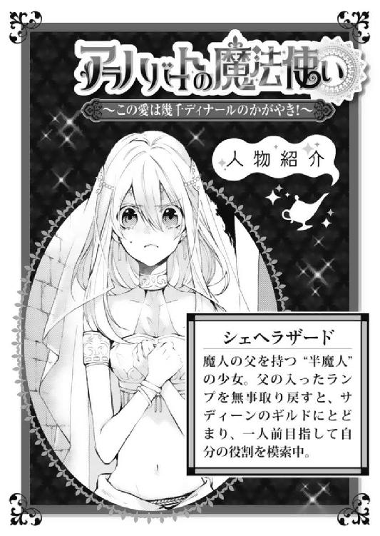
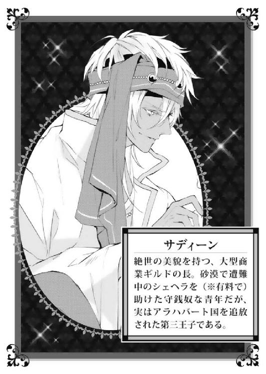
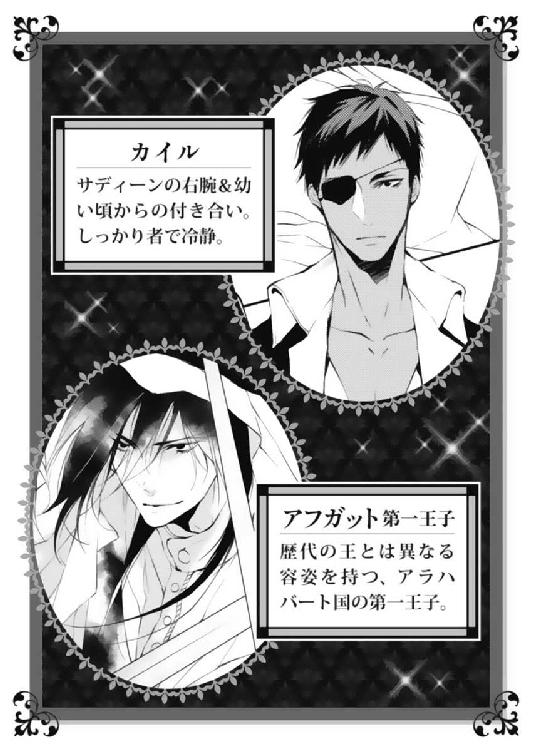
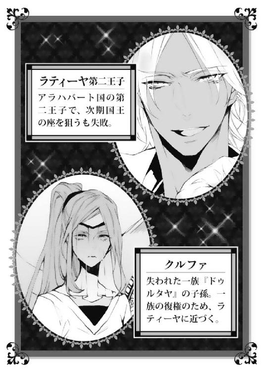
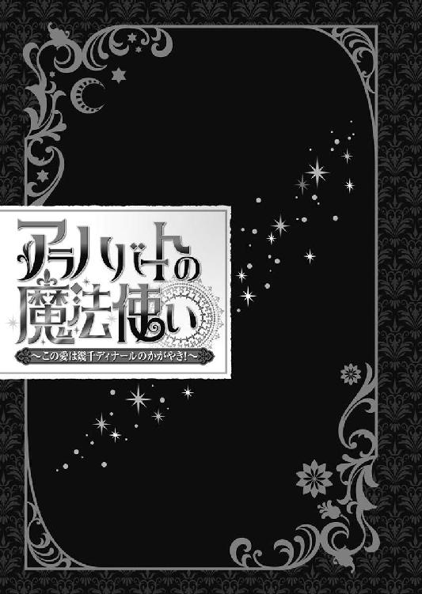
シャフリヤール王子が、美しき母と共に城を追われたとき、彼に許されたのはたったふたつのことであった。
ひとつは、通用口ではなく、正面玄関から城を出ること。
もうひとつは、王籍を抹消する代わりに与えられた、必要最低限の生活資金を受け取ること。
幼き王子の上には、彼を明るく照らす太陽が──いっそみじめな気持ちになるほどに輝いていた。
使用人たちが、母と自分の私物を露台の上から落としてゆく。
衣類や装飾品にはじまり、食器や花瓶のたぐいは粉々に割れ──そしてシャフリヤール王子の勉強道具が地表に叩きつけられたとき、ようやく彼も、『王子』としての自分がここで死んだことを理解した。
剣術の稽古のために使い込んだ模造刀、父王のためにいつか役立てようと少し背伸びをして読んだ、政治や経済の書物──。
露台から自分たち母子を見下ろす父に届くように、王子は声を張り上げる。
「父上、お待ち下さい──」
国王は息子の呼びかけに応えることはなく、無表情のままであった。
シャフリヤールが、絶望的な気持ちで父を見上げていると、彼の背中を優しいぬくもりが包んだ。
母は、いつもと変わらぬ鈴を転がすような声で、
「いいのよ、シャフリヤール。──いいの」
と、彼の耳元で繰り返した。
彼の母親は、そうして幼い息子の手を取り、王から与えられた数々の贈り物をこの場に残し──『白の宮殿』に背を向けた。
いいものか。きっと父の正妃が、三番目の妻への寵愛を許さなかったに違いない。父は本当なら、自分たち母子を守るべきであるはずなのに、こんな目に遭わせるなんて。
自分にひどい名前をつけるだけでは飽きたらず、ついには面倒になって自分と母を捨てたのだ。
あいつは父親でも何でもない。
絶対に、あの男を許さない。
サディーンは、開いていた帳面から顔を上げ、彼らしくもない盛大なため息をついた。
──嫌なことを思い出しちまったな。
気分を変えるために立ち上がり、伸びをする。手首で遊んでいた翠玉の腕輪がするりと肘まで下がった。
それもこれも収穫祭の売り上げが完全に赤字だったことが良くない。赤字の帳簿ほど彼の気分を落とすものはほかにないというのに、見れば見るほどげんなりする。抱えすぎた在庫、廃棄処分した飾り菓子......。次第に気分は暗くなり、思い出したくもない過去までふっとよぎってしまったのだった。
──『砂海の涙』がなかったら、優勝を逃していたな。
秘宝の真珠『砂海の涙』のおかげで収穫祭で一番の活躍を認められたギルドは、王宮から賞金が与えられることとなっている。
次に活動場所を移すに当たって、王宮から出る賞金を当てにしなければならないとは、我ながら情けないことである。それでもギルドの食費を削らずにすむくらいに蓄えがあったことは幸いであった。
バザールの初陣は完全に惨敗であった。もっと彼の想像の中に、華々しい結果があったにもかかわらず、だ。
「残りは全部カイルに任せるか......そもそもあいつのが得意だし」
本人が聞いたら目を吊り上げて怒り出しそうな台詞をさらっと言ってのけ、彼はいそいそと帳簿をまとめはじめた。
今回は赤字になってしまったものの、賞金と優勝による宣伝効果でこれからいくらでも取り戻すことはできるだろう。
それに、バクラーシへの手形も、手元にある。
バクラーシは、隣国ベルシアが自国の技術者を囲い込むために作った商業都市である。入市には通行手形が必要なのだが、サディーンはこれをベルシア王国の外孫でもある異母兄のアフガットから譲り受けていた。
輸出入を極端に制限されたバクラーシの物産はギルドをのし上げるだろう。特に毛織物は入手困難な高級品、しかも王室御用達の特別製だ。たとえ絨毯一枚でも、驚くほどの利潤を産むに違いない。
バクラーシへたどり着くことさえできれば、あとはこっちのものである。
（移動に必要な金......賞金をわざわざ取りに行かなきゃいけないのが難点なんだがな）
仕入れはもちろんのこと、ギルトの渡航費や人件費を考えると、相当な資金が必要になる。
帳簿の間からはみ出した書状を、サディーンはそっと開いた。何度も目を通したその文面は、まごうことなき現国王の筆跡で、懐かしさと共にやるせない気持ちが込み上げてきたのであった。
代理を認めてくれればカイルに取りに行かせたのだが──。
書状は祭りの優勝者に毎年贈られるお決まりの文章で始まったが、最後に必ず長のサディーン本人が王宮に出向くようにと締めくくられていた。
この書状を届けにきた使者も、サディーン自身が来なければ賞金は渡すことができないというのだから、さすがにカイルに押しつけることはできない。
サディーンにとって王宮とは、母と共に追われ、兄王子に利用されるために呼びつけられた、ろくな思い出のない場所である。
表彰式が近づくにつれ、彼の心はどんよりと曇っていった。
（いかん。景気の悪い顔は金が逃げる。気分転換しなければ）
よし。シェヘラのところに行こう。彼女を抱っこすればすぐに気持ちが回復するはずだ。
サディーンは書状をぞんざいにしまい込んで、ターバンを巻き直した。
最近の楽しみは、もっぱら彼の小さな魔法使いである。
人目につかぬ、テント村の裏。
バスコーの手前の集落で天幕を広げたギルド一行は、表彰式前の最後のひと稼ぎをするため、西部の町で仕入れた品を並べている最中であった。
シェヘラはとつとつと、絨毯に向かって説教をする。
「あのね。手伝ってくれるのはとってもうれしいんだけど、あたしは自分の力でこれを運ばないと意味がないの。分かる？」
絨毯は不思議そうに体をねじっている。どうやらこれは理解していないらしいと踏んで、シェヘラは人差し指を立て、もう一度分かりやすく説明をした。
「品出しは確かに大変だけれど、みんな自分の腕でこれを持っていくのよ。なのにあなたってば......」
シェヘラがうんしょ、と干し果物の入った袋を運び、さぁ次の袋を......と振り返ったときには、絨毯がシェヘラの運ぶはずだった荷物を乗せて、得意気についてきていたのだった。
父から贈られた魔法の絨毯は、相変わらずシェヘラの魔力を吸っては気ままに行動しているのである。
最近は、その「気まま」に振り回されてばかりだ。いざというときに助けられることもあるので、怒ってばかりはいけないとは思うのだが、人のいる場所で飛んだり跳ねたりねじったりされると、さすがに困る。
「魔力を勝手に吸わないでっていつも言っているでしょう。どうしておとなしく寝ていてくれないの」
絨毯はどこ吹く風で、ふよふよとシェヘラの周りを漂っている。
「まだ明るいんだから、丸くなっていてってば！」
シェヘラがつかまえようと手を伸ばしても、絨毯はさっとよけてしまう。彼女はもたもたと絨毯にからかわれてばかりいるのだ。
（こんなところをお客さんに見られたら大騒ぎになっちゃうのに......！）
「お嬢さん。俺とも遊んでくれません？」
一瞬どきりとしたが、それは聞き慣れた青年の声だ。シェヘラはほっと胸を撫で下ろした。
サディーンは、白いマントの裾をひるがえしてこちらにやってくる。相変わらず迫力のある美貌に、過剰なほどの装身具で身を飾り、自信に満ちあふれた足取りである。
一瞬見とれてしまったものの、彼が在庫の山をちらりと見たので、シェヘラはあわてて、口を開いた。
「遊んでいたわけじゃないのよ。その、お仕事をもらったんだけど......」
サディーンは苦笑した。
「たまたま親切な絨毯が通りかかったんだな」
魔法の力は人を助けるときに使う、とシェヘラは決めている。サディーンもそのことはよく分かっているようなので、魔法を使って仕事をずるけていたわけではないと、すぐに察してくれたらしい。
「しかし、カイルは鬼だな。シェヘラは細っこいのに、こんなに大きな荷物を運ばせようとするとは」
「鬼じゃないよ。みんなができることを、ちゃんとあたしにもできるように教えてくれてるんだもの」
そう。今はまだ無理でも、数年後には自らの店を開けるかもしれない。来たるべきときのために、今は体を鍛え勉強に勤しまなくては──。
「商人になるには、早くても二年はかかるってニーダは言っていたし、このくらいで音を上げてる場合じゃないわ」
「お前の言う一人前って、店を持つことなのか？」
サディーンにたずねられ、シェヘラは言葉に詰まった。
「わ......分かんない」
そもそも、何のお店を出すのかもまだ定かではない。
（今まで必死に、自立をしなければ、とばかり思っていたけれど......一人前って、いったいどのくらいになればそう言えるのかしら）
「そういうのを考えるのも、ひとり立ちに必要なことだぞ。商売は残念ながら全部が全部成功するわけじゃないからな。店を持ったら当たり前だけど、利益を上げなくちゃならん。商売がへたなら、すぐに潰れちまう。誰にどんなものを売るか、それは誰が必要としているものなのか──考え抜いて最適なものを選んだと思ったのに、アテがはずれることも珍しくない。うちのギルドも、見誤っては店の看板を替えるやつもいるんだ。けど、自分の軸がぶれなければ、そうなったときでも対処のしようはあるからな。シェヘラのなりたいものがどんなものか、ちゃんと考えたほうがいい」
シェヘラは、ごくりと唾を吞んだ。商売がえてして水物であり、そして運に左右されるものだということも、仲間たちの会話から何となく察していてはいたのである。
商いというものは難しいものなのだ。
急に自信がなくなってきてしまい、シェヘラは下を向いた。
「どうした。怖気づいたか？」
「うん......ちょっとだけ」
毎日、商店の手伝いをしながら旅についてゆくだけでもやっとの自分は、この先大丈夫なのだろうか──。
「心配するな。俺を頼れって言ったろう。一緒に考えるし、何かあれば助けてやる。他の奴だって、みんなで助け合って店を出してきたんだ」
「う......うん」
「それに、俺は将来の夫だからな。遠慮せずに甘えていいんだぞ」
シェヘラの顔は、ぼんっと赤くなった。
収穫祭の夜に、ふたりで過ごしたときのことを、思い出してしまったのだ。
真夜中の海岸で、シェヘラは自分から手を伸ばして、サディーンに触れたのだった。
（あ、あれじゃまるで本当に、恋人同士か夫婦みたいだったわ......）
自分でも何であんなに大胆な行動をしてしまったのか、分からない。ただ彼を好きだと思ったら、自然に手が伸びていた。
あのとき以来、サディーンを気がつけば目で追って、耳は彼の澄んだ低い声ばかり拾っている。
サディーンの金色の瞳に映った自分の頰は、思わず目を逸らしたくなってしまうほどに、熱を帯びていると気がついてしまうのだった。
「おーい」
サディーンがシェヘラの顔の前でぶんぶんと手を振っている。金の指輪の残像に、シェヘラははっとした。
「どうした。サディーンとは結婚しないから！ って言わないのか？」
シェヘラが赤くなったまま動かないので、サディーンはおお、と声を上げた。
「長かった......。これでようやく俺の禁欲生活も幕を閉じるのか。さあまずは結婚式の衣装を揃えような。バスコーの風習にのっとって七日間の婚礼にしよう。花嫁衣装は暖色と寒色からそれぞれ選ぶとして、初日に着るものはやっぱり特別だろ？ 前から考えてたんだけど、西の部族の──」
「ま、待って待って!!」
気がついたらサディーンがアラハバートの刺繡技術について語りはじめるところであったので、シェヘラは慌てて頭を振った。
「何だよ。言っておくがせっかくの結婚式に地味な衣装はなしだからな。もったいない」
「あ、あたし結婚するなんて言ってないでしょう」
「でも、今しないとも言わなかっただろ？」
うっ、とシェヘラは言葉に詰まる。
彼のことは好きだけれど、だからといってすぐに結婚できるかと言われたら、そうではないわけで......。
「シェヘラ」
「な、なに」
あまり耳元でしゃべらないでほしい。耳まで赤くなるから嫌なのだ。
「俺は、恩人より少し上の位置にいるか？」
以前サディーンに自分のことが好きかどうかをたずねられたとき、シェヘラは「父や自分の恩人であり、大事なひと」と思っている、と答えていた。
その後に、彼に対する気持ちに恋愛感情が入っているということが、分かったわけだけれど......。
「ただの恩人と、夜の海岸で抱き合ったりしないだろ？」
確かに、ただの恩人であればそのような触れ合いはしないだろう。あれはシェヘラが彼のことを好きだから、そうしたのだ。
「そ、それは......」
「恩人より上か下。どっち」
サディーンはやたらと迫力のある顔で聞いてくる。上か下の二択。ならば答えはひとつしかない。
シェヘラは顔を紅潮させて、
「う......上っ」
「おお！」
サディーンはらんらんと目を輝かせた。シェヘラは動悸と目まいですぐにでも倒れそうであったが、どうにかこらえた。
「恩人より上ってことは、シェヘラにとって、どんな存在だ......？」
「え、えっとえっと......」
恩人より上ではあるが、サディーンはシェヘラと恋人同士というわけではない（ニーダによると、恋人同士というのはお互いに恋人になりますという意思確認が必要である）。友達という関係も何だか違う気がするし、ギルドの長と見習いでは、距離があるような気がする。
旅をしながら衣食住を共にして、サディーンはシェヘラにとって家族のような存在になりつつあった。仕事や生活の知恵をシェヘラに教え、時に優しく頭を撫でてくれる。シェヘラも、彼に応えたいと思う。サディーンは、ギルドという家族の中で一番好きな人になったのだ。
シェヘラが口ごもっていると、彼はシェヘラをひざの上に横抱きにしてしまった。サディーンのつけている香料の匂いをぐっと近くに感じて、途端にシェヘラの心臓は早鐘を打ち始める。
「教えて、シェヘラ」
（だめだ、どきどきして、ぜんぜん考えられない！）
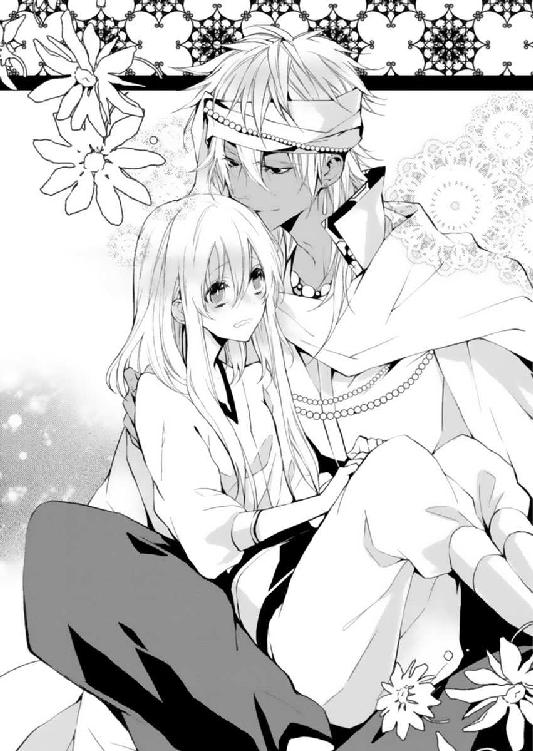
彼の鼻先が、髪に当たった瞬間に、シェヘラはまくしたてるようにして話し始めた。
「う、うまく言えないけど......強いて言うなら、心臓に悪い人だと思う」
「......は？」
「サディーンといると、胸がどきどきして、分かんなくなっちゃうの。あたし口下手で、伝えたいことがあっても、全然うまく伝えられないし。サディーンのこと、とっても大切だと思ってるし、サディーンと一緒にいられるのはうれしいけど、というか本当はもっと一緒にいたいけど、お互いお仕事があるから我慢しなくちゃいけなくて、だから......あれ、何て言おうとしたんだっけ」
「分かった。よく分かった。ちゃんと言ってる、大丈夫」
サディーンはくつくつ笑って、シェヘラの髪に頰ずりした。
「俺は心臓に悪い人になれてうれしいよ」
「そ、そうかな......」
「うん。間違いない。俺は今幸せだ」
断言されて、シェヘラはひとまず口をつぐんだ。......何だかものすごく恥ずかしいことを口走った気がする。もう思い出さない方が、いいかもしれない。
「でも、ちょっと位置づけが微妙なんだよな。心臓に悪い人って言うと俺が突然奇声を上げて物陰から飛び出してくるような人間に思えないか？」
「そ......それは怖いね......」
想像してしまったのか、かたわらで絨毯がおろおろとしている。
「すぐに結婚はできないのなら堂々と人前で言える関係になりたいなぁ。たとえば......恋人同士とか」
「こいびと......どうし」
サディーンがその言葉を持ち出したならば、覚悟を持って受け入れるように。
後夜祭ののち、少しだけ頰を赤くさせて宿に戻ったシェヘラに、ニーダは言い聞かせたのであった。
シェヘラ。あなたの顔を見るに、進展があったのだと思って、話をさせてもらうわよ。サディーンは今まで、特定の恋人を作ったことがないのよ。......まぁ、火遊びはちらほらあったけどさ。詳しくは言わないことにするけど。
だからこそ、彼が恋人同士になりたいと言ったら、ちゃんと了承するのよ。それはサディーンの本気のあかしに他ならないんだから。シェヘラが来てから移動しても女のところへ行こうとしない奇跡が起きているの！ ぜひ奇跡を長続きさせてちょうだい！
え？ 恋人同士になったらどうなるのかって？
今の関係で名前が変わるだけよ。まぁ、ちょおっと今より親密になったするかな、うん。若干。そんな目をしなくても大丈夫だってば。
（......本当、なのかな）
ニーダの言葉を思い出しながら、シェヘラはおずおずとサディーンを見上げた。
「恋人同士になったら、何か変わるの？」
「そうだなぁ。俺たちの仲が公認になって、みんなが祝福してくれると思うぞ。それに、俺はシェヘラに悪い男が寄りつかないように追っ払う口実ができてだな」
自分に言い寄ってくるような物好きは、サディーンくらいのものだと思うけれど......。
ラティーヤ王子に「自分のものになれ」と言われたことならあるが、それはシェヘラというよりも、彼女の魔法目当てである。
「何より今より仲良しになれる。どうだ。友達より仲良しで夫婦ではない、今の俺たちにとって理想の関係なんだ」
「す......すごい」
とても便利な商品を説明するときのようによどみない彼の口調に、シェヘラは思わず感嘆の声を漏らした。
恋人同士というものはよく分からないが（幼い頃両親にたずねたことはあったが、魔人の父は「まだ早い」と言ったし、母は「できたら教えなさいね」と笑っていたので、具体的なことは何も知らないのであった）、そう言われると今の自分たちにぴったりの間柄であるような、気が......。
「それに今恋人同士になればお得なことがいっぱいだ。まずはシェヘラが王宮へ行くのに必要な衣装を俺があつらえることができる。ひとりでは不便な着替えのときも、なんと俺がついてくる。さらに、脱ぐときは俺が一枚一枚丁寧に......」
「し、真剣に聞いてたのに......！ いらないよそんなおまけ！」
「まぁ......半分くらいは冗談だよ。でもどうだ？ 恋人になってくれるか？ シェヘラもいろいろと段階を踏んだ方がいいだろ？」
着替えのあたりが半分のうちの冗談でありますように......と思いながら、シェヘラは考えてみる。
あたしは、サディーンのことが好きだ。ひとり立ちはしていないので、まだ彼と家庭を持つ気にはなれないけれど、もっと仲良くなりたいと思っている。自分たちの関係に恋人同士という名前がつくことで絆が深まるというのなら、そうしたい。
シェヘラはかすれるような小さな声で、言った。
「サディーンと、恋人同士に、なる」
「おめでとう!!」
突然四方八方から祝福の叫び声が聞こえて、シェヘラはびくっと肩をこわばらせた。
いつの間にか、物陰から無数の気配が......。
「いやー！ みんないつから聞いてたの！」
ニーダをはじめとするギルドの仲間たちが、在庫の後ろからぬっと姿を現した。
ニーダが、悪びれもせずに答える。
「ごめんシェヘラ。シェヘラが絨毯に気を取られている間に、なんかいろいろおっ始まったから隠れて見てたっていうか」
（それって、ほぼ最初からじゃない！）
「なっ。みんな祝福してくれるって言ったろ」
「サディーン！ みんながいるって、知ってたのね」
「いやほらー......俺いろいろと求婚断られたり贈り物断られたりで、かなりかわいそうじゃないか。だからシェヘラが一度認めたら簡単に撤回できないように証人がいた方がいいかなと思って、あえて放置してみた」
求婚を断ったのも贈り物を断ったのも、間違いなくシェヘラ本人であるため、彼女はうっと言葉に詰まった。
「長かったねぇ。まさかこんなにかかるとは思わなかった。新しい恋人たちに乾杯しよう。宴会だ宴会」
「ふたりの結婚式より先に第一子誕生に十ディナール」
誰かの言葉に、みなが空き箱に銀貨を投げ始めた。あちこちから飛び交う銀貨を見たニーダが、嬉々として叫んだ。
「サディーンがろくにおさわりもできずに数カ月経過に賭ける人はこっちに銀貨をちょうだい！ 私はこちらに百ディナールを賭ける！」
「に......ニーダ！ 恥ずかしい賭けはやめて！ それにまだ品を出しきってないよ。騒いでたら、カイルに怒られ──」
サディーンは、シェヘラの口元にぐっと手を押し当てて、言葉の続きを吞み込ませた。
天幕の隅から遅れてのそりと立ち上がった人物に、その場にいた全員が戦慄する。
「......作業がいっこうに進んでいないようなので、様子を見にきたんですが、理由が分かって何よりです」
「か......カイル......」
「全員そこに座りなさい！」
絨毯がこそこそとはいずってその場を離れようとする。カイルは容赦なく絨毯を摑み上げ、在庫の前に連れて行った。
「これ、運んだのはあなたのようですね。『親切な絨毯』が通りがかったんですから」
（わ、わりと最初の方からいた──！）
シェヘラは顔を蒼白にした。
「勉強期間の主人の仕事を奪うとは何事ですか。あなたには仕える者の心構えがなっていません。聞いてますか」
「......はたから見ると、あいつやばいな」
絨毯をぎりぎりとねじ上げて説教をするカイルを見ながら、サディーンはシェヘラにささやいた。
「サディーン！ 恋人だからといって見習いを甘やかさないでくださいね。シェヘラザードには新しい肉体労働を与えますのでこちらに来るように」
（に......肉体労働に限定された......！ 心なしか当たりが強い気がするわ）
シェヘラはカイルに引きずられ、テントの組み立てや掃除洗濯、ラクダの世話まで手伝わされ、はじめての恋人ができた喜びにひたる時間はいっさい与えられなかった。
カイルに怒られた絨毯は、翌日まで丸まったままめげていた。

白の宮殿、王子の住まう左棟の一室。
第一王子アフガットの私室には、アラハバートの地図や古代絵文字の解読書、そしてさまざまな薬品の配合式を書き殴った紙切れが、あたり一面に散らばっていた。
継承権が戻ると同時に、アフガットは取り上げられた私財や従者たちをすべて戻されたが、実際に彼がそばに置いたのは、偵察部隊のみであった。
政治はいまだ健在の父が取り仕切っている。アフガットが国の話し合いに参加しなかった間も滞りなく政務は進んでいた。
つまり自分は、父に重用されるような存在ではないということに他ならないのであった。
そのことに悔しさを覚えたものの、裏を返せば自由に動くことができるのだと気がついてからは、アフガットの意識はアフラ砂漠の地下へと向いた。
消えた第二王子、ラティーヤに関してである。
あの地下水路は奇妙であった。三代国王の霊廟と繫がっており、異母弟のシャフリヤールいわく、かなり古い時代の基礎に近年の修復が加えられているというのだ。
ラティーヤのそばにいた女は、「ドゥルタヤ族のクルファ」と名乗ったらしい。
クルファは、地下の墓場を知り尽くしているようであった。
あれからドゥルタヤ族に関しての資料を読みあさったが、特筆すべき何かを見いだすことができなかった。どこかの時代で、記録が改竄されているかのようだ。
ラティーヤはクルファを信頼しているようであった。となれば、クルファから離れることはしないだろう。......そもそも、薬のおかげで離れたくても離れられない状態であるかもしれない。
ラティーヤは、もう危ない。地下ではすでに意識の混濁が見られた。彼を操るクルファも、大がかりな事件を仕掛けた以上は黙って引き下がるようなことはしないだろう。彼が王籍を失ったことを知れば、必ず手を打ってくる。王家に弓を引くべく、捕食者が獲物のすぐそばで息を殺すように、今は静かに機会を狙っているはずだ。
アフガットは、自身に王位継承権が戻されたことに安堵した反面、第三王子と同列に置かれたことで立場をおびやかされたままであった。
何としてでも──シャフリヤールより先に、ラティーヤとの確執に決着をつけたい。父が健在のうちに。
それに、ラティーヤを追って地下を調べるうちに、気になる問題も浮き彫りになった。
問題はこれを、どう処理するかである。
アフガットは目を細めた。
もうひとりの継承権第一位も、この問題をけして避けては通れまい。
どちらが次代の国王となるか──先は見えない。選ばれるのは、もしかしたら自分ではなく、もうひとりの異母弟であるかもしれないのだから。

収穫祭の最終日からはやひと月半が経ち、首都が落ち着きを取り戻した頃。
まだ祭りを忘れるには早い、と言わんばかりに、華々しい表彰式の知らせが、町のいたるところに張り出された。
収穫祭のおりに見事優勝ギルドを当て、一晩で高額の賭け金をせしめた勝負師たちは、この知らせを耳にするなり己の武勇伝を酒場でわめきたて、女たちは舞姫を飾った美しい真珠にふたたび胸をときめかせたのであった。
大通りに連なる建物は王家を讃える鷹の紋章をかたどった垂れ幕で飾られ、この機会を逃すまいとする商売人たちが定価に上乗せした値で果物菓子やカフワを売りさばいている。
踊り子たちが王宮へと続く道に花を撒き、式の始まりを告げた。
実際に宮殿の中に入ることができるのは限られた資格者だけなのだが──お祭り事に目がないバスコーの民は城の周りに集まって、それぞれ主役の登場を待った。
今年の主役は、例年とは一味も二味も違う。
若く見目麗しきギルドの長。そして彼は、現国王の三番目の息子にして城を追われた、『不吉の王子』である。
おまけに収穫祭で舞姫をかどわかした『シャフリヤール』を名乗る犯人からの予告によって、かつてないほどの好奇の目線を向けられていたのであった。
もちろん犯人は、シャフリヤール王子本人ではなかったものの、話題を独占するには充分すぎるほどである。
「視線で人を殺せるなら、俺は既に即死だな」
そうつぶやいて、サディーンはやれやれ、と肩をすくめた。彼とシェヘラを乗せた馬はのろのろと先導に従って歩き、のんきそうな鼻息を吹く。
シェヘラは別の馬に乗せてもらおうとしたのだが、サディーンが自分と一緒の馬に乗せると聞かなかったのだ。
観衆たちは自分でなくサディーンを見ていると分かってはいるものの、突き刺さる視線の多さになんとなく居心地が悪くなって、シェヘラはそっと目を伏せた。
「......みんな、サディーンを見ているわね」
「いっそのこと馬の腹を蹴って王宮までひとっ走りと行きたいぜ。あー見ろ、あんなに遠いぞ宮殿は」
げんなりした声を上げて、サディーンは視線の彼方にそびえる、いくつもの尖塔に囲まれた『白の宮殿』を眺めていた。
真っ白なたたずまいの巨大な宮殿は、砂漠の地に降り立った聖なる生き物のようである。
前を歩くカイルがじろりとこちらを振り返り、サディーンは如才ない笑みを浮かべる。
「こえーなあいつ。すぐに俺がたるんだのを見抜いたぞ。背中に目がついているのか」
「......たぶん、違うと思うけど......」
シェヘラはちらちらと、馬にくくりつけた群青の絨毯を気にしていた。シェヘラと離れるのを嫌がって暴れ回ったため、こうして持ってきたものの、このような目立つ場所で勝手に動かれたらと思うと、生きた心地がしないのであった。
（うう......ぜったい、おとなしくしててよね......！）
絨毯も林檎や望遠鏡のように控えめだったら、悩むこともないのだけれど......。
ふと、首をかたむけてサディーンを見上げると、彼らしくない物憂げな表情である。
「どうしたの？ 具合が悪い......とか？」
「違うよ。これから表彰式だと思うと、ちょっとな」
表彰式は、ほかならぬアラハバート国王が執り行う決まりであるということを、先ほどになってシェヘラも知ったのであった。
もうすぐ、再び親子が対面するときがやってくる。
「お父様と、お話しできるといいね。この間はそんなに長いこと一緒にいられなかったんでしょう」
「俺の父親はシェヘラのところの親父さんみたいじゃないよ。一緒にいたって、何も話すことはない」
「サディーン......」
シェヘラが病に伏した国王を「どんな怪我や病気も治す」命の林檎で助けたのちに、サディーンは一度父王と対面している。
ただ交わしたのは儀礼的な言葉ばかりで、親子らしい会話はなかったとのことだが......。
（サディーンは、お父様を憎んでいる。お母様とサディーンを城から追い出したから。けれど、サディーンについた不吉の名前は、みんなが思うものと違う意味を持つのに......）
サディーンが王子時代に名乗っていた名は、シャフリヤール・ディオン・アラハバートである。
アラハバートにはかつて、シャフリヤールという名の王が存在した。
三代国王シャフリヤールはアラハバート国民にとって不吉の象徴。悪政の限りを尽くし、特に国中の乙女を惨殺した歴史は現在にいたるまで語り継がれているほどだ。
サディーンはその不名誉な名を継いだ王子であった。
けれど──サディーンの父親は、子を貶めるためにその名をつけたわけではない。間にはさまった『ディオン』は打ち消す者──つまり、サディーンの本名の意味は『不吉を打ち消す者』なのだ。
長らく誤解したまま育った彼は、最近になって自分の名の本来の意味を、シェヘラの父、魔人フーガノーガに教えられた。
けれどもそう簡単に、長年の溝は埋まるものではない。
「名前のことも、この機会にちゃんと聞いてみたらどうかしら。そしたらお父様の本当の考えも、分かるかも......」
「そうだな、そのうちな」
サディーンはそうつぶやいた。
（サディーン......本当は、お父様と話をしてみてほしいのだけれど......）
シェヘラは彼が城を出たいきさつを詳しく知っているわけではない。何も知らない自分が、サディーンの問題に口を出してもいいものなのかを量りかねている。
「悪いな。気を遣ってくれたのに」
しばらくしてから、サディーンは口を開いた。
「どうしようもないんだ、自分でも」
「サディーン......」
「でも、今はシェヘラや、ギルドの仲間がいる。あのときと同じ俺じゃない。堂々と賞金をもらって城を出るさ。そしたらすぐにバクラーシだ」
サディーンが首から下げた鎖の先には、ベルシア国の象徴である黒馬が刻まれた銀細工の通行手形がぶら下がっていた。バクラーシ入りを許されたあかし。
「早く外へ出てみたい。ベルシアは大国だ。アラハバートよりも刺激的で、すごいものが待っているに違いない。だから、少しの辛抱だよな」
「......そうだね。バクラーシがすてきな場所だといいな」
シェヘラは穏やかな声音で、そう答えた。
今は、まだやめておこう。彼と父親の確執について触れるのは......。
サディーンはたぶん、混乱している。ここ数カ月の間に、彼をとりまく環境はめまぐるしく変化した。
国王が倒れ、次代を巡って彼の異母兄たちは争い、サディーンは利用され巻き込まれた。そして、父王が回復したのちも、その争いは終わっていなかったのだ......。
ギルドの長の責任も負いながら、第三王子としての運命と闘わなくてはならない。サディーンが置かれている状況は、そういうことなのだ。
「王宮に行ったら、シェヘラに着せたいものがあるんだ。楽しみにしてろよ」
「い、いいよ。着るものよりも、バクラーシへの旅費が一ディナールでも多い方がいいわ」
「俺の個人的なへそくりから出してるんだから、大丈夫。ギルドの活動資金じゃないよ」
「それでも、受け取れないよ。あたしは自立するまで、贈り物はもらわないって決めていて──」
「恋人同士になってもそれか」
サディーンは少しばかり不満そうであった。彼がどんなに言っても、シェヘラが神子時代から愛用の長衣を着ているせいかもしれない。サディーンはシェヘラがこの衣服を着ることが、気に入らないのである。
（確かに......ちょっとだけ、生地が傷んできてるけど......まだまだ大事にしていれば着られるんだもの）
サディーンと同じ馬に乗ることになったとき、ニーダが慌ててシェヘラに厚手の上質なベールをかぶせたので、遠目から見ればそれなりに見えているはずである。
「俺があげた髪飾りは？」
「大事にしまってあるの」
だいたい、この神子服とローズウッドの飾り櫛は、組み合わせとしてひどくちぐはぐである。頭だけ過剰に立派になってしまうのだ。
「うぅーん。シェヘラ、倹約はかなり重要なことなんだがな。国王の前にその格好で、本当にいいと思うか？」
「えっ......あたしも、国王さまの前に出るの？」
てっきり代表者が賞金を受け取るだけだと思っていた。確かに、くたびれたものを着ていては、失礼に当たるのかもしれない......。
「着飾ることは、一見ぜいたくをすることに見えるかもしれない。けどな、きらびやかな格好をすることは、見る者を楽しませる──つまり、相手を歓迎したり、もてなしたりする意味があるんだよ。ギルドのみんなも、お得意さまを迎えるときには綺麗なものを着るだろう」
サディーンは普段から、外見に気を遣っている。腕輪や首飾りだけでなく、上着も数種類持っているようで、毎日組み合わせを変えているのだ。
（おしゃれは、サディーンの趣味だと思っていたけど......お客さんを楽しませたいっていう気持ちも、あったのかもしれないわ）
「じゃあみんなが歓迎会のときにくれた衣装を着るわ。それなら持っているし」
収穫祭のときに身に着けた橙のトーブは、地下水路に入ったことでぼろぼろになってしまった。
シェヘラの手持ちの『立派な服』といえば、ギルドの仲間から贈られた透ける青のベールとトーブだけである。
「いや、せっかくだから新しいものを着ろ。青は飾り櫛と合わない。それとも、また宝石を贈ってほしいのか？」
「い、いらない！」
そんなもの、いくらするか分からないじゃないの！
シェヘラが慌てて断ると、サディーンは苦笑した。
「倹約上手な魔法使いさんは、もちろんトーブを受け取るよな？」
つまり、断れば宝石を贈られてしまうということになるわけで。
（たぶん、宝石よりトーブのが安い......よね？ サディーンの負担になりたくない......）
彼はそんなことを気にしなくてもいいと言うだろうが、シェヘラは彼のへそくりをいたずらに減らしたくはないのである。
「う......うん。トーブ、楽しみにしてるね。ありがとう」
「受け取ってもらえるようで、うれしいよ」
サディーンに撫でられて、見物客から悲鳴のような声が上がった。
（はっ......いろんな人に見られてるってこと、忘れてた......）
彼女が顔を赤くさせている間に、ギルドの一行は城の王宮の門をくぐったのであった。
城の関係者に式典の段取りを確認していたはずのカイルが、妙な顔をしながら自分のもとへ戻ってきたので、サディーンは眉をしかめた。シェヘラを含める女子どもは先に離宮に入るように指示を出しており、ここにいるのはカイルとサディーンだけである。
「あなただけ、離宮ではなく宮殿に入るようにと......」
声をひそめて、カイルは告げた。
「アフガットか？ この間の事件のことで何か話でも？」
「分かりません。しかし、おかしいことは確かです。指定された部屋は、あなたがかつて暮らしていた場所と同じ。王子の私室ですよ。いくらアフガット王子でも、国王の手前その場所にあなたを通すことはできないのでは......」
現国王が追い出した王子を、勝手に宮殿で暮らしていた部屋に通せば、国王から不興を買うことは間違いない。
サディーンが出ていったのちに、誰かがその部屋を使ったかどうかは、彼には知るすべがない。けれども、一介の商人を泊めるには、不自然な選択であることは確かであった。
「アフガットじゃないとすると、その部屋を指定したのは......国王ってことか？」
わけが分からない、とサディーンは白の尖塔を見上げた。中央の宮殿を守るようにいくつもそびえ立つ尖塔は、見えない檻の格子のようで、彼を落ち着かなくさせる。
城を出ることになったあのとき、露台から落とされた食器類や紙束、模造刀に衣服、王子であったときの自分の所有物。それらが尖塔のてっぺんから降ってくるようで──彼は己の愚かな妄想に、辟易した。
「あの部屋は見たくもない。無視して離宮に行くぞ」
「国王の命令だとしたら、勝手は許されないのでは」
「知るか。何かの手違いじゃないか？ どうせ泊まるのは一晩だけなんだからな」
──そう、ここにいるのもたったの一晩だけだ。
自分はもうこの国の王子ではない。ただ賞金をもらいにきただけの、ギルドの商人なのだから。
王宮にたどり着くと、ギルドの面々は客人用の離宮に通された。
式典の後にはここで一晩かぎりのもてなしが与えられることとなっている。
雪花石膏で造られた純白の壁や柱がえんえんと続く廊下を歩き、真っ白の世界に映える赤の絨毯を踏みながら、ギルドの商人たちはめいめい与えられた部屋の豪奢さに感嘆の声を漏らした。
「あたしの部屋は、ニーダと一緒だね」
シェヘラは絨毯をふかふかの寝台に置いた。天蓋つきの、お姫さまが眠るような作りである。柱は花を象ったアラベスク文様が彫られており、乳白色の日よけ布が垂れていた。宿でも取らない限り寝台で眠ることはないギルドの生活に、シェヘラも慣れつつあったので、とてもありがたく感じた。
「すっごい、客間でこれかあ。本物のお姫さまはどんなもので寝ているのやら」
ニーダはあちこち部屋を物色し、ほうろう細工で細やかな装飾が施された鏡台を見つけると、さっそく蓋を開けて髪を整えはじめた。
「本当にね......あっ、絨毯、いたずらはだめよ」
ぼよん、ぼよん、と絨毯が寝台の上で跳ねている。行進の間中、ぐるぐる巻きの状態を我慢していたのだから今だけは大目に見ることにして、シェヘラはニーダと共に客間の探検を始めた。
「すごいわ。一室一室にお風呂がついてる......。お風呂屋さんに行かなくても、ここで全部済ませちゃうのね、王宮の人は」
「王族は王族で専用の浴場があるそうよ。立派なんでしょうねぇ」
髪をくくって立ち上がったニーダは、卓の上に果物の載った皿を見つけると、木イチゴの実をぽいぽいと口へ放り込んだ。
「残念だったね、サディーンと同室じゃなくて。カイルも頭が堅いなぁ」
彼女にからかわれて、シェヘラは頰にさっと朱を差した。
部屋割りはすべて、カイルが決めたのである。サディーンは最後までシェヘラを自分と一緒の部屋にしようとねばっていたのだが、ものすごい形相のカイルににらまれたため、おとなしくなったのであった。
「おーすごい。顔真っ赤にしちゃって」
「そ、そんな、同室なんてぜったい無理！」
「恋人同士なんだしいいじゃない」
一度彼と一緒に眠りこけてしまったことはあるものの、寝息を（もしかしたら寝言も）聞かれたり、身支度を整える姿を見られたりするなんて、とてもじゃないが耐えられそうにない。
「同室だったら、サディーンの貴重な着替えを拝見できるよ！」
「み、見ないでいい！」
おたおたしながらニーダから距離を取るシェヘラに、彼女はぶっと噴き出した。
「シェヘラってからかうと面白いよね。サディーンがいつもべったり構ってるのが分かる気がする。ね、おまじないの効果はあったんでしょう？ 恋人になったんだからさ」
いたずらっぽく笑って、ニーダは片目をつむった。
あ、とシェヘラは唇を尖らせる。
「そういえば、すっかり忘れてた。ニーダ、あたしに噓を教えたでしょう」
「噓じゃないわよ。もっと仲良くなりたいって伝えるおまじないって言ったでしょ。普通の女の子なら、ぴんとくるはずよ」
「あ、あれでどんなに恥ずかしい思いをしたか......！」
収穫祭でサディーンと気まずくなったとき、ニーダは彼女に、髪飾りを渡すようにと助言をした。
感謝の気持ちを伝えるための、習わしなのだと言って──。シェヘラはギルドを抜けようとしたサディーンを引き留めるために、ニーダに教えられるまま、髪飾りをサディーンに渡してしまったのである。
......そのあとのことは、今思い出しただけでも、熱湯の中に放り込まれたような気分になる。
ニーダは、几帳面に剝いていたぶどうの皮を放り出し、卓の上から身を乗り出した。
「えっ!? 恥ずかしいことがあった!? 待って、まず最初にどこに触られたか......そこから教えてちょうだい！」
「ふ、ふざけないで！ あんな意味があったなんて、知らなかったから、あたし......」
なんと、男性に髪飾りを贈るのは「私をあなたのものにしてください」と告白をする、収穫祭の大胆な言い伝えだったのだ。
もちろんシェヘラには、そのような願望は、これっぽっちもない。
「え!? 胸から触られた!? 声が小さい聞こえない！」
「そ、そんなことひとことも言ってません！」
主人が大声を出したので、何事かと絨毯が寝台で遊ぶのをやめてしまった。シェヘラはごほん、と咳払いをして、落ち着きを取り戻すために目の前の木イチゴに手を伸ばす。
「と、とにかく何もなかったわ。サディーンだってあたしがそんなことをするはずないと気がついていたもの」
「噓つき。さっき恥ずかしいって言ったくせに。何かあったのに隠す気ね」
木イチゴをわざと大げさに咀嚼して、シェヘラは黙秘を貫いた。
（実際に、何もなかったようなものだもの。背中に手を回されて、ちょっとささやかれただけで......）
あのときのサディーンは、どきどきしたけれど、少しだけ乱暴で怖かった。
今は優しく触れてくる。シェヘラのことを、怖がらせないように。
「実際、どうなのよ。恋人同士になったことだし、そろそろ結婚のこととか考えなくていいの？ バクラーシへ行けばしばらくアラハバートには戻ってこられないわよ。商売が軌道に乗るまで年単位の時間がかかるかも。あっちで結婚してもいいだろうけどさ、やっぱり二人ともアラハバートの人間なんだから、この土地のやり方で挙式したいじゃない」
「結婚はまだ、一人前になってからと思っていて、サディーンも了承してくれているし」
「一人前かぁ。どうすれば一人前になれるんだろうねぇ」
ニーダも、やっぱり自分のこと一人前って思っていないのかな......。
彼女の香料屋はとても繁盛している。新しいもの好きでおしゃれに目がない彼女は、アラハバートの女性たちの心をがっちりとつかんだ品を工夫しているようで、移動するたびに年頃の少女たちはニーダの露店に列をなしているのであった。
「ニーダは、まだやりたいことがあるの？」
「うーん、まぁお店でそれなりに生計立てられてはいるけどさ。これで満足したらもうそこで止まっちゃうじゃない。私は嫌よ、そんな地味な人生は」
どうやら彼女には、目標があるらしい。
（サディーンも、自分の軸を持つことが大事だと言っていた。きっとニーダもそういうものがあるんだ）
「ちなみに、ニーダの一人前って、どういう自分なの？」
ニーダはよくぞ聞いてくれたとばかりに、胸を反らした。
「そりゃもちろん、シェヘラみたいなうぶな子でも、体に火がついたみたいにむらむらするようなお色気香料を作ることよ」
シェヘラは盛大にむせる。
「絶対売れるわ......これは売れる。究極のお色気の匂いよ。いろいろ試してサディーンにつけさせているんだけど、なんかいまいち効果ないのよねー。シェヘラもまだ無事清らかだしなぁ」
「ひ......人を使ってそんな実験を......」
（何か間違いがあったらどうするつもりだったのよ！）
シェヘラがわなわなと口を震わせているのもお構いなしに、ニーダはしれっと言ってのけた。
「とりあえず私の目標は、ふたりの新婚初夜までにこのお色気の匂いを完成させることよ。そして私は初めて一人前と言えるようになると思うの。がんばるから待っててちょうだい」
「がんばらなくていい！ 別の目標を探してよ！」
「そうかなー。あれば絶対に役立つし夫婦仲も深まるし儲かるし、いいことずくめだと思うんだけど......」
ニーダは腕を組んで、首をかしげている。
（ニーダの目標は......参考になったような、ならなかったような感じだわ。でもとにかく、彼女は自分の納得のいく商品を作りたいってことよね、たぶん）
まずは自分がギルドで何をやりたいのかを決めた方がいいのかもしれない。ひとり立ちという目標は、漠然としすぎているのだ。
「シェヘラがやりたいこと決まったら教えて。サディーンも手伝うだろうけど、やっぱり女の子同士力になれることもあると思うし」
「うん、ありがとう」
シェヘラは顔をほころばせた。
「シェヘラに助けてもらった命だし、必ず何かさせてよ。お色気香料以外のことで」
ニーダは一度、熱病で生死の境をさまよった。シェヘラはどんな怪我や病気も癒やす命の林檎を使い、彼女を助けたのである。
「あのまま死んでたら、きっとあの世に行っても未練たらたらだっただろうからさ。本当にありがとうね、改めて」
「そ、そんなお礼なんていいよ。あたしは林檎の力を借りただけなんだもの」
扉を叩く音がする。サディーンが着替えを持ってきてくれたらしい。
「お礼の一環として、着替えを手伝わせてくれるよね」
ニーダは笑って、サディーンを迎えるために立ち上がったのであった。
サディーンが用意していた衣装は、植物の曲線を細かな刺繡で施し、透ける緑の紗を何枚も重ねた凝った作りのものであった。繊細に重ねられた生地はシェヘラが動くたびにふわふわと舞って、緑の影になるのである。
刺繡には目を凝らすと翠玉がちりばめられており、過剰に主張しないながらも贅沢な品であった。
「父さんの煙色だ......」
シェヘラは鏡の前で一回転して、ぱちくりと目を瞬かせた。
高価な服は着慣れていないので違和感があるに違いないと思ったのだが、濃い緑色もふわりとした裾も、魔人の煙のようで親しみやすい。
サディーンが、シェヘラのことを考えて選んだことがよく分かり、思わず胸の奥が熱くなった。
「シェヘラが気に入ったら、絶対同じところで結婚式の衣装をあつらえると思うわよ。この刺繡は今バスコーで流行してる花嫁衣装によく使われるものなのよねぇ」
着替えを手伝おうか、とサディーンは冗談交じりに言ってきたのであったが、ニーダが容赦なく部屋から追い出してしまったので、今は廊下で待っている状態である。
（恋人同士になるおまけが、ついてこなくてよかった......）
着替えにサディーンが同席するなど、気を失ってしまいそうである。
「結局、宝石と同じくらい高くなってしまったかも......」
シェヘラは翠玉に触れて、溜め息をついた。
式典という理由がなければ、シェヘラは普段と同じく贈り物を断っていたに違いない。
「シェヘラ。恋人からの贈り物は遠慮にせずに受け取っておくのが礼儀よ」
「でも、これ、サディーンのお金なんだよ」
彼が苦労して得たものを、当然のようにシェヘラが受け取って、いいのだろうか......。
働いて、お金を手にすることは簡単ではない。特に要領の悪いシェヘラは、いつも必死で生活費を稼いでいるのだ。
いったいどれくらいがんばれば、このトーブ一着分になるのだろうか。
（考えただけでも、気が遠くなりそう......）
ニーダは真面目だなぁ、とシェヘラの背を叩いた。
「サディーンは、大枚はたいても痛くないと思うほど、シェヘラのことを想っているのよ。彼がシェヘラのために選んだものに遠慮してたら、悩んで品を選んだ彼がかわいそうよ。ありがたく受け取って、かわいい姿を見せてあげるのが一番のお礼になるわよ」
シェヘラは鏡の中の自分を見つめる。父さんの優しい煙に包まれたようなトーブを着て、戸惑いがちにこちらを見ている。
この生地をどうやって選んだのだろう。いくつものトーブを手に取って吟味する彼を思い浮かべてみる。
（あたしが、袖を通しやすいようなものを一生懸命、考えてくれたんだ......）
今回ばかりは贈り物を返せそうになかった。
「これ、ベールをつけないとちょっと露出が多いな。サディーンの欲望丸出しじゃないの」
ぶつぶつ言いながらニーダはシェヘラの髪にローズウッドの飾り櫛を留めてくれた。
しっかりと頭に、揃いの刺繡つきのベールも固定する。
緑の衣装にルビーの飾り櫛で、瞳と同じ柘榴の花の色合いとなった。
（確かに......ちょっと、胸元が心もとないかも......）
ニーダの言うとおり、葉の飾りをあしらった肩紐は細く、鎖骨の部分は生地がうっすらと透けていて、少しばかり大胆な衣装であった。
似合っているか心配になったが（残念ながら、シェヘラは豊満からはほど遠い体形をしている）、サディーンが選んでくれたと思うと、うれしい。
「ありがとう。......なんだか、衣装負けしてないかな」
「ぜんぜん。身に着けるものは肌になじむものだから、慣れればそんなことも気にならなくなるわよ。はい、できた。待ちくたびれてる恋人に、見せてあげなさい」
シェヘラはおずおずと、立ち上がった。
ニーダにうながされ扉を開けると、サディーンは一瞬驚いたような顔をして、そして顔をほころばせた。
「予想以上だ。......かわいい」
さりげなくだったが、面と向かってそう言われたので、シェヘラはぼっと赤くなった。
い、いけない。すぐに顔に出るとからかわれる......。
ニーダが苦笑して、後ろで扉を閉める音がする。
「どうしたんだ、うつむいて。もっとよく見せてくれ」
「あ、うん、ちょ、ちょっと待って」
奥歯を嚙み、できるだけ表情を引き締めて、シェヘラはぐっと上を向いた。彼女の顔を見るなり、サディーンはぶっと噴き出す。
「ど、どうして笑うの」
「いや、何だかこれから戦場に向かう兵士みたいな顔をしてるから......つい」
（顔......がんばって作りすぎた......）
どちらにしろ恥ずかしくて消え入りたい気持ちになり、シェヘラは再び床を見つめてしまった。
「悪かった、どんな顔しててもかわいいよ。さあよく見せてくれお嬢さん」
「今顔赤いからやだ......」
「顔赤いなんていつものことだろ」
い、いつも赤いのねあたし......。
もういまさらだということに気がついて、シェヘラは朱に染まった頰を見せた。
「こういう格好もやっぱりいいなぁ。特に胸元が最高だ。式典放り出して二人きりで出かけたいくらいだ」
ベール越しに髪を撫でられて、シェヘラはうわずった声を上げた。
「だめよ、式典のための衣装......だもの。トーブもベールも父さんの煙みたいで、すごくきれいで、もったいないくらい」
「絶対気に入ってくれると思った。そのトーブ、大事にしてくれるな？」
シェヘラはうなずいた。
彼が自分のために選んでくれたのだ。一生の宝物にするつもりだった。
（飾り櫛も、宝物になった。サディーンといると、宝物がいっぱい増える。高価なものが増えたからうれしいんじゃなくて、彼との思い出が増えたのがうれしい）
ニーダが言っていた、金額を気にしなくていいというのは、きっとこういうことなのだとシェヘラは思った。
「ちょっと時間が早いから、離宮の周りを散歩してみるか？ シェヘラの好きそうな建国期の物語の庭があるんだが......」
「い、行きたい！」
ぱあっと顔を輝かせたシェヘラの手を取って、サディーンは満足そうにほほえんだ。
「入りましたねえ、三番目の王子さま」
露台を支える柱をするすると降りて、アリーは愉快そうな声音で言った。
ドゥルタヤ族の特殊能力で、顔は変えている。アフガット王子は継承権を取り戻したのと同時に、かつての環境も取り戻した。そうしてアリーたちは、晴れてアフガット王子の偵察部隊に籍を戻したのである。
アリーは気に入りの二十代の顔を、首を振って消し去った。
王子の前では素顔で行動しているので、露台で猿の真似事をしていたのが自分だとばれてはまずいのである。
アリーは年相応の、薄く皺の入った目元を細めた。
「これからどうなっちゃうのかな。どっちが王さまになるのか......俺たちの仕事ももうすぐ終わりですかね、先輩？」
シフラは、黙々と地下水路の模型を作製していた。苛立たしげに、声を荒らげる。
「おい、アリー。お前も手伝え。こういうちまちました作業は苦手なんだ。指が太くてな」
ならば、ちまちまカフワなんぞを淹れるのはやめればいいのに......。とアリーはそっと独りごちた。
シフラのかたわらでは、相も変わらず呪われた沼のようなカフワが、不穏な湯気を立ち昇らせている。
せっかく王宮の中にいるのだから、甘い果汁の入った冷たいものや、新鮮な茶葉の香りが漂う飲み物が欲しい。いや、贅沢は言うまい。あの泥水を飲まされるくらいなら、いっそのこと海へひとっ走りして、しょっぱい海水をがぶ飲みする。
「どれどれ。アフガット王子の命令ですか」
殺人級にまずいカフワを勧められる前に、アリーは設計図を手に取った。
「アラハバートの地下の構造を知りたいのかぁ。どこの穴が地上のどの場所に通じてるか、把握しときたいってところですかね。ドゥルタヤの通路を探しているのか」
北方の遊牧民族、ドゥルタヤ。
かつては神に最も近い土地と言われた彼らの居住地域は、今は廃墟となり果てている。
不吉王で知られる三代シャフリヤール王を生み出したドゥルタヤの一族は、その没後に国を追われ、地下へ逃れることとなった。
彼らは『砂モグラ』という蔑称で呼ばれ、アラハバートの民から激しい迫害を受けることとなった。それに耐えかね、王政へ反旗を翻し歴史上初の反王政派となった彼らを抑えるため、当時の国王はとある盟約を持ちかけた。
「直接道を教えてあげられないのが悲しいところだなぁ。俺たちはお役目上、口出しは御法度ですもんね」
次代国王を決定するための『試験』制度。国王の長子に次代として不適切な点が見つかった場合に他の兄弟と比較し優劣をつけ、現国王と共に選考するこの制度の判定者として、ドゥルタヤは千年にわたって秘密裏に王家に仕えてきた。
試験を受ける者たちは、もちろんドゥルタヤの存在を知ることはない。
アフガットが明らかに間違いを犯していたとしても、彼を観察するアリーたちはいっさいの助言や助力をせず、仮の身分で正体を隠し注意深く見届けるのみである。
シフラは、模型を作っていた手を止めた。
「クルファが地下で消えたことが気になっているらしい。毎日地図とにらめっこしながら道を足したり消したりの繰り返しだ。新たに手を加えるに耐える地盤の調査も同時進行させているようだな」
「はあ。学者連中に丸投げしなくなっただけ進歩だと言いたいけれど、俺たちが観察できる隙が減るなぁ。また部屋に忍び込んでいろいろと拝借するか」
「下手な仕事はするなよ。最近のアフガット王子は気が立っている。巻物の位置がほんの少しずれていただけでも、警備兵を増やすぞ」
アフガットお抱えの学者たちの顔を真似て近づき、堂々と研究の内容を把握することができなくなってしまったのは痛手である。アフガット王子は用心深い性格をしているので、顔を変えたとしても正体を見破られる可能性は十二分にありうるのだ。
何度かアフガットの私室に忍び込み彼の様子をさぐったこともあったが、玄人のアリーですら王子の神経質な性格に舌を巻いたのであった。──そのわりに、虫やキノコは平気だというよく分からない性癖の持ち主だが。
「いつまでも地下にこだわって。ラティーヤ王子と、クルファを見つける気ですね」
第二王子ラティーヤは、ドゥルタヤ族のクルファが連れ去り、行方知れずとなっている。
「現状、手がかりは地下に隠されたシャフリヤール王の廟しかないからな。もともとアフガット王子は古いものが好きだし、得意分野だ。ここから弟王子の潜伏先を摑もうとしているんだろう」
「舞姫誘拐事件の犯人を放置しておくわけにはいかないですからねぇ。この問題に、もうひとりの継承権一位はどう向き合うのかな」
アリーは、先ほど魔法使いの手を引いていた、褐色の肌の王子のことを思い出していた。
あのシャフリヤール王子は、現在自分が継承権第一位であることを知らないままである。
この機会に国王は彼を王宮に戻すつもりで、式典では代理を許さず、本人をこの場所へ呼びつけたのであった。
「国王になった方がベルシアの姫君と結婚かぁ。見た目からして血筋に問題がないのは明らかにシャフリヤール王子だし、アフガット王子不利ですよね」
シフラは、模型と格闘しながら、深く溜め息をついた。
「これほど先の読めない次代の観察もないだろうな。それに......クルファのこともある。分かっているな。王子がクルファを見つけ、あいつからドゥルタヤの情報がわたる前に」
「俺たちで始末をつける、でしょ」
アリーは、さっと顔の作りを変えて、肩を回した。
「ドライドのところへ行ってくる。シャフリヤール王子がいるなら、あいつもついてきているはずだ。クルファを必ず、王族から引き離す」
彼女の目的は、ラティーヤ王子をあやつり王権を掌握すること。そして次期国王の母となり、ドゥルタヤを強大な一族としてのし上げることであった。
「俺たちは、砂モグラだ。これは卑下でも何でもない。地面の下から国を支える、誇り高き一族なんだぜ。あのバカ女のいいようにされてたまるか」
ラティーヤ王子はクルファの甘言に乗り収穫祭を乱したことで、王籍を抹消される。
代わりに不祥事で一度は継承権を失った第一王子アフガットが、幼くして追放された第三王子シャフリヤールと共に、次代候補に返り咲く。
「まったく、めちゃくちゃだぜ。この世代はよ」
アリーは、面倒そうにぼやいた。
王子たちだけでなく、観察者たちにとっても、今回の式典は重大な転機となる。
既にそれは、ほんの数時間後に差し迫っていた。
シェヘラはサディーンと共に、『水晶の庭』を歩いていた。
離宮の賓客の目を楽しませるために造られたとされるこの場所は、緑ではなく水晶で構成された珍しい庭園である。
中央にまっすぐ真珠貝を散らした水路が延び、水中では色とりどりの魚が泳いでいる。
大小さまざまな水晶があちこちに配され、太陽の光を反射してそれぞれにきらめいていた。
「庭というから、植物がたくさんあるのかと思ったけれど、すごくきれいな場所ね」
「緑の庭ももちろんあるけど、ここはちょっと特別なんだよ。俺もガキの頃はよく来た」
サディーンは巨大な水晶の前にしゃがみ込んで、手招きしてきた。彼の真似をして水晶を覗き込むと、透明な石の向こうに歪んだ形の、魔人の姿が見える。
「どうなってるの？ これ」
「木片や鉄で作った魔人を水晶の中に閉じ込めてるんだよ。光の加減で変化を楽しめるようになっているんだ」
シェヘラは柘榴の瞳を凝らして、じっと魔人の姿を見つめる。
（これはおそらく、土の魔人ね。ちゃんと手に植物の種を持っているもの。あれが育つと七房の葡萄になるのよ）
「あっ、すごい。魔人の足元、ちゃんと水晶が砕かれているわ」
「何か意味があるのか？ これ」
「この魔人は育てた葡萄を人間に横取りされてしまって、怒って地面を踏み鳴らすの。そしたら土がどんどん乾いて割れてしまうのよ。人間は大切に育てていた家畜を、割れ目に取り落としてしまうの」
「知らなかったな。前からなぜこの場所だけ疵がつけられているのか不思議だったけど、そういうことだったのか」
「王宮は、伝説どおりの魔人がいっぱいだわ」
シェヘラが声をはずませると、サディーンも口元をゆるめた。
「物語が変わってるんだっけ？ シェヘラが話す方が面白いって、子どもらが言ってたぞ」
空き時間に、ギルドの年少の子たちにねだられて、シェヘラは父に教えられた建国期の冒険譚を話して聞かせているのである。
現在のアラハバートに伝わる建国期の伝説は、千二百年の間にさまざまな脚色や要素が盛り込まれ、現在ではまったく別の物語として定着しているのであった。
「あたし、父さんの寝物語を話しているときは楽しいなぁ......」
シェヘラは口下手であるのだが、子どもたちにとっては彼女が言葉を紡ぐまでの、ゆったりとした間がわくわくするようである。
「俺にも聞かせてくれよ。子どもらばっかりずるいだろ」
「でもあれは、もともと子ども向けの寝物語で──」
「じゃあ、結婚したときの楽しみにとっておくよ。毎日寝台で聞かせてもらおう」
シェヘラは、じわじわと己の顔に熱がせり上がってくるのを感じた。
（だ、だめだ！ お色気香料のことは考えないようにしなくちゃ）
こんなときにかぎって、ニーダの目標が思考の隅をよぎって、シェヘラはうろたえた。
だいたい、自分に結婚だの何だのは、まだ早すぎるのである。
魔法のことも、ギルドのことも、自分なりの答えを見つけていないのだから。それまでは恋にうつつを抜かしている場合ではない。......彼と一緒にいると、そんな自分が揺さぶられてしまうので、注意しなければ。
「ま、まだ結婚はしないから。ギルドでやるべきことを見つけてからだから」
「はいはい。結婚したら毎日一緒に寝起きして、飯を食べさせ合ったり一緒に風呂に入ったりしような！ あ、子どもは四人以上で」
すがすがしいほどの笑顔でそう告げられて、シェヘラは思わず後ずさった。
（そ、そんなことになったら確実に心臓が爆発して死ぬ！）
シェヘラは再び顔が林檎のように紅潮していることに気がついて、慌てて頰を押さえた。
「......やっぱり、早死にするから結婚できない」
「何だよその不吉な予言は──」
サディーンの言葉をさえぎるように、まばらな足音が響いた。
「ご歓談中、失礼いたします」
シェヘラは思わず、目を見開いた。
王家を讃える鷹の紋章を身に着けた武官が数人、サディーンの前に膝をついたのである。
（な......何で？ 王家の臣下が民間人にそんな礼の取り方を......？）
まるで、主に忠誠を誓うしもべのような──。
「国王さまがお呼びでございます。式典の前に一度、お会いになりたいと──」
サディーンは、冷たい目をして武官たちを見下ろしていた。
シェヘラに向けていたあたたかな金色の光は消えうせ、明らかな拒絶の視線である。
「俺には会う用事がない」
「そういうわけにはまいりません。これは勅命です」
ただならぬ雰囲気である。
シェヘラはサディーンと武官を、おたおたと見比べた。
（国王さまが呼んでいる......もしかして、サディーンと和解しようとしているのかも）
シェヘラの父である魔人フーガノーガは、サディーンの本名を愛情あふれた名前であると教えた。
（もし父さんの言うとおり、国王さまがサディーンのことを愛しているなら、彼とお母様をこの城から出したことにも何かきっと、理由があるはず）
彼はそれを知らなくてはならない。
サディーンは、せせら笑った。
「勅命か。そうだよな。俺は民間人だ。そう言われて逆らえるわけがない」
勅命を無視するような軽はずみな行いをすれば、サディーンだけでなく、彼の属するギルドにも累がおよぶことは明白であった。
「お連れも、ご一緒にとのことです」
「......え？」
シェヘラは、驚きのあまりサディーンと武官を見比べた。
「あたしも、ですか？」
「はい」
武官はシェヘラを呼び出す、詳しい理由を述べようとはしない。
（何だろう。心当たりがあるとすれば......あたしが国王さまに林檎の力を使ったことに関してだけれど）
ともかくここはついてゆくしかない。不安げに瞳を伏せると、サディーンはシェヘラの手を、力強く握った。
無粋なことをしてくれる。
サディーンはふきげんであった。
せっかく、シェヘラザードと恋人らしいひとときを過ごしていたというのに。あともう一押しすれば、サディーンとの結婚生活について彼女の考えを聞けたかもしれなかったというのに（早死にとかわけが分からんことを言われたが）。
それを、この鷹紋様のごつい武官どもが邪魔してくれたのである。
憎々しげな視線を送りつつ、サディーンは自分の手のひらにすっぽり収まっている、シェヘラの手を握りしめた。
シェヘラは、ぎゅっと返してくる。
普段と違う装いのせいか、余計にかわいく見える。というかちょっと露出させすぎたかもしれない。自分が見たかったからあの衣装を選んだのだが、武官がシェヘラに二度ほど目を向けたので、いらっとした。
王が何の用事で自分たちを呼び出しているのかは知らないが、とっとと済ませてバクラーシへ行きたくてたまらない。
ベルシアへ渡ってしまえばしばらくはアラハバートへ戻ることはないので、うっとおしい王族たちのいざこざから解放され、商売に集中できるはずである。
シェヘラには結婚したいという意思を伝えたが、彼女は大事な時期を迎えているので、言葉ほどサディーンは結婚を急くつもりはなかった。──まぁ、放っておくと仕事に夢中になって自分の求婚のことなどすぐに忘れてしまいそうなので、定期的に言うつもりだが......。
自分がバクラーシで商売人としての転機を迎えようとしているのと同じように、シェヘラもシェヘラで、自分を探す時期なのだ。
からいかいたくなって結婚だ風呂だ何だと言ったけれど、彼女を混乱させてしまったようである。
（子ども四人が重すぎたかな。とりあえず三人って言っておいて、二人目を産んだあとくらいから追加すれば良かったか）
一人目はシェヘラにそっくりな女の子がいい。着せたいものは数え切れないほどある。一番かわいいと思うのは、アラハバート西方に暮らす少数民族の伝統衣装で、小さな花をちりばめた色鮮やかな刺繡の貫頭衣である。あれはよく売れた。娘ができたら絶対に着せようと思っていたのだ。
（それを、この鷹紋様が邪魔しやがって......）
むなしい繰り返しになるので、サディーンは深い溜め息をつき、気持ちを切り替えようとなだめた。だいたい、シェヘラとのあたたかい家庭を想像したあとに、かわいげのかけらもない筋骨たくましい男を視界に入れるのは、あまりの落差に立ち直れなくなりそうだ。
武官たちは迷わず中央棟の方へ進んでいる。離宮を出て、緑あふれる中庭を通り、宮殿の西側、王族たちのための門へ入るつもりなのだろう。
それは王子であったとき、サディーンがよく利用した順路であった。
（この道筋だと、国王の用事は『ギルドの商人』にはないってことだな）
ここ数カ月間、第三王子シャフリヤールとして、目立ちすぎた行動を取っていたことは否めない。
本来は死んだことになっているにもかかわらず、船上で大立ち回りを披露したり、舞姫誘拐事件で勝手に名前を使われたり（と、いってもサディーンではなく兄王子ラティーヤがやらかしたことなのだが）、最終的にはその舞姫を救出してアフガット王子に託したりと、死人にしては元気すぎる行動を取っていたことは間違いない。
国王の用事は、おそらくそのあたりにあるのだろう。
（お前は死んだんだと、釘をさしておくってところかな）
言われなくても、第三王子はとっくに死んでいる。
サディーン自身そのことはよく分かっていたし、またそうあるべきとも思っていた。
彼にはもう、家族がいる。移動型商業ギルドで身を寄せ合ってきた仲間たち。それは彼が王子のままでは出会えなかった、かけがえのない宝である。
そしてサディーンにとって何よりも大事な宝石は、シェヘラザードだ。
不安そうな顔でサディーンに手を引かれている彼女を、これからの人生すべてを使って守りたいと思っている。
いまさらその宝を手放すつもりはない。
王が言葉にするまでもなく、シャフリヤール王子としての人生は、十年前のこの場所で終止符を打ったのである。
ほどなくして彼らは謁見の間にたどり着いた。人払いがされているのか、あたりにひと気はない。武官の一人が扉の前で仰々しく声をかけ、扉を開けた。
ずいぶんと間を置かずにここにやってきたものだなと、サディーンは目の前の光景を見据えた。
大理石の床にまっすぐ延びる赤絨毯の向こうに、金欄の玉座。色をつけた象牙や鉱石で『魔人たちの宴』を描いた天井画が広がり、扉と玉座だけのこの空間に華やかさを添えている。
もっとも、楽園の情景とうたわれる天井画をのんびりと鑑賞することは許されない。
それよりも先に、玉座から放たれる金色の鋭い光が、来訪者を捉えるからである。
ああ、とサディーンは心の中でつぶやいた。
変わっていない。見る者すべてを威圧する、黄金色の瞳。
十年ぶりの親子の再会は、ほんの数カ月前に済ましている。
シェヘラザードが命をかけて自分の道を切り開いたように。そのとき、サディーンは長年彼を縛ってきた父親との確執も、すべてこの場所に置いてきたのだった。
サディーンがすっとひざを折り、礼を取ろうとすると、国王は静かに、しかしこの広い空間の隅々まで響きわたる声で言った。
「必要はない」
サディーンはいぶかしげに、眉をひそめた。
国王は玉座に座ったまま、赤い絨毯の上に立つ青年を見つめている。
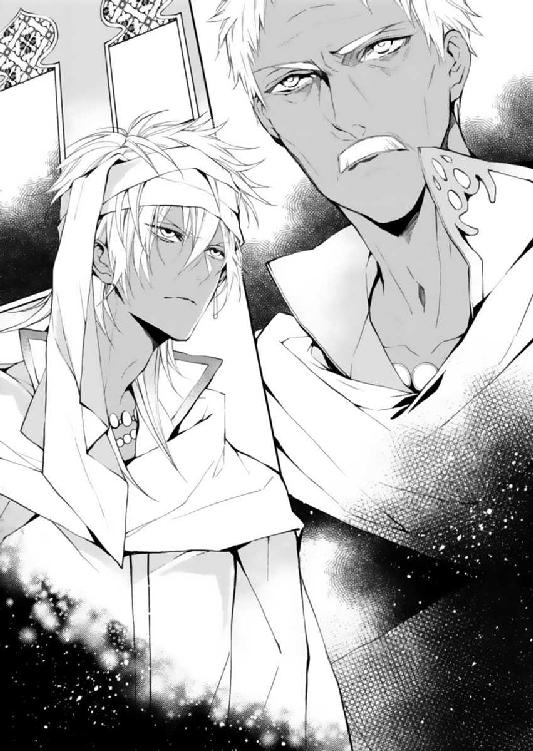
「お前を呼び出したのは、ほかでもない。ラティーヤのことだ」
王がそう切り出したので、サディーンは納得した。
（ああ、ラティーヤの居場所を知りたいのか。アフガットと一緒にあいつを追っていたからな）
尋ね人のために、多忙な時間をわざわざ割くとは。
シェヘラに望遠鏡を覗かせる気はないのか、国王は、かたわらに立つシェヘラの方には目もくれなかった。
国王は魔法の存在を知っているはずだが、けしてそれに手を出そうとはしない。──必要のないものだと、かつて彼は言ったのである。
「第二王子の居場所は存じません。私よりも、アフガット王子の方がよく──」
「そんなことはいい」
王はサディーンの言葉をさえぎり、立ち上がった。
「ラティーヤの王籍は剝奪した。もうこの国の王子ではない。それにともない、お前の立場も変わる」
「は......？」
何で、俺とラティーヤが関係あるんだよ。
サディーンが疑問を口に出す前に、国王は言い放った。
「お前に王籍と継承権を戻す。順位はアフガットと同列の第一位。私が死ねば、お前とアフガットのどちらかが『アラハバートの全知』だ」
「意味が分かりません」
何を言っているのだ、この男は。
十年前にサディーンは、目の前の男に城を追われたのだ。
（それが今頃になって、王籍を戻すだと？）
腹の奥から、煮えたぎるような怒りが湧き上がってきた。
「お断りだ。俺は王族に関わるつもりはない」
「お前に拒否権はない」
「いまさらになって、何を言ってやがる！ 母さんは城にいたら死ななかったかもしれないのに！ 何もかも遅い、俺は王族には失望しているんだ！ あんたらの一員になれって!? 冗談じゃない！」
サディーンが声を荒らげても、国王は眉ひとつ動かさなかった。そのことが、さらにサディーンの神経を逆撫でる。
「何もかもアフガットにくれてやる。俺はギルドでやるべきことがある」
「お前がギルドへ戻れば、仲間の商人たちはひとり残らず牢へ繫ぐこととなる。そこにいる、魔法使いも含めて」
「......何だって？」
彼がけげんな顔をすると、国王は顎を反らした。続き部屋に控えていたらしき側近がサディーンのもとへとやってきて、厚い巻物を渡した。古めかしい装飾文字で書かれていたが、古代絵文字ではない。立派な現アラハバート語である。
それは、法律書であった。
「誘拐の罪......？」
「お前はすでに、王位継承権を手にしている。王族は国王の許可なく行動することは許されない。出奔に加担した者は、王族を騙し、誘惑し手の内におく意思があったものとみなす。お前がギルドに戻れば、お前が王族でありながらその事実を無視し、国中を連れ回すギルドの商人たち全員が、罪人だ」
「お、お待ちください」
シェヘラはかたわらで小さく震えていたが、しぼり出すようにそう言った。
「それは......サディーンの意思がどうあっても、彼がギルドに戻ることを......許さないということでしょうか」
「そうだ。世話係として気心が知れた者が欲しいなら、ひとりくらいは認める。だが、魔法使いは王国に関わるべきではない。魔人の娘が親しんできたものは、国を背負う身分の者にはもっとも不必要なものだ。言っている意味は分かるな」
国王は、シェヘラを拒絶する言葉を口にした。
シェヘラは蒼白な表情で、それを受け止める。
サディーンはかっと頭に血がのぼり、わめき散らした。
「あんた、シェヘラに助けられたくせによくそんなことが言えるな」
「装束は用意してある。お前に反抗の意思を見て取った場合、商人たちが滞在するのは離宮ではなく地下牢だ。長ならば、賢明な判断をしろ」
「待て、行くな！ 俺は継承権なんていらない！」
王はサディーンの言葉を無視し、謁見の間を去ろうとしている。
「お前個人の問題ではない。アラハバートの未来がかかっている。アフガットがふさわしくないと判断されれば、お前が私の後を継ぐ。逆もまた然りだ。実感が湧かずとも、これからお前にふさわしい教育を施す」
「いらないっつってんだろ、人の話聞けよ！」
「式典が始まる。すぐに支度を始めろ。お前が拒めば、商人たちがどうなるか理解できているな」
王はふたりに背を向ける。
サディーンは唇を嚙みしめた。血液の、錆びた味がした。
シェヘラはしばらく呆然と、去ってゆく国王の背中を見送っていた。
こんなことになるなんて、先ほどまで予想もしていなかった。
（サディーンが......国王になるかもしれない......？ 既に王位継承権は彼に戻っている。それなら、あたしは──）
シェヘラが親しんできたものは、国を背負う者には不必要である。国王は彼女にはっきりとそう告げた。
親しんできたものとは、魔法のことに他ならない。国王は、魔法使いは国に関わるべきでないと伝えるために、彼女をここに呼んだのであった。
つまりは──サディーンから、離れるようにと。
恋人同士の誓いを交わしたばかりのふたりには、酷すぎる宣告であった。
（けれど......もしこれが、アラハバートにとって、サディーンにとって正しい選択であったとしたら？）
もともとサディーンは王族である。本来彼が身を置く場所は、ギルドではなくこの王宮だ。
「お支度をしましょう。別室へご案内いたします」
いつの間にか数名の女官が彼を取り囲んでいた。シェヘラとサディーンの間に壁を作るように、彼女たちは割り込んでくる。
「サディーン」
シェヘラが彼の名を呼ぶと、女官たちは彼女をじろりとにらんだ。一瞬ひるんだものの、シェヘラは続ける。
「王族の衣装を着る......んだよね？」
国王は、彼がギルドに戻れば仲間を投獄すると言った。サディーンは王族として式典に参加する以外のすべがない。彼はけして家族を見捨てないはずである。
サディーンはうなずいたが、早口で言った。
「今だけだ。国王ともう一度話す機会を設けたら、すぐに王位継承権を返上したいと伝える。どちらかが国王になるとは言ったが、俺は王座に座る気がない。胸くそ悪い衣装を着たくはないが、仲間が牢に繫がれるほうが、我慢がならないからな」
サディーンがもう一度説得して、どうにかなる問題なのだろうか。
国王の意思は堅いように見えた。そう簡単には、覆らない。
シェヘラの思考とはうらはらに、サディーンは力強く言った。
「だからお前も......国王の言ったことは、気にするな。魔法はお前の誇りで、俺はその誇りに甘えるような人間にはならない。そして必ず、一緒にバクラーシへ行く。約束だ」
「......うん」
なんだか奇跡のような約束に思えた。
けれどシェヘラは、そんな奇跡にすがりたくて、サディーンに力のないほほえみを返したのであった。

火であぶったジャクラマールの甘い香りが、薄暗い地下室に広がっている。
香炉から立ち昇る緑色の煙が、横たわる青年のすぐそばですっと消えた。
クルファは、炉に蓋をして、本日の施術を終えた。
寝台に腰掛け、そっとラティーヤの前髪を搔き上げる。うっすらと汗をかいていた。指先で水滴をなぞって、手のひらを押し当てる。
彼女の低い体温が心地よいのか、ラティーヤの表情から硬さが消える。
さて、どうしたものか。
クルファは目をすがめて、寝息を立てる王子を見下ろしていた。
地下に身を隠し、はやひと月半。
当初の計画は狂わされたが、手札はまだ残っている。
王宮に潜入していたときに作った駒は、定期的にクルファに情報をもたらしていた。
アフガット・シャフリヤールの両王子が継承権を手にし、そしてラティーヤは王籍すら失った。
国王は、ラティーヤ王子を最後まで顧みなかった。
公平に物事を進めているように見えて、実のところ国王はかなりのシャフリヤールびいきである。
きっとこの事実は、ラティーヤを苦しめるに十分であろう。
シャフリヤールの名前の本当の意味を、おそらくラティーヤは知らない。知ったらさらに手がつけられなくなることは分かりきっているので、クルファも教えるつもりはないが。
（この王子は、自分自身の最大の弱みから目を背けている。父王が倒れたときに誰より先に兄弟を始末しようとしたのは、自分が一番父親に見放されていると、本能的に気がついていたからに他ならないというのに。父親のことなど、どうでもいいかのようにふるまう）
まるで自身の傷を気取られまいとするかのように。
ラティーヤは子どものときのまま、成長していない。
彼の時は庭園を焼いたあの日から止まっている。
自分が何のために王位を欲しているのかさえ、忘れてしまっているのだから。
（でも、私には関係ない。必ず復讐を果たす。そのためにこの王子を利用するのよ）
誰よりも、彼を見てきた。つまらない『砂モグラ』として。
けれど今は違う......。
ラティーヤのまぶたが動く。
クルファは彼の髪を撫で、そして目を覚ました彼のために笑みを浮かべた。
「ラティーヤさま。そろそろ遊びを始めませんか」
「あそび......？」
かすれた声で、ラティーヤはつぶやいた。
「そうです。王冠を奪う遊戯ですよ。ご兄弟を、あっと言わせてさしあげましょう」
クルファが彼の額に唇を押し当てると、ラティーヤは幸せそうにほほえんだ。

式典の広間は城内で最も華やかな場所である。
巨大な円形の吊り細工にいくつもの硝子製のランプが取り付けられ、橙色の灯をともしている。天井の幾何学模様は、蛍国から取り寄せた翡翠やベルシア産の瑪瑙・碧玉で彩られていた。各国の大使をもてなす場所でもあるので、親交国の特産品を見えるところに取り入れた細工らしい。
緑や青の彩度の高い色硝子と金箔を使ったモザイク装飾の窓枠は幻想的な雰囲気を演出している。
そのような華やかな場所に不釣り合いなほど、ギルドの商人たちは暗く沈んだ顔をしていた。
サディーンが宮廷装束を身にまとい、国王が彼の復権について伝えると、めでたい席であるはずの式典の広間はしんと静まり返り、賞金は当然のごとくカイルに手渡されたのであった。
サディーン不在のまま大量のごちそうが並ぶ続き間に通され、商人たちはぼんやりと食卓を眺めるばかりである。
（サディーンと国王さまは、ここには来ないのね......）
難しい顔をしていると、ニーダがシェヘラの前に山盛りの料理──羊肉と林檎を煮込んだものや、港に揚がったばかりの新鮮な魚介が載った皿をずいと突き出した。
「食べなさいよ。気持ちは分かるけど、食いっぱぐれは損よ」
「うん......そうだよね」
おとなしく皿を受け取って、シェヘラは瞳を伏せた。
このままではサディーンはバクラーシへも行けないし、商品をかついでアラハバート中を巡ることだって、できなくなるかもしれないんだ......。
彼の言葉を信じたいけれど......。
国王のかたわらに立った彼が、純白の装束に身を包んでいるさまは、とても自然であったのだ。
ニーダはシェヘラの横に腰を下ろして、ふるまわれた酒をかたむけた。
「サディーンが王さまになるの、私はありだと思うんだよね」
「え......？」
「そりゃ、寂しくなるわよ。もう一緒に旅はできないんだろうし。けど、彼はもともと王子さまだったんでしょ。元いた場所に戻って、王さまになるのもありなんじゃないかって。私たち庶民のこと、よく分かってくれるいい王さまになるんじゃないかな。まぁ名前の問題はあるけど、そんなの国政がうまくいっちゃえば些細なことでしょ」
「シャフリヤール」という名前の王子が次期国王になってはいけないという決まり事はない。
どうしても悪い印象を払拭したければ、即位と共に名前を変えることだってできるかもしれない──。シャフリヤールではなく、サディーンに。
サディーンはギルドをとても大切にしているけれど、王宮に残る選択が彼を、アラハバートを良き未来へ導くのなら、シェヘラたちはおとなしく彼をあきらめるしかないのであった。
（もしそうなったら......あたしはどうすればいい？）
このままでは、サディーンと離ればなれになる。
彼のことを好きだと、自覚したばかりであったのに......。
シェヘラの食が再び進まなくなってしまったので、ニーダはあわてて言い足した。
「違うのよ。シェヘラとサディーンが別れたほうがいいなんて思ってないわ。むしろうまくいけばシェヘラは次の王妃さまかもしれないし、その方がなんかこうのし上がった感じすごいっていうかそれなら私のこと女官として雇ってくれたら高級官僚捉まえて私もおいしいっていうか──」
「あたしが王妃なんて、あるわけないよ。もしサディーンが国王になってしまったら、それこそ顔を見ることもかなわない人になる。......ううん、もうすでにそういう人になっているんだよね。王籍が戻っているのだから」
シェヘラは国の中心に関わるべきではない。ただでさえ、魔法を巡って王子たちの争いに巻き込まれているのだ。国王が彼女を遠ざけようとしたのも、地上から失われたはずの力が国主に悪影響を及ぼすことを憂慮したに違いなかった。
「シェヘラ......」
サディーンとシェヘラの間に、大きな隔たりができた。
昨日まで、一緒にごはんを食べたり笑い合ったりしていたというのに。
先ほどまで、すぐ近くで話をしていたのに。
会いたい。
彼と向き合って、言葉を交わしたい。シェヘラのたどたどしい言葉を辛抱強く待ってくれる彼の、優しい金色の瞳を見つめていたかった。
むしょうに彼の顔が恋しくて、シェヘラはたまらない気持ちになっていた。

「すっごいふきげんだったなあ、お前のとこの王子さま」
アリーはやれやれといった具合に肩を回して、口を閉ざしてうつむくドライドに目をやった。
「継承権欲しがって争う王子なら見てきたけど、継承権捨てたくてしょうがない王子は初めてお目にかかったぜ」
「王さまは、卑怯だ......。自分たちの命を、質に取るなんて......。彼は、ギルドを選べないに決まっている」
ドライドはギルドの仲間たちが参加しているはずの式典や宴会にも姿を見せずに、城の隠し部屋──ドゥルタヤたちの会議室で、黙々と暗号記録を作成していた。
アリーいわく、砂糖と蜂蜜とべったべたな果汁をいっしょくたにしたような、甘ったるい恋物語に織り交ぜて──。
「おいっ、俺がいよいよ買いづらくなるからそんな場面入れるなよ！」
アリーに頭を小突かれるが、先ほどからドライドは彼の注文に対し無視を決め込んでいる。
「やる気のない王子に継承権を与えてどうするんだかねぇ。最初からアフガット王子ひとりにしておけば、こんなことにならずに済んだのに」
「シャフリヤール王子はもともとやる気がなかったわけではない。城にいた頃は勉強熱心だった。国王との別れ方が、良くなかっただけだ」
「にしたって、カワイソーですよね。強引に追い出されたと思えば一方的に戻されて......。これから半年間で失われた十年ぶんの帝王族教育、詰め込まれるんでしょ」
白の王宮に部屋を与えられたのはもちろん、ただ第三王子に居候をさせるためではない。
民間人として育った彼が王子としての品格や教養を取り戻すべく、王族を長らく観察してきたアリーたちでもぎょっとするような、厳しい内容の学習期間が待ち受けているのであった。
「そりゃ、怒りますよ。俺だってキレるね。ぜーんぶ王族の都合で予定してたギルドのことだってパア......」
「ひとりの感情より、国の未来の方が大事だと思わないか。シャフリヤール王子ひとりが我慢すれば、アラハバートが良き国王を得られるとしたら？」
アリーは「はっ」と息を吐いた。
「そんな保証はどこにもない。シャフリヤール王子が良い王さまになるっていう確固たる何かがあれば、納得できたかもしれないが」
現在、アフガット王子とシャフリヤール王子の立場は同列。それは「どちらが王になっても構わない」という意味ではなく、「どちらがふさわしいかを判断しかねている」ということである。
王の余命は、残り半年。それまでに次の冠を戴く者を決めなければ、再び王位を巡っての争いが勃発する。
「シャフリヤール王子が国王になったら、ベルシア王女を妻に持つのは彼だろ。どうするんだろうね、魔法使いは。まぁシャフリヤール王子が側室としてハーレムに置いてはくれると思うけど」
黙々と手を動かしていたドライドが、口を開いた。
「シェヘラはきっと......ハーレムには、入らない......」
アリーが片眉を上げる。
「何でだよ。ハーレムで寵姫になればギルドで砂まみれになって働く必要もないし、治安の悪い場所で店を開くたびに魔法の道具を奪われないかビクビクする必要もない。この国の女たちは、進んであの場所へ行きたがる者もいるぜ」
「シェヘラは......そういう人種ではない。ただ王の愛だけを気にかけるような生き方は、できないはずだ......」
「じゃあ何だ。シャフリヤールが国王になったら、あの二人はお別れかい」
ドライドは再び口をつぐみ、作業に戻った。彼は答えたくない内容の会話はしない主義である。
「どちらにせよ、魔法使いの動向にも十分な注意を払うべきだ。あの娘はクルファが手駒にしたがっている。国王は魔法使いを第三王子から引き離すように仕向けているので、王宮に残ることはないだろう。実家の神殿に帰るか、それともギルドに籍を置くか──我々はそれぞれ役割分担をする必要がある」
夜が明ければ、彼女は護衛ひとつつかない身で無防備に旅をすることとなる、
彼女をクルファに獲られてしまえば、アリーたちにとってもやりづらくなることは間違いなかった。
「初恋は実らないっていうけど、本当なんだなあ」
アリーはすっかり夜のとばりが落ちた窓の外を眺めながら、そうつぶやいた。
宴が終わると、カイルは予定どおり、明日からバクラーシへ向かうと仲間に告げた。
彼自身もサディーンを失うことに衝撃を受けていたようだが、今はとにかく、ギルドの生活を守らなければならない立場となったのだ。
サディーンを強引にでも連れて城を出て行きたい気持ちを、カイルは抑え込んでいた。それは、普段は冷静な彼が落ち着かなく離宮の廊下を行ったり来たりしている様子や、何度も部屋を覗いては溜め息をつく姿を見ていれば、何も言わずとも、おのずと分かることであった。
サディーンと共にギルドを支えてきた彼は、いつまでも落ち込んではいられなかった。みなの生活は、今はカイルひとりの背中にかかっている。自分の気持ちはひとまず置いておいて、ギルドの未来のために動き出したのだ。
反面、いつまでもぐずぐずとしていたのは、シェヘラザードである。
国王の言うとおり、魔法を王族たちから切り離さなければならないと思う気持ちと、サディーンのもとを離れたくない気持ちが彼女の中でせめぎ合っていた。
継承権のことが本当ならば、ちっぽけな少女であるシェヘラにはどうすることもできない。
ただ、もう一度だけでいい。彼に会いたかった。
夜はふけてしまう。朝になれば、もうここにはいられない。
（サディーンのそばで過ごせる、最後の夜かもしれないのに......）
シェヘラはひとり水晶の庭園の、ひときわ大きな水晶の前に座り込んでいた。考えがまとまらずに、寝台に入っても目がさえてしまったのだ。昼間サディーンと歩いた庭は、月光を受け透明に輝いている。
（あたしは、サディーンやみんなと一緒にいたくて、父さんを助けたあとも神殿に戻らないと決めた。けれど、ギルドでひとり立ちをしたいとも思っている。サディーンがこれから王宮で生きてゆくのなら、あたしはここに残ることはできない。あたしは彼の奥さんでも、身の周りの世話ができる人でもないから......そして何よりも、魔法使いだから）
つまり、シェヘラはここでサディーンとお別れをしなくてはならない。
彼が国王にならなければ、もう一度共に旅をすることはできるのだろうか？ それとも、彼が国王になるのが、この国のためになる......？
ふと、月明かりに伸びる影が、シェヘラの思考を中断させた。
彼女は振り返り、あっと言葉を漏らす。
「国王さま......！」
そのまま面を伏せようとした彼女に、王はやんわりと「顔を上げなさい」とつぶやいた。
少し離れた場所に、武官が待機している。すぐそばに彼らを置かないところをみるに、国王はシェヘラに、ごく個人的な話をするためにやってきたようだった。
「あなたには、直接礼をしなければならないと思っていた。命の恩人だからね」
シェヘラは国王に林檎を使ったのち、彼と言葉を交わすことなくその場を去っている。
王の生還を待ち望んでいた、アフガットを含め多くの人物が、目を開けた国王の寝台に駆け寄った隙に彼女はギルドに戻ったのであった。
「そして、息子たちの非礼も詫びたい」
「い、いいえ......。無事に、父のランプも取り戻せましたし。あたしも、ギルドで今はいろいろと勉強させてもらっています」
「もうひとつ、あなたに謝罪しなければならないことが増える。あなたから、『サディーン』を奪うことになる」
シェヘラの心臓が、どくんと脈打った。
「朝になったら、仲間と共にここを離れなさい」
王は、シェヘラを見つめていた。意外なほどに優しげな瞳で、シェヘラはうろたえた。
この方は、厳しく、隙のない人であると思っていたのだ。
「サディーンは、あなたに求婚したそうだね」
サディーンから、その話を聞いたのだろうか？
疑問はあったものの、シェヘラはうなずいた。
「返事は？」
「まだです。せめてギルドの仕事に慣れてから、と思っていてそのまま......今は、恋人同士です」
「シャフリヤールが王位を継いだあかつきには、彼にベルシアの王女と婚姻を結んでもらうこととなる」
ベルシア王女と、サディーンが？
シェヘラは口を開きかけたが、何も言わずに目を伏せた。
国王が身分のある妻を正妻とするのは、当然のことである。
「魔法使いは、王国に関わるべきではない。私はそう考えている」
「......あたしも、そう思います」
魔法の力は、争いの火種になりかねない。それを、アラハバートの中心に持ち込むべきではない。
王とシェヘラの考えは、この点において一致していた。
「けれどあなたがサディーンと共に生きることを選べば、いやでも魔法と王国は切り離せないものとなる。この国は、既に魔人の加護を失っている。そしてあるべき姿に戻ったのだ。──魔人の娘にとっては、生きにくい世の中となった」
王は言葉を切って、しばし水晶を眺めた。
「この庭は気に入ったか？」
話題が変わったことに戸惑いながらも、シェヘラはうなずいた。
「なぜ水晶の中に魔人を閉じ込めたと思う？」
「え......？」
「この庭を造った技師──もうずいぶんと昔にこの世を去ったが、彼は魔人彫刻の第一人者であった。先々代の王の命でこの庭を作ったが、そのとき技師はこう言ったとされている。『魔人は人の憧れであり、同時に人と相容れぬ世界の生き物──同じ空間に存在せぬものだ』と」
どんなに手を伸ばしたとしても、水晶の中の魔人に触れることはできない。
おそらくシェヘラをこの庭に案内したサディーンは、そのようないわれを知らなかったのだろう。
呆然と水晶に触れるシェヘラを、王は少しだけ切なそうに見つめた。
「私の息子の手が届かない場所で暮らしなさい。何か入り用のものがあれば、手配してやってもいい。神殿に戻るなら、ふさわしい護衛をつける。ギルドで生きるのも構わない。魔法の力がもたらすものに怯えながらこの宮殿で暮らすには、あなたはまだ若く成長過程だ。いずれ、息が詰まるときがくる。恋は忘れられるが、苦しみはいつまでも残る」
「国王さま......」
まるで、何もかもを見てきたかのような口ぶりであった。
シェヘラは、意を決してたずねた。
「国王さまは、恋を忘れられたのですか？」
「......それは」
げほっ、と喉の奥から割れるような音を出して、国王は背をかがめた。
彼の唇はみるみると色を失ってゆき、表情は苦しげに歪んでいる。
「国王さま!?」
胸を押さえ、ひざをついた国王に、シェヘラは慌てて取りすがる。
とても会話ができるような状態ではない。
（何で......!? だってあたしは、林檎でご病気を治したはずなのに！）
控えていた護衛が駆け寄った。早口で侍医の手配を指示し、倒れた国王を支える。
「部屋に戻っていてください。国王さまのことは、他言無用に」
林檎は部屋に置いてきている。シェヘラは弱々しくうなずいた。
アフガットがシェヘラを呼びに離宮へやってきたときには、既に夜明けが迫っていた。
扉を叩くなり真剣な顔つきの彼に腕を摑まれ、「林檎を持ってこい」と告げられると、シェヘラは王の容態がかんばしくないことを悟った。
彼と顔を合わせるのは収穫祭以来であるが、悠長に挨拶をする暇は与えられなかった。
「以前治したものと、別の病気なのでしょうか」
「今回は心臓の病だそうだ。どちらにせよ、難しい病気であることには間違いない」
アフガットは離宮から本棟に繫がる廊下を慣れた足取りで進む。シェヘラは早足のアフガットについてゆくのに必死であった。
（今回も......魔法を使う？）
クルファに浴びせられた『傲慢』という言葉が、胸をよぎる。そして国王が口にしていた、『魔法使いは王国に関わるべきではない』という言葉も。
国王は、自身の病に気づいていたのだろうか？ 知っていたうえでそう口にしたなら、シェヘラの林檎を求めていないのではないか？
シェヘラが林檎によって引き延ばす命は、未来にどういった結果をもたらすのだろうか？
さまざまな考えにふけっている間に、シェヘラは王の私室にたどり着いていた。
魔人たちが酒宴を催す様子を彫った、天井に届くほどの巨大な扉。
この扉をくぐるのは初めてではない。なぜだかいつも、アフガット王子と共にこの場所を訪れている。
「父上。アフガットが入ります」
彼が告げると、開閉係が扉を開いた。
シェヘラはアフガットにうながされるまま、おそるおそる部屋に足を踏み入れた。
天蓋から下りる紗幕の向こうに、横たわる人影が見える。アフガットが顎を逸らすと、心得たように世話係と医師たちはその場を辞した。
ねじれた形の透明な花瓶や、青い染めのタペストリー等の調度品のそばを通り抜け、彼が紗幕を搔き分けると、王は横たわった姿勢のまま、じろりと金色の目を向けた。
「......このような時間に、何の用だ」
顔色が優れないが、王の声は落ち着いていた。少ししゃがれてはいたものの、威厳はそのまま保っている。
シェヘラは少しだけ、ほっと息を吐いた。
「魔法使いを連れてまいりました。林檎の恩恵を受けていただきたくて」
「誰がそのようなことを頼んだ」
拒絶するような物言いにアフガットは一瞬たじろいた様子であったが、そのまま続けた。
「......私の判断です。医師の話では、以前から病の兆候が見られていたようですね。なぜ今まで、内密にされていたのです」
「お前がふぬけ顔で魔法使いを連れてくると、分かりきっていたからだ」
シェヘラはおどおどと、親子の会話を見守っていた。彼女が口を差し挟む隙はまるでなかった。
「......そこの娘とは、話の途中であった。アフガット、お前は下がれ。今夜は眠り、私の仕事を引き継ぐための準備をしておけ。シャフリヤールはしばらく勉学の方で手一杯、一時的にお前に国事を託す。ただし、愚かな真似をすればすぐに私の耳に入ることを忘れるな」
アフガットはしばしためらっていたが、王が彼に視線ひとつ合わせようとはしなかったので、あきらめて出ていった。
「悪いが、少しだけ身支度を整えさせてくれ。寝室に長居させては、あなたに不名誉な噂が立つ」
「あ、あたしのことなんて構いません。どうかそのまま寝台に......」
「今から寝たきりでは困るのだよ。あと半年は、生きていなくては」
夜着の上からぞんざいに上着を羽織って、王は体を起こした。
シェヘラの手の中の林檎を見ると、国王は眉を寄せて、困ったような顔をした。
「それは、使わないでほしい」
「でも......難しいご病気だと......」
「本来なら、私は先の病で死ぬべきだった人間だ」
そんな、とシェヘラは声を漏らした。
国王は、金色の瞳を細める。そうすると目元はサディーンによく似ており、シェヘラは思わずどきりとした。
「ついてきなさい」
少し遅れて、数人の護衛が国王の後に続く。彼女は国王の言うがまま、白の宮殿の最上階、露台までたどり着いた。
バスコーの熱風が、ふたりの髪をすくって、海へと流れてゆく。
「恋を忘れたのか、とあなたは聞いたな」
ふいに国王が口を開いたので、シェヘラは彼が倒れる前に交わしたやりとりを思い出した。
サディーンと離ればなれになって、ここから出てゆくようにと。恋は忘れられるが、苦しみはそうではないと。
あのときの続きから、国王は話し始めたのだ。
「......はい」
「芽生えたばかりの恋なら、簡単に忘れられる。あなたくらいの年齢なら、一年も経たぬうちに次の恋を見つけられるだろう」
だが、と国王は言葉を切った。
「それが愛になってしまえば、もう手遅れなのだ」
「......国王さまは」
シェヘラは、たどたどしく言葉を切った。それを急かさずに待つ様子までサディーンとそっくりで、シェヘラはふいに涙が出そうになった。
「愛していたから、忘れられなかったんですね。サディーンと、彼のお母様のことを」
「......今なら、まだ間に合う。あなたはサディーンと約束を交わしていないし、出会ってからまだほんの数カ月だ。もっとあたたかく、家庭向きの男と一緒になって、平穏に暮らしなさい。あなたの大事にする魔法を、謀略の渦中にひきずり込むようなことはやめなさい。あなたの父親も、それを望むはずだ」
まるで本当の娘に言い聞かせるように、彼は言った。
バスコーを照らす星の下で、シェヘラはゆっくりと国王の言葉を咀嚼した。
国王は、見ず知らずのシェヘラのことを思いやっている。そうして、サディーンから離れることが、シェヘラにとって一番良い未来になると確信している。
「私はたとえ今すぐここで死ぬこととなっても、魔法の力を望まない。そして、あなたも知っておいた方がいい。......あなたの魔法は、けして万能ではないということを」
「あたしの、魔法が......？」
魔法は、けして万能ではない。
（そう......なぜ治したはずの病気が、違う形で表れはじめたの？）
それがもし、魔法が関わったことによるものだとしたら。
（もっと......あたしの知らない何かが、あるというの。この力に）
気づかなければならないものがある。何か大事なものを、あたしは摑みかけている。
シェヘラの中で、一本の細い足場が崩れる音がした。
体中の魔力が逆流し、沸騰したように熱くなる。
「......え？」
シェヘラは一瞬惚けたような表情を浮かべたが、ほどなくしてそれは苦痛に歪んだ。
「な......に......」
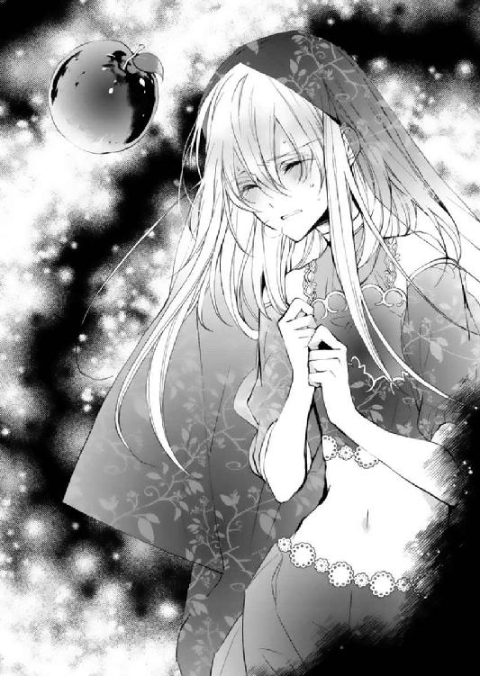
胸を押さえ、彼女はその場にうずくまった。
苦しい。息ができない。肺が、押し潰されそう。
この感覚には覚えがある。
以前、海に飛び込んでサディーンを助け出そうとしたときに、彼女の体を襲ったものだ。
だが今は、陸の上だ。国王は彼女に何もしていない。
景色がかすんでゆく。国王がシェヘラに手を伸ばす。彼の手を取ることもできないまま、シェヘラは意識を手放した。
シェヘラザードはイスプールの神殿にいた。
夢の中でここにやってくるのは、もう三度目のことである。
この夢は、決まって彼女が魔法に関する何かに直面したときにみるものだ。
ここまでくれば、シェヘラは夢の正体に気づかざるをえなかった。
「......父さん。いるんでしょう。出てきて」
シェヘラは、人影ひとつない『神の間』の真ん中で、父に呼びかけた。
緑色の煙が、足首を通り過ぎてゆく。
続けざまに、ぼんっ、と小気味好い音。
もくもくと立ち昇る煙の中で、筋骨隆々の巨大な魔人が、シェヘラを見下ろしていた。
（あたしは、神殿を出てからもずっと、父さんに見守られていたんだ......）
魔人はシェヘラの周りをぐるりと一周して、緑の煙をふりまいた。
「シェヘラザード、成長したね。これが私の見せている夢だと、お前も分かったのだな」
「そうよ、父さん。......魔法について、聞きたいことがあるのよ。あたしはさっき、海の中にいるみたいに苦しんでいたの。なぜ？ 海中で、林檎の雫を飲んだから？」
「お前がそう思うなら、それが答えだよ。シェヘラ」
すっと、全身から血が引いてゆくようだった。
「国王さまを癒してさしあげたはずなのに、また病になられていた。林檎の力を使って命を繫いだとしても、それは一時的なものにすぎないのね？」
「この世の理を曲げることは、必ずどこかの誰かの運命をねじ曲げることになる。お前が今悩んでいるのは、そういうことだよ。シェヘラザード。運命を曲げても、結果は変わらない」
あたしは、神殿を出てから、何回林檎を使った？
自分自身や国王さまだけじゃない。ニーダやアフガットさま、サディーンにも林檎の雫を飲ませている。
「お前は自分の力に対して、答えを出すべきときに近づいているようだ。母さんには話しておくから、神殿に来なさい。夢では長く、会えないからね。絨毯を使ってくるといい」
「魔法を使っても平気なの？」
「魔法を使うことを恐れる必要はない。人にとって本当に恐ろしいのは、もっと別のことだ」
靄がかかったように、父の姿が消えてゆく。どうやら再会は、ここで終わるらしい。
「行くわ。必ず......もし、あたしが生きていたら」
「お前の死は当分先だよ。父さんには、それが分かる」
はっと目覚めたときには、シェヘラは天蓋つきの寝台に横たわっていた。
汗が、頰を伝ってまぶたの上まで落ちてゆく。
心配そうな顔で、カイルがこちらを覗き込んでいた。
シェヘラは飛び起きるなり、彼にすがりついた。
「ニーダは!? サディーンは!?」
「落ち着きなさい。ニーダは隣です」
シェヘラが顔を向けると、隣の寝台に横たわるニーダが、数人の医師に囲まれている様子が見えた。
「あなたも、ニーダも、突然倒れたのですよ。王の配慮で一晩であった離宮の滞在期間が延ばされることになりました。サディーンや、アフガット王子も原因不明の異変で現在治療中です」
「あたしの、せいだ......」
シェヘラはげほげほと咳き込んだ。喉の奥で塩が絡んでいるような、妙な味がする。
（本当に、海の中に潜っていたようだわ）
これがただの体の異常でないことは、確かなことである。
カイルは水差しをかたむけて、シェヘラに檸檬水を差し出した。
「まる一日眠っていたのですよ。無理はしないで」
「そんなにも......」
それでも、彼女は目覚めてここにいる。
シェヘラは、林檎を使用したときに命を落とす運命ではなかったようだ。
「ニーダの方は、まだ目覚めません。熱病ではないようですが......。あなたがた、宴で同じものを食べましたか？ 一緒に倒れるなんて、どう考えても普通では......シェヘラザード!?」
シェヘラは寝台から起き上がり、魔法の道具を腕に抱えた。いつの間にか着替えさせられていたのか、真っ白な寝間着が彼女の身を包んでいる。
「神殿へ帰るわ」
「何を言っているんです、もう少し休んで......」
「父さんが呼んでいる。あたしは行かなくてはならないのよ」
ニーダの病は、熱病ではない。国王も、以前とは違う病気を発症している。
このふたりの運命は、大きくねじ曲がっている。
それがいい方へか、悪い方へかは、予想がつかないけれど。
父さんは何もかも知っていたのかもしれない。そのうえであたしに、魔法の道具を持たせた。
あたし自身に、気づかせるために。
「ニーダに林檎は使えないの。これ以上、彼女の運命を曲げられない。あたしは今すぐ魔法の本当の意味を知らなくてはならない」
シェヘラは絨毯を広げ、足をつけた。突然のことに、絨毯はおたおたと体を震わせている。
「せめて何か口にして、落ち着いてからにしなさい。イスプールまで、そんな状態で飛ぶ気ですか」
「時間が惜しいのよ。助かったはずの命がここで散るかもしれない。何をすれば正しいのか分からない。失われたものは魔人の力でも、元に戻せない。あたしはもう迂闊に命の魔法を使えない。ひとりじゃ何も選べないのよ!!」
最後の方は、すでに叫び声に近かった。
カイルは口をつぐんで、シェヘラが声をからし、肩で息をするさまを見つめていた。
「......サディーンは先に目覚めて、あなたを心配していました。せめて発つ前に、彼に無事を知らせるくらいいいでしょう」
カイルはシェヘラを抱き上げると、そのまま寝台に放り投げるようにして、ぞんざいに手を離した。
そして、絨毯を拾い上げ、背を向ける。
「......絨毯を返して！」
「あとで、サディーンが持ってきます。これを残したら、そんな体で今すぐ飛びかねない」
「絨毯！ おいで！」
絨毯は迷ったように震えていたが、そのままカイルに体を預けた。
「周りをよく見なさい、とあなたにいつも言い聞かせていますが、今回ばかりはさらに声を大きくしたいところですね。絨毯の方が、あなたよりよほど冷静だ。頭を冷やしなさい」
シェヘラは扉が静かに閉まるさまを、唇を嚙んで見つめていた。
ここはアラハバートの地下深く、アフラ砂漠の北西部。
北へ逃亡するために掘られたドゥルタヤの通路の、出口付近である。
バスコーがまだ首都になったばかりの頃、北の信仰は今よりもよほど根強く残っていた。地下通路には当時の名残のように、いくつもの古代絵文字が彫られている。
クルファは冷たい視線を、地下へ呼び寄せた戦士たちに浴びせた。
本来は一族以外の者たちをここへ連れてくるべきではない。だが、もうラティーヤという例外がいる。
アリーたちはここへは来ない。王子たちは今首都の王城でのんきに式典の真っ最中だからだ。
ほかのドゥルタヤも、ここへは来ない。なぜなら彼らは、けしてクルファにかなわないからである。
彼女よりもよほど劣った──ただの、家畜と共に砂漠を旅する民に成り果てた。この迷路状の通路を抜けきるだけの才覚を持ち合わせていない。
クルファの罠を簡単に搔いくぐる才能の持ち主は、アリーたちほかの判定者を除けばもう一族には存在しない。ドゥルタヤに流れる魔人の血が分からないほど薄くなってしまったために、年々判定者の人数は減少の一途をたどっていた。
ドゥルタヤは近親婚を繰り返し、どうにか王族との盟約を維持するだけの人材を育てようとしているが、それもいつしか絶えてしまうだろう。
それでは困るのだ──。
母は、ドゥルタヤであるがために死んだのだから。
クルファは、古びた椅子にラティーヤを座らせると、戦士の群れを高みから見下ろした。
「みなさま、よくお集まりいただきました」
クルファが言葉を発すると、ざわざわと耳障りな話し声が、ぴたりとやんだ。
「辺境の土地に住まうみなさまには、今の港中心のアラハバートの政治に思うところがおありでしょう。王族たちはアフラ砂漠の向こう側──山脈や国境付近で暮らす民のことなど、気にもかけていないのですから」
収穫祭で舞姫をさらった際に、わざわざ『シャフリヤール』の名を騙ったことには、ふたつの意味がある。
ひとつは、国王の愛する第三王子を追い落とすため。
もうひとつは、アラハバートでくすぶりつつある小さな争いの火種を、集約するためである。
「現在、王政は代替わりとともに揺れています。今こそ私たちの訴えを、愚かな王族に分からせてやるべきなのです」
現国王の治世は、良きものであるとは言われているが、当然完璧ではない。
大国ベルシアとの外交に重きを置いたやり方は、首都バスコーを豊かにした反面、そのほかの土地に恩恵を届きにくくさせた。
国境付近ではベルシアの警備兵が我が者顔でのさばり始め、船舶での行き来が主となった物資の流通により、辺境に住まう民たちは、いつやってくるとも分からない隊商を待ち続けることとなった。山越えのための荷運びもこれにより廃業。失業者は増え、首都の華やかさなど、この界隈にはどこにもない。
しかし、ひとつひとつの火種はまだ小さなもので、大火とするにはきっかけが足りなかった。
「ここにいらっしゃるラティーヤ王子は、王族でありながら、この状況を嘆き、国をまるごと変える志を持っていらっしゃいます。収穫祭でシャフリヤールの名をかたり、暗に現在の治世に対する不満を表明したにもかかわらず、残念ながらアラハバート王はそれに対し何も考えを示しませんでした」
シャフリヤールの名を騙った、最大の理由。
反王政派を、生み出すため。
「これ以上、ベルシアに大きな顔をさせているわけにはまいりません。このままでは、いつかアラハバートはベルシアの属国となるでしょう。そのときに国境近くにいる我々の運命は......言わずとも分かりますね」
ジャクラマールの甘ったるい香りの中で、戦士たちはいきり立つ。
不満を持つ者は、少し背中を押してやればあとは簡単に転がり落ちてゆく。甘い香りで誘惑し、そして地上に放してやるのだ。
（アフガット王子がこの騒ぎに食いつかないはずはない。せいぜい砂漠の上で踊っていればいい）
反王政派の討伐に夢中になっているうちに、アフガット王子は多くの民を犠牲にすることになるだろう。無能をさらし、後ろ指をさされる醜態が目に浮かぶようだ。
いずれクルファの仕掛けには気がつくだろうが、そのときにはもう遅い。派遣した手駒が使いものにならなくなるほど、強力な毒を仕込んだ。
（あとは不吉の名をついだ、王になる意志のない王子だけが残る。片付けるのは簡単よ）
クルファがラティーヤの肩を優しく撫でる。彼は口を開かなかったが、愉快そうにほほえんだ。

サディーンはほどなくして、シェヘラの部屋にやってきた。
彼の肩には幾重にも包帯が巻かれている。
船上でアフガットと戦ったとき、彼はこの位置に矢を受けていた。そして、海中に身を沈めた。
「口の中がまだしょっぱいんだよ、まいったね」
彼は絨毯を抱えて、そっとシェヘラの寝台に腰を下ろした。
シェヘラは上掛けをかぶり、虫のように体を縮める。その様子を見て、彼は静かに笑った。
「ずいぶんと丸くなっているね、魔法使いさん」
「......サディーンは、平気なの？ 痛くなかった？」
「このとおり、生きてるさ。時間がたてば、たいていのことは平気だ」
「ここに来ても平気なの？」
「ここは王城の中だぞ。いけないことをしているわけじゃない」
ニーダの意識はまだ戻らなかった。シェヘラの中で、焦る気持ちが増してゆく。
「このままニーダが目覚めなかったらと思うと、震えが止まらないの」
サディーンは上掛けの上からシェヘラの背をそっと撫でた。彼の手のひらの熱さを感じて、シェヘラは涙を浮かべた。
「あたしは、また魔法で大切な人を失うのかもしれない。そう思うと、たまらなくなる。正しいと思っていたものが間違っていたんじゃないかって。取り返しのつかないことをしたんじゃないかって」
かつて自分が友人を失ったこと──。そのことを、シェヘラは一日として忘れたことはなかった。
「お前は、間違ったことなんてしていない」
「どうしてそう言えるの。現にニーダはまだ起きない。国王さまだって、違うご病気に......」
サディーンは容赦なく、上掛けをめくり上げた。
彼の顔が見える。宮廷装束に身を包み、ギルドにいたときとはずいぶん雰囲気が違った。けれど、金色の光を宿した真剣な瞳だけは、変わらなかった。
「俺はずっと、お前が魔法を使うときを見てきた。その俺が言うのだから間違いはない。シェヘラはいつも他人のために魔法を使った。そこによけいな感情はいっさいなかった。打算も、好奇心も、自分を誇示したいという気持ちも。間違えようがない。そうだろ？」
絨毯がばっと体を広げて、シェヘラを抱きしめてきた。
「ほら、こいつもそうだって言っているぞ。使い方を間違えるような魔法使いに、道具がなつくはずがないんだ」
シェヘラが撫でると、絨毯は房を揺らして喜んだ。そして、突然ぴくりと震え、あたりをうかがうように体を波打たせる。
「どうしたの？」
枕元に置いていた望遠鏡が、輝いた。ニーダの眠る寝台の方をちかちかと照らしている。小袋に入っていた林檎が同じく光を放っているのを見て、シェヘラは急いでニーダの寝台へと駆け寄った。
「ニーダ！」
ニーダはうっすらと目を開けて、ぼんやりと宙を見つめていた。
「......もう少し眠っていたいと思ったのに、光がまぶしくて、起きたわ」
望遠鏡と、林檎の光だ。シェヘラはすっと息を吞み込んだ。
「シェヘラ、泣いていたのね。せっかくきれいにしたのに、台無し。あれ、サディーンがくれた衣装はどうしたの」
「大丈夫なのか、体の具合は？」
サディーンがたずねると、ニーダは熱があるかもしれない、喉が渇いた、とつぶやいた。
「水を取ってくる。お前はニーダについてろ」
ふたりきりになると、シェヘラは重い口を開いた。
「ニーダ。あなたが倒れたのは、あたしの魔法のせいなのよ。ごめんなさい、あたしのせいで危ない目に──」
「どういうこと？」
シェヘラは今までのいきさつを、事細かに説明をした。シェヘラが魔法を使って助けた全員が、一度にその反動を受けたことを。
ニーダはしばらく、ふんふんとシェヘラの話を聞いていたが、
「なら私は、病気になったけど、シェヘラの魔法がとけてから、自分の力で克服したことになるね」
シェヘラは目をまばたかせた。
「そういうことでしょう？ シェヘラが泣く必要なんてどこにもない。私は病気に勝ったのだから」
サディーンが侍医を連れて、部屋へ戻ってきた。
診察の様子をふたりして固唾を吞んで見守る。医師はふうと息を吐いて、明るい声を出した。
「驚いた。いきなり回復するとは。しばらくは休養が必要だが、命に別状はないよ」
安堵のあまり、シェヘラはほうっと息をついた。サディーンもかたわらで胸を撫で下ろしている。
ふたりはニーダを医師に任せ、ひとまず廊下に出て外の空気を吸った。
「良かったな、ニーダの目が覚めて」
「あたし、強くなりたい」
シェヘラは服の裾をぎゅっと握りしめて、言葉を続けた。
「ニーダは、あたしが泣く必要はどこにもないと言った。でもあたしは、自分の魔法のことが分からなくて、ニーダを失ってしまうかもしれなくて、不安だった。大事な人を二度と失いたくないの。だからあたしは、魔法と向き合いたい。父さんに会って、確かめたい。そうじゃないと、もうあたしは魔法を使うこともできなくなると思う」
少なくとも、今のままでは林檎を使うことはできないだろう。いつか本人に病気や怪我が返ってきてしまうのであれば。
もう魔法のことで困惑したくない。胸を張って、魔法と付き合いたい。
「もっと魔法と向き合えるくらい、強くなって......変わりたいの」
「そうだな」
「だから、あたしは王宮を出る。──サディーンとは、たぶん、お別れすることになる」
シェヘラがそう言うと、サディーンは凍りついたように動かなくなった。
今回のことでよく分かった。自分が何を優先するべきなのかを。
「あたしは一度、イスプールへ帰る。父さんのもとで、魔法についていろいろと教わりたいの。中途半端なままじゃ、ギルドのみんなにも迷惑をかけるから。そして、胸を張ってギルドに戻りたい」
「ギルドに、戻るんだよな？ 俺だって──」
「国王さまに、魔法は王国に関わるべきじゃないと言われた。そのとおりだと思う。......それに、あたしはここを出なければ何も変われない。一度、仲間から離れなければ」
国王に告げられた事実は、シェヘラの胸をえぐるように傷つけた。けれども、否定することのできない真実でもあった。
サディーンが国王になればふさわしい伴侶を得るだろう。たとえならなかったとしても、王宮で国王の補佐をするなら魔法使いはそばにいるべきではない。
サディーンと離れたくない。けれど今ならまだ、間に合うかもしれない。これ以上彼と一緒にいたら辛くなるだけだ。何より彼の将来を、自分の愛する魔法によって潰すようなことはしたくない。それはサディーンも、魔法も傷つけることになる。
（魔法を捨てることはできない。これは父さんからもらった大事な力で......あたしの、人生だから。この力をひっそりと守っていきたい）
自分は、魔人の娘だ。魔法使いとしての責任がある。途中で投げ出すことはしたくない。
サディーンはしばらく口をつぐんでいたが、ぎゅっとシェヘラの手首を握った。
「今すぐ答えを出す必要はない。何もかもこれからだ。バクラーシへ行って、たくさん稼いで、ギルドをもっともっとのし上げて、国で一番の大商人になって、お前を妻にする。始まったばかりなんだ」
「でも、今は」
彼には王籍が戻っている。バクラーシへ行くことも、商人として働くこともできない。もちろん、魔法使いのシェヘラとの結婚は認められないだろう。
「俺はそれだけを信じて、今ここにいるんだ」
シェヘラは何も言えなくなってしまった。不安で仕方がないのは彼も同じである。突然王籍が戻って、仲間と引き離され、王宮に閉じ込められたのだ。
「それに、魔法についても一緒に考えようと言っただろう」
収穫祭の夜に、彼はそう言ってシェヘラに自分のルビーを渡したのだ。
「お前がイスプールへ行くなら、俺も行く。お前が魔法を使ったのは、俺の父親と、兄、仲間たちだ。俺自身にも。俺はけして無関係ではないはずだ。お前の魔法を見届ける」
「だめ。できない。サディーンは魔法に関わってはいけないの」
「ひとりぼっちで決められるか？ 俺と一緒に考えてくれるんじゃないのか？」
彼はもう、後夜祭でシェヘラと一緒に過ごした彼ではない。魔法のこともギルドのことも、一緒に悩んでいこうと言ってくれた、サディーンではない。
決定的に、道が分かれてしまったのだ。
サディーンはもう、ギルドの商人ではなくなった。
けれど彼は、自分の居場所は今でもギルドにあると信じている。
「もう手遅れだ。お前と俺はとっくに、関わっている。お前が身を隠しても、過去を消すことはできない。王族たちは魔法を知らなかった頃には戻れないんだ。それならこれからどうあるべきか、ふたりで考えるべきだ」
国王は魔法を国に関わらせるなと言う。
サディーンは魔法と王族は既に関わっており、もうその事実からは逃れられないと言う。
（どちらの言うことも、正しい。あたしは......）
あたしは、どの道を選ぶべきなの？
「俺やお前の立場なんて、全部余計なことだ。取っ払って考えてみろ。お前はどうしたいんだ」
シェヘラは、黙り込んだ。
これからシェヘラは、受け入れがたい運命に直面するかもしれない。ひとりぼっちでは耐えきれないかもしれない。正直な気持ちを言えば、ただ恐ろしかった。
「ほんとう、は......」
「そのままシャフリヤールと外へ出れば、魔法使いは貴人誘拐の罪で死刑だぞ」
シェヘラの言葉をさえぎるように、冷たい声音があたりに響いた。
サディーンと揃いの装束を身にまとったアフガットが、入り口にもたれかかってこちらを見ている。
もとより白かった顔色は青みがかっており、彼の体調がまだ本調子でないことは、たやすく見て取れた。
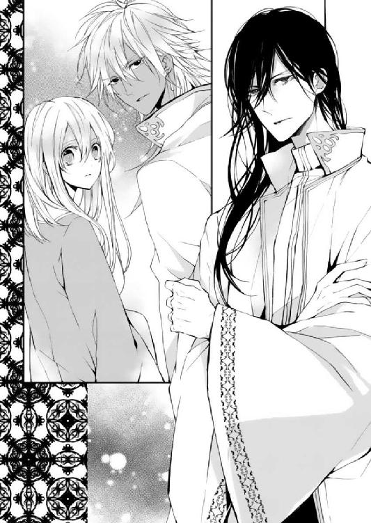
「ラティーヤが動き出した。アフラ砂漠の北に反王政派の暴徒が出没している。中央より先は封鎖される」
「封鎖って......そんなに深刻な事態なんですか？」
「集落を占拠しては、暴動を起こしているらしい。北から避難してきた民を南で受け入れることはしても、南から北へと渡ることはできない。国王の決定だ」
サディーンは、アフガットのほうを見て早口で言った。
「じゃあ、ギルドは」
「バクラーシへは行けない。海路を使うならば別だが、混乱で船は順番待ちだ。しばらく時間がかかる」
サディーンは唇を嚙んだ。
出航を待っている間に手持ちはどんどん減ってゆく。移動して資金を稼ごうとしても道は封鎖されている。運よくすぐに船に乗り込めたとしても帰国時のアラハバートの情勢次第では商売ができるかどうかも分からず、仕入れの見込みもつけられない。こうなると、八方塞がりである。
「ギルドを守り、魔法使いと共に北へ行きたいか？」
アフガットの問いに、シェヘラとサディーンは目を見開いた。
「そりゃ、行きたいに決まっている──どちらも家族の危機なんだぞ」
「けれど父上はきっと、お前の自由を認めないだろう」
アフガットは、サディーンに向かって分厚い資料を突きつけた。
「これは......？」
「私はラティーヤの動向をずっと調べてきた。ドゥルタヤの抜け道を使って、やつらは巧みに砂漠を避けて行動できる。しかしその出入り口を塞いでしまえば、こちらに利がある」
サディーンが資料をめくると、いくつもの地下水路の地図と、その周辺の村落の情報が記されていた。
「この作戦に乗るか？ シャフリヤール。私の手足となって行動することを王に誓えば、お前は城を出ることができるかもしれない。お前は魔法使いと絨毯で北へ向かい、南側から軍を連れた私と共に、ラティーヤを挟み撃ちにする」
「なんで、わざわざ俺にこんな情報をよこす。俺がこれを悪用するとは思わないのか？ 一応俺たち、どっちも継承権一位なんだぜ」
「お前は王位よりもくだらない商売の方が大事なのだろう。愚かだからな」
サディーンは、探るようにアフガットを見た。
「作戦を練ったのは私だ。お前はそれに便乗しただけ。父上にそのことが報告されれば、私は王位に近づける。これはただの、私の打算的な申し出だ」
シェヘラは、ふたりのやりとりを見守っていた。
サディーンに、アフガット王子の作戦の手伝いをさせる。アフガット王子は指揮官として功績を挙げるが、サディーンは王子としての才覚を発揮することはできない。
けれど彼は、アフガットに協力するという名目でイスプールへ行くことができる。
反乱を鎮めることができれば、サディーンのギルドは陸路を使って安心して旅をすることもできるのだ。
サディーンは、迷うそぶりすら見せなかった。
「俺は、家族の危機は自分の手で救う」
「お前の決意はどうでもいい。私は今夜にも出立する。せいぜい王に懇願することだ」
アフガットはふたりから目をそらし、静かに部屋を出ていった。
サディーンの外出許可が下りたのは、アフガットの出陣から三日後のことであった。全身の隅々まで医師たちに検査され、身動きが取れなかったのである。シェヘラもシェヘラで、疲れがたまっていたのか、医師の判断でしばらくの休養を余儀なくされていた。
「何度もうるせえ大臣どもが考え直せって言ってきたぞ。いつの間にか俺派のうっとうしい連中が出てきたみたいだな」
シェヘラは、露台の手すりに触れる彼の背中をそっと見つめながら、絨毯を抱きしめていた。
これからサディーンとイスプールへ行く。
おそらく、これはあたしにとって間違いなく転機となる。
「行くか」
サディーンがシェヘラに手を差し出してきた。
「大丈夫だ、一緒にいるから」
シェヘラがおずおずと、彼に手を伸ばす。絨毯はふたりをうながすように、体を広げた。
林檎と望遠鏡を抱え、シェヘラは彼の手をぎゅっと握って、魔力を込めた。
「行って。──イスプールの、父さんのもとへ」
絨毯が浮き上がり、風を切って空へ飛び出す。宮殿の尖塔よりさらに上、星空をすぐそばに感じるほどの高さまで昇ると、サディーンはシェヘラの腰を抱き寄せた。
「ち、近いよ」
「寒い。夜空は風が冷たいから」
絨毯は速度を速め、ぐんぐんとバスコーの港町を抜けていった。アフラ砂漠を迷いなく進み、北の、かつてアラハバートが生まれた場所へとふたりを運んでゆく。
この速さと高さでは、暴れて落ちたらただではすまない。
シェヘラはおとなしく、サディーンにされるがままになった。
「......本当に、一緒に来てしまってよかったの？」
シェヘラがたずねると、しばらく地上の様子を物珍らしげに眺めていたサディーンは、口を開いた。
「絨毯に乗って思い出していたよ。あの町もこっちのオアシスも、行ったことがある。あっちの方角にある遺跡には腰が弱いじいさんが住んでいて、近くまで来たら絶対に寄ることにしてるんだ。あっちは、子どもが多い村。小さな服をたくさん仕入れてから行くようにしてる」
サディーンは、遠くの景色を見つめながら、そっと目を細めた。
「王宮の中にいたんじゃ、知りえなかったことばかりだ。俺は外に出されたとき相当父親を恨んだものだが、今は少し、違う気持ちだ」
「......どんな気持ち？」
「ひとつの別れで、千の出会いを手に入れたような気持ちだ」
サディーンは少しだけ切なそうに笑った。
「俺にとって、それは必要なことだった。皮肉だけどな」
あたしもいつか、今この瞬間をそう思えるときが来るのだろうか。
自分にとって、魔法の道具にとって、何もかもが必要な過程であったのだと──。
「これからも俺の居場所はギルドにある。王宮の、がらんとした部屋をあてがわれてそれがはっきりした。どんなに莫大な財産を与えられたとしても、仲間には替えられない。お前のことも、守りたい」
「サディーン......」
「俺はこうして、急にギルドを離れなくてはならなくなってしまった。だからせめて、仲間が無事に旅をできるように道を切り開きたい。アフガットに従うことでそれがかなうなら、俺は協力を惜しまないさ」
（今の立場から、サディーンは精一杯ギルドを守ろうとしているんだ）
「あたしも......ギルドを守りたい。サディーンと出会って、守ってもらった大切な場所だから」
人と出会って、触れ合えた場所だから。
雲を切り裂くようにして進む絨毯の上で、ふたりの衣がはためく音がする。
肩を寄せ合い暖を取りながら、ふたりはぽつぽつと取りとめのない話をしては、また口を閉じることを繰り返した。
サディーンが過去にこの国で出会った人々のこと。初めて物を売ったときのこと。幼いサディーンを保護したカイルの父親は厳しい人で、サディーンが商人になると決めたときは、三年はバスコーに戻らないようにと言われたこと。
十歳の元王子の少年が、二十歳の大商人となる頃までの思い出話に、シェヘラは相づちを打ち、時に笑みをこぼした。
シェヘラも少しだけ、自分の話をした。彼に出会う前のシェヘラは、神殿に閉じこもりがちのただの少女であった。
魔人の父親と神子の母親のこと以外に、何も話すべきことがなかった。シェヘラは改めて、自分の世界がいかに狭かったかを知った。
（ぜんぶ、サディーンが広げてくれたんだ。あたしの世界を）
シェヘラの小さな世界の話に、サディーンはいかにも興味深そうに耳をすませて、背を撫でてくれた。
彼はシェヘラの不安な気持ちを、会話によってなだめようとしていた。
（サディーンと離ればなれになったら、あたしは耐えられるのだろうか......）
自分で、サディーンと道を分かつと決めた。
けれど、それと自分の感情は、まったく別のことだ。
これ以上一緒にいたら後が辛くなるだけだというのに、シェヘラはサディーンの腕の中で、時間が止まってしまったら幸福なのではないかと思ってしまっている。
（お互い不安な気持ちでいるのに......離れなくちゃいけないなんて）
彼の腕の温かさや、ときおり髪に頰を寄せてくるときのくすぐったさも、余計に胸を切なくさせた。
この旅が終わったら、もしかしたらもう彼とは会えなくなるかもしれないのだ。
懐かしい景色が見えてくる。絨毯は高度を落とし、ふよふよと遺跡の中心に降り立った。
イスプールの神殿である。
シェヘラは不安をひとまず、胸にしまい込んだ。今ははっきりさせなければならないことがある。けじめをつけなくてはいけない。
シェヘラは絨毯にお礼を言って、サディーンと共に降り立った。玄関口にひとり、明かりを持った女性が立っている。
「──母さん！」
シェヘラが叫ぶと、彼女の母親は笑みを浮かべた。
「お帰りなさい。──サディーンも、ようこそ。何もない場所ですが。フーガノーガは神の間で待っています」
「父さんが......」
「あなたと別れてから、毎日寂しがっていたわよ。早く顔を見せてあげなさい。母さんはおいしいものでも作るから」
サディーンはにこやかに挨拶をした。
「お久しぶりです」
「ふたりとも、すごい衣装ね」
シェヘラは、いつ国王と対面してもいいように、王宮では緑のトーブを着て過ごしていた。サディーンが北へ向かうにあたって、同行するシェヘラもいつ何時呼び出しを受けることになるか分からなかったのだ。
（頭がいっぱいで、着替えるの忘れてた......）
質素倹約の家庭で育ったシェヘラはおずおずと母を見たが、母は微笑むだけで、何も言わなかった。何か事情があると察してくれたようだ。
「あなたたちが結婚したら、私とんでもない身分の子のおばあちゃんになっちゃうのかしら。楽しみにしているわ」
シェヘラは赤面して口をぱくぱくさせたが、サディーンはお構いなしで神殿へ足を踏み入れた。
ここはシェヘラの生まれ育った場所である。
石を積み上げて造り上げた神殿は、夜になるとしんと冷たく、心が凪いでゆく。
久々に里帰りをして、シェヘラはほっと息をついた。何もない土地ではあるが、ここには両親の愛と、アラハバート神を信じる者の気持ちがあった。それは彼女を何より安らかにさせた。
慣れた通路を進み、シェヘラはサディーンと神の間へと続く扉を開けた。
緑色の煙が流れ込んでくる。
もくもくと立ち昇る煙の向こうから、筋骨隆々の黒い肌をした魔人がこちらを見つめていた。
「シェヘラ、お帰り。そしてサディーンくんも、いらっしゃい」
フーガノーガはふたりに声をかけると、「さて」と腕を組んだ。
「夢で話したことは覚えているかな、シェヘラ」
シェヘラはうなずいて、みっつの道具をそっと床に置く。
「仲間がひとりだけ、ずっと目が覚めなかったの。あたしは生きた心地がしなかったわ」
サディーンは、フーガノーガの前に一歩進み出た。
「仲間が倒れたのは、シェヘラが林檎を使ったせいではないんですね？ もともと、熱病で意識を失った仲間が──今、その運命を改めて受け入れているだけで」
フーガノーガは、ゆっくりとうなずいた。
「命や結末──この大きな流れには、われわれ魔人の手が及ぶところではないのだよ」
「──父さん、あたしは迷っているのよ。今までは人を助けるためにこの力を使いたいと思っていた。けれど今は......」
父は、シェヘラの答えを待っている。
彼女はゆっくりと続きを喋りだした。
「混乱しているの。あたしは外に出て、人は不思議な力がなくとも、世の中を回していけると知った。けれどあたしは、大事な人の危機に魔法を使った。これは正しいことだったのかと」
林檎の魔法で退けた病気や怪我は、本人にはね返った。
シェヘラはただ、不思議な力で時間を稼いだだけだ。
「あたしは林檎の魔法の、本来の意味にもずっと気がつけていなかった。半人前のあたしが魔法の道具を持つことは、争いの火種を生むことになるの？」
「それは違うよ、シェヘラ。お前が成長したから、お前は正しい目線で魔法を見ることができたのだ。魔法は思いやりを持って、他人のために使うこと。父さんはそう言ったな」
「うん」
それは父から口すっぱく聞かされてきた言葉であった。
「シェヘラ。お前が魔法を使うことは、体力を削り、魔力を消耗するということだ。そうまでして他人を助けたいと思う気持ちこそが、魔法の源だ。勇気と思いやりが、お前の魔法なんだよ」
「ゆうきと......おもいやり？」
「かつて人は、魔人を頼り魔法を利用した。そうして魔人は人間に愛想を尽かして、アフラ砂漠の下へと潜ってしまったのだ。魔人は人の怠惰を知らず、人間は魔法を知らなすぎた。けれど、知っていれば運命も変わったのではないかと、父さんは思う。なぜなら人間は、魔人にはないただひとつの可能性を持っているからだ」
「ただひとつの......可能性？」
「魔人は成長しない。何百年、何千年たっても、もとより持ち合わせた性質から変わることはないのだ」
シェヘラは、かつてアフガットが所持していた魔人・ジルータスを思い浮かべた。
長らくランプに入っていたものの、気まぐれで人に悪さばかりをしていたという魔人である。
「だが人は変わる。いいようにも、悪いようにも。シェヘラ。魔人と人の子であるお前は、魔法を持ちえながら成長することができるのだ。人が成長するには、経験を積むしかない。敵も味方も、多くの人間と関わるしか」
「多くの人と......関わる」
「神殿の外に出て、お前は思いやりたい人間が増えたのだ。そして道具と共に成長した。道具本来の能力に気がつけるほどにね。最近は絨毯もよく動いていたろう」
そういえば、とシェヘラは思い出した。やんちゃすぎる絨毯に、手を焼いていたのである。
「怖れずに人間と向き合いなさい。それが、お前が魔法と......自分と向き合うための方法だ。父さんがお前に言えるのは、それだけなんだ。なぜなら父さんも、成長を知らない生き物だからね」
（人と向き合うことが、魔法と向き合うことになるというのなら、あたしが神殿に戻って魔法について学ぼうとするのは、間違いだということになる......）
ひっそりとした神殿にいるよりも、ギルドの仲間と旅をする方が、よほど人と接する機会はある。魔法の力がシェヘラ自身の人としての成長によって変化するというのなら、イスプールにいるべきではない。
（なら、サディーンと離れるのは......？）
彼という人間、王族の宿命を背負った人と共にいることは？
突然、母の悲鳴が聞こえた。サディーンはシェヘラを腕の中へと抱き寄せる。
真夜中の神殿に、母の腕を拘束して現れた来訪者は、たったひとりの女であった。
「クルファ......」
まだしも、盗賊の方がましであったかもしれない。
今はサディーンがいる、そして父も目覚めている。ただの盗賊ならば魔人を見て腰を抜かすであろうし、サディーンが彼らを追い払ってくれるだろう。
母の瞳は正気の輝きを保っていた。怪しげな薬を使われなかったのだと知って、シェヘラはその事実だけにも安堵する。
クルファは片手で母の抵抗を封じていた。
「お姉さん、離してちょうだい。どんなに脅されたって、夫も娘も、あなたに渡しません」
「黙っていてください。魔人の持ち主の意志を奪いたくはないのですから」
クルファはシェヘラを一瞥した。
「あなたがここにいるとは思いませんでした。シャフリヤール王子も」
「......ここに、何をしにきたの」
「魔法の力は次の世で必要です。奇跡の力によって、人々の信仰を作り出します。そこの親子は、何よりも次代にとって有用な存在になる」
シェヘラは父を見上げた。フーガノーガは腕を組み、招かざれる客を難しい顔で眺めている。
「君は、私たちの血をほんの少しだけ持っているね」
クルファは薄青の目を細めた。
「そうです。私たちの遠い祖先は、魔人でしたから。ドゥルタヤといえば、ご存じでいらっしゃいますでしょう」
「では私やシェヘラにとっても、遠い親戚のようなものだな。君を守ってくれる人は、いなかったのかい？」
フーガノーガは、悲しそうな顔をした。
「私は強い。誰に庇護される必要もありません」
「力のことではないよ」
クルファは意味が分からないとでも言うように、眉根を寄せた。シェヘラはクルファを見据えて声を張る。
「母さんを離して。父さんもあたしも、王国にはつかない」
「魔法を公的なものにしなさい。そうすればあなたも、苦しむ必要はない。魔法はあなた自身です。それを隠して生きなければならないのは、あなたも望まないはず」
「そのために......魔法を利用するというの？」
「力は、人に使われるためにあるのです」
クルファは当たり前のように、そう言った。
──この人は、以前のあたしに似ている。
魔法をねじ伏せ従えようとしていた、過去の自分に。
（この人を放っておいてはいけない。いつかのあたしみたいに、ひどい過ちをきっと後悔することになる）
「......あの女を止めれば、反王政派も止まるんだよな」
サディーンは小声で、シェヘラにささやいた。
「うまいこといけば、地下通路まで連れて行ってもらえるかもしれない」
サディーンの言葉にシェヘラははっとした。
（アフガットさまは、北から挟み撃ちにしろと言ったけれど......もしかして、これが最大の機会なのかも）
もとよりアフガット王子の狙いはサディーンを自分の配下とし、王宮から出してしまうことであったので、具体的な指示があるわけではなかった。
思いがけずクルファと出合ったことは、反王政派を止める手がかりとなるかもしれない。
（そうだ。ここで彼女をただ追い払っても、父さんや母さんが安全というわけではない。ここまで反王政派が来ているということなんだ。昼間に襲われたら、父さんは眠っているはず......）
クルファにランプをあきらめさせ、反乱を止めなくてはならない。
ただし、真っ向から反乱をやめるように説得しても、彼女は首を縦に振らないだろう。
（でも父さんは、人は変化できると言った。それは、クルファさんだって）
敵も味方も関係なく、恐れずにぶつかって......。
それは経験となり、人を成長させるのである。
魔法と向き合わなくてはならないというのなら、魔法を利用しようとする彼女とも向き合わなくては。何よりクルファは、不思議な力をラティーヤ王子や反王政派に貸し与えている。
（いにしえの力で彼女が暴走しようとしているのなら、止めなくちゃ。あたしとクルファさんは......同じ、古代の流れを汲むものだから）
今ならまだ、止められるかも──
「あたしを連れて行ってもいい。でも両親には、手を出さないで」
シェヘラは震える声をしぼり出して、そう言った。
クルファは眉をひそめて、彼女を見る。
「それはラティーヤさまの配下につき、魔法を使用する意志があるということでよろしいですか？」
「それは......」
「俺たちはラティーヤ側にはつかない。でも、ひとつだけあんたの得になることはある。ラティーヤは、あんたの手に余っているだろう」
サディーンが言葉に詰まるシェヘラをかばうようにして、前に進み出た。
「ラティーヤに王位継承権はすでにない。国王はあいつを王籍から抹消した。あいつの名のもとに反王政派を集めているとしたら、その事実はあんたにとって打撃になるはずだ。王籍のない頭に、どこまで人はついていくかな」
クルファは口を閉ざしたまま、表情は変えていない。
何も言い返さないということは、サディーンの指摘は間違っていないのだ。
「ラティーヤはすっかりあんたの言いなりになっているが、もうただのお荷物だ。この前の暴れっぷりを見ていれば容易に想像がつく。反乱軍を束ねるなど、無理だ。お飾りとしても使えないうえに、ご機嫌だけは取らなきゃならん。あんたは切羽詰まっているはずだ」
「それで？」
「俺とシェヘラを連れて行けば、ラティーヤを失ったあとの切り札になる」
クルファは目をすがめた。
「俺は現在継承権一位。シェヘラには、魔法がある。今なら俺たちはおとなしくあんたについていく。ただし、シェヘラの両親には手を出すな。それが交換条件だ」
「あなたがたには、どのような得が？」
クルファについていくとすれば、シェヘラたちにとっても得るものがなければ、不自然である。
「オアシスを占拠しては、反王政派に好き放題やらせているみたいだな。人質を解放しろ」
「とうとうあなたまで、国王への点数稼ぎをするようになったというわけですね」
「通行止めで迷惑してんだよ。ギルドが潰れてしまう」
クルファはしばし考えていたが、
「......いいでしょう。役に立たない住民よりも、王子と魔法使いのほうが良い人質になる」
どうやら交渉は、成立したようである。
シェヘラは父の方を振り返った。
「父さん、ごめんね。あたし、クルファさんと一緒に行く。でも、魔法のことは心配しないで。父さんの言いつけはちゃんと守るよ」
「何があってもくじけない、お前の長所があれば困難も乗り越えられる。気をつけるんだよ」
シェヘラはサディーンと共に、クルファの後に続いた。
神殿には、魔人と神子の夫婦だけが残される。
「あなた。どうしてふたりを行かせてしまったの？ あなたの力を使えば侵入者ひとり、どうにでもできたでしょうに」
妻の非難に、フーガノーガは答えた。
「魔法を使って事態を解決することは、本当の意味での解決にならないよ。それに、子ども同士の問題に、大人が口をはさむものではない。シェヘラは自分で、魔法に対する答えを見つけなければならない。そしてあのドゥルタヤの子も、自分の力で正しい道へと進まなくてはならないんだ。私が介入しては、それを邪魔することになる。人生は時に、通るべき迷路というものがあるんだよ」
「私はシェヘラたちが心配で、そんな気持ちにもならなかったわ。あなたはすごいわね。千年以上も生きていると、達観してくるのかしらねぇ」
「......おじいさん扱いはやめてくれ、母さん。本当は私だって、シェヘラのことが心配でたまらないんだから」
素直じゃないんだから、とシェヘラの母はあきれたようにつぶやいた。
これで尋問するのは三人目である。
アフガットは、反王政派の男が繫がれている部屋を訪れた。
比較的大きな農家で暴れ回った男は、その家の納屋に押し込められ、焦点の合わない目でアフガットを見ている。
（ジャクラマールか。近くの村で捕まった男も、同じであったな）
地下水路の地図を作成し、どこの水路がどの集落に通るものなのかをあらかじめ把握していたアフガットは、蟻の巣穴の前で待ち伏せするかのように、兵たちを手配していた。
地下の一族を味方につけているということは、思ってもみない抜け道を使って反王政派を動かすはず。ラティーヤが新しく道を造っていないか、地下の構造にばかり目を向けていたのである。それが裏目に出た。
偵察部隊のうち信用のできる部下だけを引き連れて、アフガットは腕を組んだ。
先ほどから、捕えた男は宙を見ながらぶつぶつと、意味のない単語をつぶやいている。
ジャクラマールの作用は、さじ加減で異なる。快楽を覚えさせるだけのものから、催眠状態にいたらしめるものまで。
目の前の男は、かなり強い薬で操られていたらしい。これでは尋問も意味をなさない。アフガットは嘆息して、部下に告げた。
「アリー。井戸水を汲んできたか」
「はい。言われたとおりのものを」
大量に水を飲ませ、薬の成分を洗いざらい吐かせるしかない。長期的に投薬が続けられていたのならこの方法は意味をなさないが、まだ服用して間もないのならジャクラマールをうまく体外へと排出できるはずだ。
透明な水の入った桶を差し出され、アフガットは眉をしかめる。
「......これは、隣村のものか？」
「いいえ。すぐそこの井戸ですよ」
アフガットは指を桶の中に差し入れ、そしてにおいをかぐ。すぐさま指を振って、水滴を払った。
「この水は使えない」
「どうしてですか？」
「分からないのか。ジャクラマールが入っている。ここもだ！」
巧妙に色まで隠されている。このような調合の仕方が可能であるとは。舞姫誘拐事件の際に、緑の色がついているものだと思い込まされていただけに盲点であった。
今まで捕らえた反王政派の者たちが現れた場所でも、井戸水は同じように汚されていた。関係のない村人まで知らずに水を飲み、ジャクラマールの成分を体内に取り込んでしまっている。
まさかここまで大掛かりに、毒を仕掛けてくるとは思わなかった。
最初の駐屯地で休ませた兵たちは、透明に溶け合った毒を飲み、半分ほどが使い物にならなくなってしまった。変色にはさすがに気づいただろうが、これほど巧みにジャクラマールが混入されるとなると、アフガットのように試作品を作り続けにおいを覚えた者でなければ判別できない。そのにおいも、ほんのわずかに漂う程度で、香辛料の強い食べ物と一緒に口にしてしまえばたちまち分からなくなってしまう。
相手が毒を仕掛けてくることは勿論念頭に置いていたので、このようなことにならぬよう兵を分散させたというのに──。
まさか、すべての集落に毒が流されているとは。
「北の村、井戸ぜんぶやられてるってことですか。女とラティーヤ王子だけでそんなことできますかね」
普通ならば、不可能だ。北の集落はそれぞれ離れており、砂漠を越えながら回らなければならない。井戸のひとつひとつに毒を流すとなると、かなりの時間を要する──。
「......いや」
アフガットはあごに手を当てて、考え込んだ。
ひとつだけある。一度に、このあたり一帯すべての井戸水を汚す方法が。
「山脈に......水源に毒を流せばいい」
山脈の湧き水がどの集落の地下水路へと流れるか、地下の一族である女は完全に把握しているはずである。山から毒を流すとなると、かなり強い成分を仕込まなければ村落へいたるまでには薄れてしまうだろう。現在山がどうなっているのか、想像するだけでも頭が痛くなる。
自分は、取り返しのつかないほどの後れを取ったのだ。
「うっ......」
繫がれている男がうめいた。アフガットは自分の飲み水を強引に男に飲ませる。
「......王族に味方する者は、殺す......」
男はようやく覚醒し始めたようだ。
「港、ばかりが優遇される......王族のせいで......」
アフガットは眉をひそめた。
「そのようにお前に教えたのは誰だ」
男はさらなる恨み言を連ねるだけである。王家や港、そしてベルシアへの不満を、怒りを交えて吐き出した。
このあたりの土地は、過疎が進んでいる。残された民はわずかばかりの耕地の収穫を当てにしたり、山で食べ物を調達しながら、暮らしている。
アフガットが北へ進軍するに当たって調べたときに気がついたことだが、僻地は港の発展に伴い置き去りにされてしまっているのだ。
（しかし水が汚染されれば、収穫もできなくなる。山は一度汚れれば、元に戻すまでにどれくらいの時間を要するか──）
港湾政策に国費をかける以前──外交に力を入れる以前は、こういった地域の暮らしを支える人員や金をかけられたのだが、今は減額されている。
父王は、ベルシアとの外交に力を入れたが、同時に郊外の民に手を伸ばすまでにはいたらなかった。あと十年もあれば、どうにかできたのかもしれないが──。
（これが......国を発展させることで起きた弊害か）
国を治めるということの難しさを、改めて思い知る。
「お前の背中を押した者がいるはずだ。そいつはどこへいった」
「......イスプールへ......行くと、言っていた」
「イスプール？ なぜ？」
「知らない。俺たちは......次の王が即位するまで、好きなように奪っていいと言われた......村を荒して暮らしていいと......」
イスプールは、シャフリヤールと魔法使いが向かおうとしている場所だ。あの土地には、魔法使いの父親──ランプの魔人がいる。
魔人を従えれば、ラティーヤたちはもっと自由に動くことができる。
「隊の飲み水を住民へ配り、井戸は封鎖しろ。イスプールへ向かうぞ」
「──了解いたしました」
王都から水を運ぶように伝令を飛ばすと、アフガットはすぐさまさらなる北へ向かう手はずを調えた。

クルファの案内に従って、シェヘラたちは地下水路の入り口までやってきた。
（イスプールも、ドゥルタヤ族の地下通路に繫がっているの......？）
いったい地下にどれほどの規模の隠し通路があるのだろう。もしかしたら、砂漠の下はすべて......？
サディーンはシェヘラが歩きやすいように、かさばる絨毯を抱え、始終クルファの背中をにらんでいた。
神殿の外に人影は見当たらない。初めから、クルファひとりでやってきたようである。
中へ入ると、わずかな水のせせらぎが聞こえる。
壁の一部を押すと、回転して別の通路へと繫がっていた。
サディーンは壁の硬さを確かめるように、手の甲で軽く叩く。
「この穴はあんたひとりで堀り進めたわけじゃないんだろ？ この間の廟は高そうな宝石もはめてあったし、ずいぶんと大がかりだな」
「なぜそんなことを気にされるのです」
「商売人の性だ。ちなみにいくらした？」
クルファはサディーンの問いを無視した。
「あの」
沈黙が続いたので、シェヘラは以前から気になっていたことを、彼女にたずねてみることにした。
「......何でしょう」
「クルファさんは、どうしてラティーヤ王子に協力するんですか？」
「ラティーヤさまを国王にし、私はいずれ彼の子を産み国母になります。王家にドゥルタヤの血を復活させるのです」
「次期国王の母親になることが目的なら、ラティーヤ王子でなくてもいい。次の国王が決定してから、動けばよかった。......あなたなら、もっと簡単な方法があったはずです」
クルファはジャクラマールで人を洗脳できる。ラティーヤに近づいた経緯は分からないが、王宮に閉じこもりきりであった王子に接触できたのだから、次代の王に自分を売り込んで子どもを産むだけでもよかったのではないかと思う。
実際、上流階級の身分のない者でも──サディーンの母のように、王子を身ごもった女性もいる。
「ラティーヤ王子に、特別な何かがあるのですか。それともハーレムに入れない理由があるんですか。それは、違う方法で解決できないんですか」
「できません」
きっぱりと、クルファは答えた。
「私は地下の一族です。けして表舞台には出られない。あなたも同じでしょう。自分が何者であるか、大勢の人間の前で声を上げることができますか？」
ドゥルタヤ族は、現在でも迫害を受けているわけではない。失われた一族とされ、名前を覚えている者も少ない。
もし彼女が王族に近づけない理由があるとすれば、一族の名ではなく、一族の力にあるのだ。
「......確かに、あたしは大勢の人に、魔法の存在を伝えることはできません。でもそれは、父さんからもらったこの力を大切にしたいから。あたしは父さんの娘で、魔法使いであるということを誇りに思っている。クルファさんは、どうなんですか」
「少なくとも、自分の『役目』をそう感じたことはありません。力を扱えることに関しては、感謝していますが」
「なら、その力で人を困らせるようなことをするべきじゃない。あなたはただ、堂々と生きたいだけなんでしょう」
「堂々と、ね。異端の力を持っていても愛されて育った娘は言うことが違いますね。総じて甘い」
クルファはそれ以上言葉を続けることはなかった。
シェヘラは服の裾をぎゅっと握りしめる。
彼女は以前、シェヘラを自分と同類であると言った。だからこそ、何か会話から分かり合えるものがないかと探してみたのだが......彼女の機嫌を損ねただけのようだ。
「このあたりまで来れば、簡単には出られないでしょうね」
クルファは石の扉を押して、シェヘラたちを招き入れた。申し訳ばかりの家具が置いてある、小さな休憩所のようである。
ラティーヤの姿はそこにはない。
「ラティーヤはどこにいるんだ？ あんたと一緒にいるんじゃないのか？」
言ったそばから、何かが割れるような音が響く。近くではなく、音は反響しているようで、少し遅れて叫び声が聞こえてくる。
「......食事は、あとで運びましょう。おとなしくしていてください」
クルファが扉を閉じたのちに、サディーンが口を開いた。
「たぶん、今のラティーヤだよな」
「......声はよく似ていたわ」
「あれじゃ本当に、手を焼くな。おとなしくさせるのにジャクラマールを与えなきゃならんが、使いすぎはよけいに心身を蝕むことになる」
「クルファさんがひとりで......反乱軍をまとめているってことだよね」
なぜそこまでする必要があるのだろう。ラティーヤをそばに置いている意味は、もうほとんど彼女にはないというのに。
一族の再興が目的であると言っていた。だが、アフガットはすでに反乱の動きを聞きつけ、南側から動き出している。
「こんなの、長く続くはずがない。地下に逃げ隠れしていては反乱を起こせないし、地上に出れば国軍が来るはずだわ。ひどいことになる前に、彼女を説得して止めないと」
「どうやってあの女を説得する？ さっきのやりとりを見ていたが、一筋縄でいく女じゃないぞ」
確かに、彼女は目的のためにかたくなになっているようである。
「けれど、シェヘラの質問でひとつ、重要なものはあった。あの女にとってラティーヤは特別かどうか、ということだ」
クルファはそれに関して、答えることはなかった。
「どういうこと？」
「お前の言うとおり、あの女の力があれば動くのは次期国王が決定してからで良かった。むしろ、その方がいい。次に王になれるかも分からないラティーヤの子より、冠をかぶった者の子を産んだ方がいいに決まっているんだ」
アフガットかラティーヤか、もしくはサディーンか......三人の誰かが国を継いでから、国王を籠絡すれば済んだ話なのである。
「あの女は、それにもかかわらずラティーヤについた。以前ラティーヤと何かがあったか、もしくはあいつが王になる確信があった」
「ラティーヤさまが......試験で勝つ、と思っていたのかしら」
王族の子たちは、『試験制度』というもので王冠を巡り争っている。次代国王を決定するための試験にラティーヤが勝つ見込みがあったのなら、早いうちから彼に近づいたのはうなずける。
「実際に舞姫誘拐事件の犯人があいつらだったのだから、もちろんそう思っていただろう。試験の内容は自分たちが最初から仕組んだものだったんだからな。けれど、ラティーヤは試験を受けることを認められなかったんだ。そして継承権を剝奪された。おかしいのは、試験の後もあの女がラティーヤについているということなんだ」
ただ自分の子を王位に即けたいというだけならば、クルファはラティーヤを捨てるべきであった。このような場所で、大事に守る必要はない。
「ラティーヤから俺に乗り替えようというのなら、もっと態度が軟化してもいいはずだが、変わらない。あくまで俺はラティーヤの代わりとしか考えていないのかもしれない」
「クルファさんは、ラティーヤさまのことが好きなのかな。だから彼を国王にしたくて......」
「それは、ないんじゃないか」
サディーンは歯切れ悪くそう言った。
「どうして？ だってふたりでずっと一緒に行動してるし、その......。子どもも産むって言ってるよ」
「好きな相手に依存性のある薬を飲ませたりしないだろ。それに、子どもは別に好きな相手との子でなくても産めるしな」
「......？」
シェヘラが不思議そうな顔でサディーンを見たので、彼は後ろ頭を搔いて、言い辛そうに口にした。
「王子の相手をつとめる者のほとんどは、野心家ばかりだ。あわよくば子を産んで、権力や財産を手に入れようとやっきになってる。恋愛感情よりも、そういうもののために......王子の部屋に通う女というのは、珍しくないんだよ。ひとときのために、玄人がやとわれることもあるし」
サディーンはかなりぼかしてシェヘラに事実を伝えようとしているようで、回りくどい物の言い方をした。ようやく意味を理解したシェヘラは、うつむいてしまった。母に教えられた「愛さえあれば奇跡の力で魔人の子でも何でも産める！」というのは王宮では当てはまらないようであった。
（そういえば......クルファさんは、ラティーヤ王子にあたしを愛するようにって、けしかけてた。好きだったら、そんなことできないよね......）
自分がサディーンによその女の人を好きになって、と言うようなものである。それだけは絶対に嫌であった。
「クルファはおそらく、ラティーヤに特別な感情を持っている。だが色恋沙汰ではなさそうだ。そこらへんが、クルファを説得するきっかけになるかもな」
かつかつと、地下に響く足音がする。
クルファがラティーヤを落ち着かせて、こちらへ戻ってきているのだろう。
「シェヘラ、一度しか言わないからよく聞け。......ラティーヤを、刺してしまおう」
シェヘラは驚き、目を見張った。
サディーンはクルファがやってくるなり、腹の痛みを訴えだした。
「やばい。本当に内臓がよじれそうだ」
芋虫のように身を縮めるサディーンに、クルファは一瞬、状況を理解するのに時間を要したようであった。
（さ、サディーン......！ 演技上手......！）
シェヘラは不安そうな顔でクルファを見上げる。
「クルファさん、腹痛のお薬を作れませんか？」
「ご自分の林檎で、治せばいいのでは？」
彼女に真実を告げることは、危険かもしれない。けれど魔法は奇跡の力ではないと分かってもらわなくては。
少しの間シェヘラはためらったが、意を決して答えた。
「あたしの魔法は病を完治させるものでなく......一時的に病気や怪我を遠ざけるものなのです」
クルファは目を見開いた。普段は人形のように無表情の彼女だが、さすがに驚きを隠せなかったようである。
このことが明るみに出てしまえば、クルファはシェヘラでなくフーガノーガを欲しがるに違いなかったので、少なくとも神殿から離れるまでは黙っていなければならなかったのだ。ランプから出ている魔人に、クルファが勝ることはないとは思うが......。
クルファはしばし、サディーンとシェヘラを見比べてから、溜め息をついた。
「......お待ちください」
クルファが引き返し、部屋を出て行く。彼女が鍵を取り出す音を聞きつけるなり、絨毯はさっと扉の隙間にすべり込んだ。クルファが気づかずに去ってゆくと、サディーンは施錠できなかった扉を確かめ、ぎちぎちに挟まった絨毯を「良くやった」と助けてやった。シェヘラはこの隙に、望遠鏡に魔力を込める。
「クルファさんの背中を追って。できるだけ景色は引いてちょうだい」
望遠鏡の玉石は強い光を灯す。
「シェヘラ、頼む」
「右、左......三つに分かれた通路を中央に、まっすぐ歩く。やっぱりサディーンの言うとおり、薬を作る場所はここから離れている」
地下水路に入ったとき、水が涸れずに流れていた。しかし、この部屋にたどり着くまでの通路は土壁ばかりが続いていた。
「あの女が薬を作るには、水が必要になるはずだ。湿ったところでしか育たない薬草は、アフガットの部屋にもあった。何よりクルファは、ラティーヤの手の届くところに薬を置いていない。もし置いてあったら、かんしゃくを起こす前に勝手に飲んでるだろうからな」
（サディーン......すごい。あんな状況だったのに、周囲をよく見てる。あたしひとりじゃ、いっぱいいっぱいでそんなことまで考えつかなかった......）
クルファのもとへ行こうとしたシェヘラに、自分が王位継承権を持つことを売り込んでついてきたのも、彼なりの機転だったのだろう。ラティーヤの代わりとなれるサディーンを利用するつもりなら、クルファは彼を殺せない。
（今ある情報でこの先どうするべきか、先を読んでるんだ......。勘を最大に働かせて）
「悪かったな......魔力を使わせちまって」
サディーンはやるせない表情を浮かべていた。シェヘラが魔力を使うことは、体力を削るということなのである。
ほんの少しならば問題はないのだが、以前シェヘラは魔力の使いすぎで倒れていた。彼はいまだに、そのことに責任を感じているようなのだ。
「父さんは魔法を使うことを、恐れなくていいと言った。だからがんばれる」
「もしも、怖くなったら俺がいることを忘れるな」
サディーンはシェヘラの手をぎゅっと握った。
（あたし、サディーンに助けられてばかりだ......。ひとりぼっちだったら、イスプールへ行く前にくじけていたかもしれない。あたしはサディーンがいたから、ここまで来られたんだ......）
彼があたしの足りないものを補ってくれるように、あたしも彼の力になりたい。
今度はあたしが、彼を助ける番だ。
「魔法の望遠鏡。ラティーヤ王子は、どこにいる？」
シェヘラは再び、望遠鏡に問いかけた。
時代がかった神殿である。
アフガットは馬を下り、あたりの様子をうかがった。
魔法使いの故郷は、想像以上にへんぴな場所であった。村で唯一の立派な建物が彼女の実家であるとは──それも、千年も昔から存在していた場所であるとは、にわかに信じがたい光景である。
真夜中の神殿を訪ねる村人はいない。アラハバート神への祈りは、陽の高い時間に捧げねばならないとされている。
アフガットは、偵察部隊からふたりを選んでこの神殿へとやってきた。まだ動ける兵士たちは、村人へ水を配給したり、残りの反王政派たちを追わせたりするために、各地へと派遣した。
水を携えた応援部隊がこちらへやってくるにはまだ時間がかかる。イスプールでランプと魔法使いの無事を確認したらすぐに本隊へと戻るつもりであった。
他の部下に任せてもよかったが、魔法のことを知る人物でなければ、いざというときにうまく対応できないだろう。何よりも、相手の使う薬についてはアフガットが誰より詳しい自信がある。ドゥルタヤの女がその場にいれば、その場で確保できるかもしれない。
神殿の門をくぐる。古びてはいたが、丁寧に磨かれていた。神子がよく仕事をするようだ。
「だ、誰なの」
アラハバート神の像がそびえる広間にたどり着くと、怯えたような女の声が響いた。
像の後ろから、金のランプを抱えた女がひとり、こちらを覗いている。
「ひょお、美人」
「アリー。黙れ」
後ろで部下がつぶやいたので、アフガットはにらみつけた。
「お前は魔法使いの母親か。クルファという女がここを訪ねてこなかったか」
「はい......来ました。娘を連れて行ってしまったわ」
最悪だ──とアフガットは心の中でつぶやいた。おそらく魔法使いとシャフリヤールはぎりぎりまで王宮に留め置かれていたのだろう。そして運悪くクルファと鉢合わせてしまったのだ。
「娘はシャフリヤールと一緒か？ ランプの魔人はその中にいるのか」
アフガットがたずねると、女は困ったようにちらちらと視線を動かした。緑色の煙があたりに立ち込めてゆく。
ぼんっ!! と小気味よい音とともに、アフガットの目の前に魔人が現れた。筋骨隆々のたくましい体をした、男の魔人である。
（......母親にも似ていないと思ったが......父親とも、あまり似ていなかったのだな）
アフガットは目の前の魔人を見上げた。魔人はひげをいじりながら、アフガットを興味深そうに見ている。
「これは驚いた！ 長いこと生きてきたが、君ほど珍しい王族の子はいない。こんな場所に、いったい何の用事だね」
「クルファという女がここに向かったと踏んで、やってきた。お前の娘を狙っている女だ」
「ああ、その子ならさっきシェヘラと一緒に出て行ったよ」
アフガットは眉を寄せた。なぜこの魔人は、娘を攫おうとする女が現れて、みすみす渡してしまったのだろうか。魔人の力があれば女ひとり、どうにでもできたはずである。
「悪いけど、私はジルータスと性質が異なるのだ。人間界には深く関与しない、これは私の中の決め事だよ」
「人間界のことだと？ お前の娘は、半分は魔人だが」
「けれど地上で生きなければならない。ならば地上の理に沿って生きる方法を学ばなければ」
魔人は娘を育てるために、わざとこの状況を傍観することにしたらしい。
ふと、アフガットの中で疑問が芽生えた。
「......なぜ、私がジルータスを使役していたことを知っている？」
かつてアフガットが従えていた女魔人は、すでにアラハバートの地上から去っている。現在アフガットは、魔人のランプを携えてはいない。
「すぐに分かったよ。君は王族の子なのに、肌が白いじゃないか」
「それが何だ」
気にしていることを真っ向から指摘されて、アフガットは不愉快になった。
「それは、君がいにしえの血を引いていることに他ならないのだよ」
「......？」
「神に愛された子は色素に突然変異が出る、という言い伝えがある。北の民に色が白い者が多いのは、アラハバート神が北方で建国したことに始まっているのだが」
魔人はゆっくり言葉を切った。
「私の娘を見たことがあるだろう。色も白い。瞳の色も、二色のまだら色。生まれつき魔力を持つ者は、そういった特徴を持っているのだよ。君が追っているドゥルタヤの子も、少なからずそうだね」
クルファは色白に、薄青の瞳である。アラハバートの民の中では、珍しい取り合わせだ。
「君もだ。千二百年前、アラハバートでは魔人と人間が手を取り合い、暮らしてきた。大昔は王族の子が半魔人であったこともあった。特にシャフリヤールの時代は魔人との結びつきが強かったからね。砂漠ができてからは人間のみの世界を築いてきたが、たまたま何かの巡り合わせによって、君には祖先の血が色濃く出てしまったのだろう。その証拠に、君は魔人を従えることができた」
「ランプの魔人は、ランプから目覚めさせれば誰でも使えるものではないのか？」
「そもそも、魔力を持つ者がこすらないと出てこられないように、私が封印したのだよ。ジルータスは快楽に忠実なので、ただの人間では制御し切れまい。まぁ当時の君も、うまくは扱えなかったようだがね」
「では、私は本当に......」
父上の子なのか？
アフガットは、しばしためらったが、結局たずねなかった。
魔人に真実を教えられ安心して、いったい何になるのだろう。
長年追い求めてきた答えを、こんなに簡単に──この、少しとぼけた魔人から得て終わりだというのなら、今まで培ってきたものが一体何だったのか、分からなくなる。
今は過去ではなく、これからをどうにかしなければならないときなのだ。
「ドゥルタヤの女を追いたい。どの方角へ向かったか教えろ」
魔法使いの母親が、おずおずと答えた。
「塔から覗いた限りでは、集落の近くの地下水路へ向かったようです」
この土地の井戸は、毒が流された場所とは別の山脈から水を引いている。神殿を訪れる前に調査したときには、ジャクラマールの混入はなかった。だがクルファが現れた以上、ここも危ないだろう。
「......もうひとつ聞きたい。このあたりの村の生活基盤はどうなっている？」
「主に耕作ですが、数年前に作物がやられてだめになったこともあります。十年に一度はそのようなことが起こるのです」
特に十年前に起こった飢饉は、ずいぶんと村人を苦しめたらしい。
アフガットは、魔人に背を向けた。
「邪魔をした。これから地下へ向かう」
アリーが小声でたずねる。
「......魔人を持って行かなくていいんですか？」
ランプの所持者はか弱い女ひとり。魔人を奪うには、絶好の機会である。
「いや。魔法の力は万能ではないということは、すでに林檎の件で分かりきっている。魔法は、使いどころを誤れない。ならばできるだけ放っておくのがいい」
アリーは驚いたような顔でアフガットを見た。
「間抜けな顔をするな。行くぞ」
ラティーヤが魔人を奪いにきたときのために、神殿に護衛の兵を手配するように指示しながら、アフガットは真夜中の砂漠をにらんだ。
地下だ。すべてはそこに繫がっている。
頭がぼんやりする。
何度か幸せな夢を見ては、ときおり悪夢を見る。その繰り返しであった。
幸せな夢には、いくつか種類がある。自分が宮廷装束を身にまとい、陽の当たる庭で、笑っているとき。気に入った女官を初めて手に入れたとき。兄弟たちとの力比べに勝って──いつも、少しずるい手を使っていたのだが──父王が、自分の方を見て穏やかに目を細めたとき。
悪夢は決まってひとつ。濁りきった金色の渦の中に、沈んでゆく夢である。あらゆる声がするが、重なり合って聞き取ることができない。やがて、薄青の瞳をした女が、自分をじっと見下ろしていることに気がつく。恐ろしくて彼女の名を呼ぶが、彼女は自分に応えない。
「......クルファ！」
ラティーヤが必死に叫ぶと、頰に強烈な痛みが走った。
「いい加減起きろ」
ラティーヤは、状況を理解することができずに、息を詰めた。最近は夢と現実の区別がつかなくなることが多く、クルファに何度も「それは夢ですよ」と背中を撫でられているのだ。
目の前に異母弟のシャフリヤールと、心配そうに顔を覗き込む魔法使いの少女がいるこの状況は、ラティーヤにとって、判断が難しかった。
（現実？ 夢？ 悪夢が続いてるのか......？）
「まだ寝ぼけてるみたいだな。もう一発殴るか」
「さ、サディーンやめて......！ もう頰が赤くなってるから。だから、もっとやさしく起こした方がいいって言ったのに」
いつもだったら、そろそろクルファが現れて、ラティーヤを抱きしめながらなだめてくれる頃合いである。そしてあの薬をラティーヤに飲ませてくれるのだ。いっぱい欲しいと言っているのに、思うような量をくれない。
シャフリヤールは、自分の方をにらんでいる。
燭台の炎が揺らめき、異母弟の顔を照らしていた。
なかなかクルファは現れない。ということは、これは現実なのかもしれない。
ラティーヤは、かすれた声でたずねた。
「何？ お前は死んだんじゃなかったの？」
そういえば、クルファに兄弟たちがどうなったのか、詳しく聞かせてもらっていなかった。
彼女はいつも、「あなたに必ず王冠が渡るようにいたします。ご心配なさらずに──」とささやいて、そのあとは忙しそうにどこかへ行ってしまうのだ。
「それはこっちの台詞だ。あのうさんくさい女に薬漬けにされて、何の役にも立たないお前がよく生かしてもらえてるよ」
ラティーヤはむっとした。彼女は自分を愛していると言っているし、実際夜は寝台を共にしている。確かに今は、体の調子が悪いことも多いが──クルファは献身的にラティーヤに尽くしてくれている。忙しくしているのも、体が思うように動かない自分に代わり戴冠までの準備を調えているからである。
「お前、もうすぐ捨てられるぞ」
シャフリヤールがそう言って笑ったので、ラティーヤはいぶかしげに彼を見上げた。
「お前が事件を起こしたことは、すでに国王の耳に入っている。お前の資格は戻らず、結果俺が継承権一位となった。あのクルファとかいう女は、お前のそばにいても得がないと分かって、俺に乗り換えたんだよ」
「でたらめ言うな。クルファは僕を裏切らない」
そう言ったものの、ラティーヤの胸には動揺が走る。
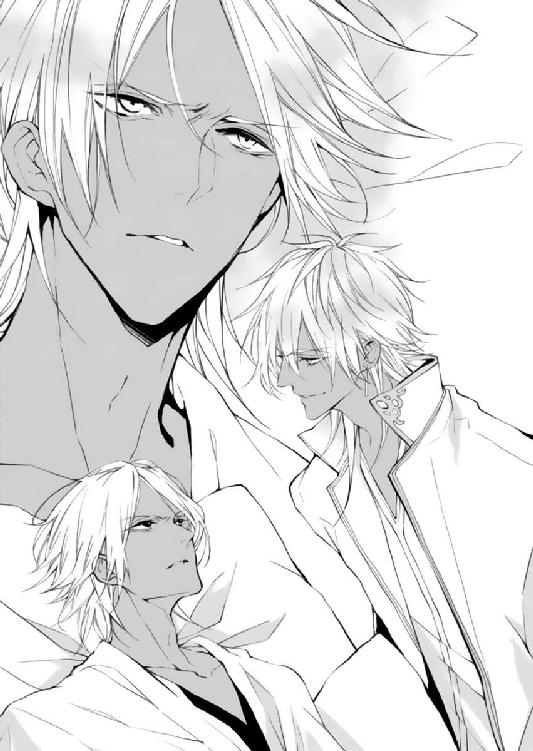
なぜ、シャフリヤールはこの場にいる？ ここはクルファがラティーヤのために用意した、秘密の隠れがだ。
シャフリヤールが歩き回っているということは、クルファが彼に自由を許したのである。
クルファが忙しくしているのは、本当に僕のためだったのか......？
僕ではなく、シャフリヤールを王にするためであったのか？
魔法使いの少女が、静かに進み出た。
「ラティーヤさま。国王さまは今、とても難しいご病気です。先日も王宮で倒れられました」
「父上が......？」
「クルファさんのもとを離れて、国王さまにお会いになられてはいかがでしょうか？ 舞姫の事件のことを、直接謝罪して──」
「嫌だね」
「でも、早くお会いにならないと、親子の間に溝ができたままになってしまいます。自分から正直に、事件についてお話してみては──さいわい、死者は出ていないし、もしかしたら」
魔法使いは分かっていない。国王はそんなに甘い人間ではない。他国の使者や国民の前で顔に泥を塗るような真似をしたのだから、恩赦などされるはずもなかった。
「それに、クルファさんは反王政派を集めて活動させています。止めないと、関係のない人まで巻き込まれるかも──」
「うるさいな。お前には関係ない！」
いまいましくてたまらない。クルファはこんなにうるさくなかった。彼女はこの娘を欲しがっているが、自分にはクルファさえいればいい。
「このまま国王さまにもしものことがあったら、ラティーヤさまは後悔なさるのではないですか？ 地下にいたときも、危なくなったら国王さまを呼んでいました」
「覚えていないそんなこと。だいたい、そんなの魔法で治せばいいだろ。命の林檎だっけ？ 国王が危ないっていうのにその力を使わないなんて、国王が死んであわよくばシャフリヤールが次代を継げばいいと思ってるんだろ。そうしたらお前は毎日後宮で贅沢三昧だもんな」
「そんなこと、思ってません！ あたしだって、治せたらいいとは思います。でも林檎の魔法は怪我や病気を完治させることはできないから、だから」
「シェヘラ」
シャフリヤールは魔法使いの肩をそっと抱いた。
興奮した彼女は、それで少し冷静になったらしい。それ以上ラティーヤに何かを言うこともなく、口をつぐんでいる。
（魔法使いの林檎は万能の力があると、クルファから聞いたが......。話が違うじゃないか）
そもそも、クルファはなぜラティーヤの知らないさまざまな情報を、手に入れることができたのだろうか？
ただの女官にしては、あまりにも出来がよすぎる。巧みにラティーヤの内に入り込み、ラティーヤの望むものを与えてきた。
彼女は自分を愛していると言ったが、媚びる態度の中にもどこか冷え冷えとしたものが交ざっていることを、ラティーヤは感じるときがあった。
（父上が死んで、ほかの兄弟が国王になれば、僕は）
誰にも顧みられなくなる。
それはラティーヤが何より恐れる、孤独であった。
「試してみないか」
シャフリヤールは、ラティーヤの顔を覗き込んでそう言った。
「あの女が何をたくらんでお前に近づいたのかを、知りたくはないか」
ラティーヤは、ごくりと唾を吞み込んだ。
ラティーヤの言葉に感情的になってしまったことを、シェヘラは反省した。
彼から少し離れた部屋の端まで移動すると、サディーンはそっとささやいた。
「大丈夫か？」
シェヘラは小さくうなずいて、深く息を吸った。
「ごめんなさい。つい、かっとなっちゃって......」
魔法の力に戸惑っているさなか、ラティーヤにあのようなことを言われたので、自分でもうまく感情を抑えることができなかったのである。
「悪いことを言ったのはあいつの方なんだから、気にするな」
「でも、ラティーヤさまに自分から外に出てほしかったのに......」
「あいつは最初から出る気なんてないだろう。俺は無謀だと言ったが、お前はそれでも説得してみよう、ってがんばったんだ。もしかしたら、あいつも今はうなずかなくてもシェヘラの提案を考えてはいるかもしれない」
「うん......」
「人と向き合うことは、うまくいくことばかりじゃない。分かり合えないことだってある。けど、ぶつかった経験も双方に意味をちゃんと与えてくれる。大丈夫だ」
サディーンはシェヘラの肩を抱いて、頭を撫でた。
「これからクルファと話すことになるが、いけそうか？」
「あたし、クルファさんと話したい。クルファさんのことを知りたい。あたしと同じ古代の力を持っているというのなら、恐ろしいことはやめさせたい」
魔法の力を持って、楽しいこともたくさんあったけれど、後悔したこともあった。
その後悔を、他人にもしてほしくない。自分の力で止めることができるのなら、止めたい。
「クルファとお前は、不思議なところで繫がっている。俺が言うよりも、お前が話した方がうまくいくかもしれない」
サディーンはシェヘラを元気づけるように強く背を叩くと、ラティーヤの方を振り返った。
「始めるぞ」
つんざくような悲鳴が地下に響いたのは、クルファが薬を調合し終えてすぐのことであった。
（ラティーヤさま......!?）
彼が目覚めるには早すぎる。薬は日毎に量を足さずにはいられなくなり、先ほどもねだられるままに彼にジャクラマールを与えたのである。しばらくは幸せな夢を見ていてくれるはずだ。
足早に彼を隠した部屋へと歩を進める。
彼女がかけたはずの鍵は壊され、錠が床に落ちていた。舌打ちをして扉を開ければ、寝台の上にがくがくと震えるラティーヤ王子と、彼を押さえつけるシャフリヤール王子がいた。シャフリヤール王子の部屋に鍵をかけたはずだが、どうにかして外へ出たらしい。
「どういうつもりです」
シャフリヤール王子は腹痛を訴えていたはずだが、背筋はぴんとまっすぐに伸びている。先ほどのたうち回っていたのは、芝居であったのだ。
魔法使いは、部屋の隅で服の合わせ目を押さえ、震えている。
「ラティーヤがうるさいから、部屋を捜し当てた。ちょっと目を離した隙にこいつがシェヘラに手を出そうとしたから、殺すことにしたんだよ」
「クルファ......たすけて」
ラティーヤはサディーンに腕を取られ、情けない表情でクルファを見上げる。金の瞳は、度重なる投薬のせいで濁っていた。彼をねじ伏せる者が澄んだ同色の瞳をしているので、より落差が目立つ。
（面倒なことになった......。地下では私以外の女を調達できなかったとはいえ、今、魔法使いに手をつけようとするとは）
魔法使いをあてがうにしても、もう少し落ち着いてから、とクルファは考えていたのである。
ラティーヤを殺されるわけにはいかない。クルファの計画が崩れてしまう。
しかし、シャフリヤール王子を殺すには惜しい。彼の言うとおり、継承権第一位の価値は大きい。彼を殺してラティーヤを王位につけようとしても、継承第一位はもうひとり──アフガット王子がいる。王子をふたり殺すのは、さすがのクルファも容易でない。何よりアフガットの後ろにはドゥルタヤが二名ついている。戦闘に持ち込まれてはクルファが圧倒的に不利だ。ならば手駒として取っておくべきである。
シャフリヤール王子は、兄王子を見下し、せせら笑った。
「いい面だな。今までこいつに傷つけられてきた人間は、同じような顔をしていただろうよ」
クルファはかつて墓場で、ラティーヤ王子が同じように兄弟を見下ろしていたことを思い出していた。
不思議なことに、この兄弟たちは他人を追いつめるときにだけ、表情が似るのである。
「余計なことはしないでいただけますか。あなたはおとなしく、時がくるまで地下にいてくださればいい」
「こいつのせいでさんざん迷惑をこうむったからな。収穫祭では名前を勝手に使われ、あやうくギルドの家族を路頭に迷わせるところだった。それに、シェヘラを強引に奪おうとした。動けないうちに殺してしまった方がいい。俺の家族に傷をつけられる前に」
（......ドライドの報告では、この王子は温厚な性格だったはず......これは罠......？）
しかし、魔法使いが傷をつけられそうになったときの彼の豹変ぶりは、クルファも目にしている。
シャフリヤール王子は幼い頃に王宮から追放され、直後に母を失っている。それゆえ彼の『家族』に対する執着は人一倍だ。彼の敵は、彼の家族を奪う者である。
（ラティーヤ王子を殺されては......）
クルファは、表情を読み取られまいと必死に動揺を隠した。
ラティーヤの代わりはいない。
彼はクルファの母親を殺した、張本人である。
クルファの母は優秀な判定者としてラティーヤ王子につき、そして彼の放った火に巻き込まれ命を落とした。
母は最後まで日陰の存在であった。
そして何の因果かクルファも母と同じ王子を観察することとなったとき、彼女の中にひとつの野望が芽生えた。
ラティーヤの陰に生きるクルファが、彼の妻となり、事実上の王権を掌握すること。
それは表舞台にドゥルタヤが立つことを意味している。
（ラティーヤ王子を踏みつけ、形ばかりの国王とすること。陰が陽に成り代わること。それが私の復讐）
次代の国王はラティーヤでなければならない。なぜなら彼が、クルファの母親を殺したからだ。
ラティーヤが、か細い声で泣いた。
「クルファ......」
「今、お助けいたします。私が必ず」
言ったそばから、シャフリヤール王子が短剣を手に取り、鞘を捨てた。からんからん......と寝台の下に転がってゆく鞘を見るなり、ラティーヤの顔はみるみると蒼白になる。
「さて、ここをすぱっとやればあっけなく死ぬが......」
銀色の刃を彼の首筋に当て、シャフリヤール王子は舌なめずりをする。クルファは懐から薬品を取り出した。
「あなたを気絶させることは簡単です。おとなしく──」
言葉の続きは、突風により吞み込むこととなる。
群青色に金糸の刺繡がついた魔法の絨毯が、クルファの体に勢いよくかぶさった。
「......！」
不意を突かれた。短剣の方にばかり意識を集中させてしまった。
絨毯に壁ヘ縫い留められ、身動きが取れない。ラティーヤの悲鳴が響きわたる。
クルファは思わず、口走っていた。
「やめなさい、そいつは私が殺します!!」
「......殺す？」
シャフリヤール王子は、クルファを見ている。見極めるような目で。
「あんたは、ラティーヤを殺すつもりでそばに置いていたっていうのか？」
「......いいえ」
一度感情の川が氾濫してしまえば、もう止められなかった。クルファは冷え切った薄青の目で、ラティーヤ王子を見た。
「私は彼と共に、王国を築くつもりです。ラティーヤさまは、私の母親を殺したのですから」
彼女の言葉に、狭い地下室の空気はぴんと張り詰めた。
シェヘラは、クルファとラティーヤを見比べた。
（ラティーヤ王子が、クルファさんのお母さんを、殺した......？）
思ってもみない理由であった。それならば、クルファは母親の仇と共に行動し、さらには子を生し王位に即けようとしていたことになる。
「本当に、ラティーヤ王子がクルファさんのお母さんを、殺したんですか？」
シェヘラの問いに、クルファは答えた。
「正確には、ラティーヤさまが放った火に巻き込まれ命を落としました。十数年前に離宮が焼けた事件がありましたが、火つけの犯人はラティーヤさまです」
「あの......火事で......」
ラティーヤは力なくつぶやいた。どうやら、火事があったことには間違いがないようである。
「じゃあ、何でラティーヤさまと今行動を共にしているのですか。それに、クルファさんはラティーヤさまに協力してあげてた。仇に手を貸す目的は、何なんですか」
「国母になりたいからです。誰でもなく、ラティーヤさまの子を産みたかった」
「彼を......愛しているから？」
クルファは、目を細めた。
「そう見えますか？」
妖しげな笑みを浮かべる彼女に、シェヘラは言葉に詰まる。
（見えない。やっぱり、違うんだ。でも分からない。どうして──）
シェヘラは、クルファがすべては一族の再興のために動いていることを思い出した。
「ドゥルタヤと、ラティーヤさまに関係があるんですね」
「......私の母の力は、一族でも抜きん出ていました。そうしてラティーヤさまをずっと、見守ってきたのです。けれど王子たちは、残念ながら一族の人間よりも劣っていました。私は母のような人間が、陰でひっそりと死んでいくことが、我慢ならないのです」
「......ラティーヤさまにこだわるのは、クルファさんのお母さんが、ラティーヤさまを見守って死んだから？」
クルファは返事をしなかった。否定もしない。
クルファの生い立ちについて、シェヘラは知らないことばかりだ。けれど、大事な人間を失う辛さをシェヘラは知っている。彼女も過去に友人を失ったからである。誰でもない、自分の力によって。
シェヘラはそのとき自分の力を恐れたが、クルファは力が受け入れられない環境を憎んだのだ。
（私とクルファさんは、同じような経験をして、そして違う道を進んだんだ）
もし、シェヘラに父がいなかったら──シェヘラに魔法との向き合い方について教えてくれる人がいなかったなら、シェヘラ自身も彼女と同じ闇に落ちていたかもしれない。
父はクルファを見て、悲しんでいた。きっとクルファを導く誰かがいなかったことを、嘆いていたのだ。
自分には、両親がいた。サディーンやギルドの仲間たちも。けれどクルファには、彼女を理解する人間が誰もいなかったのだ。
（あたしだったら、あたしがクルファさんだったら──）
「いにしえから受け継がれてきた不思議な力は、人を困らせるためのものじゃない」
シェヘラの言葉に、クルファは片眉を上げた。
「クルファさんのお母さんは、どんな気持ちでラティーヤさまについていたの？ 隠れて生きなきゃいけなくて、悔しいって思ってた？ クルファさんはそれを、聞いたことがある？」
「母が......？」
「そう。クルファさんがお母さんから力を受け継いだなら、知っていたはずよ。あたしも父さんから魔法を受け継いだとき、大事なことをたくさん教わった。クルファさんのところだって、きっとそうだったはず」
魔法は他人のために、思いやりを持って使うこと。不思議な力に甘えないこと。魔法と向き合いたいなら、自分を知り、人間と向き合うこと。
魔法は使う者によって、いいようにも悪いようにも変わる。だからこそ、魔人の父はシェヘラに魔法の使い方ではなく、魔法を使うときの心がけを教えたのである。
「あなたには分からない。私の母のことは」
「分からないかもしれない。でも、不思議な力のために不自由をした自分の子が、それを憎んでいたとしたら悲しいってことくらい、分かるわ。もしあたしが人間と戦ったら、父さんはきっと悲しむ」
クルファのやり方は間違っていると思う。
けれど彼女なりに、生きにくい思いをしている一族を──死んでいった母親を救おうとしているのだ。
「クルファさんがラティーヤ王子に復讐をしたら、お母さんの誇りはどうなっちゃうんですか。誇りがなければ子どもに力を継がせなかった。クルファさんは、自分の子どもに一族のことを教えてあげられるの？」
「子ども......に」
低い笑い声が響いた。
サディーンに押さえられていたラティーヤが、体を震わせている。
「そういうことだったのか。お前は僕のことを、ちっとも愛してなどいなかったんだな」
「そのようなことは、ございません」
「噓をつくな。母親を殺した人間を恨まないはずがない」
「──子を授かりました」
シェヘラは目を見張った。その場にいた王子ふたりも、同じ表情でクルファに注目している。
「あなたが国王になり、この子が男児であれば、母が見守ってきた王子と、ドゥルタヤの子が表舞台に立つことになる。陽の光のあたるドゥルタヤの子に。子が育てば退位していただきますが、それまでは私があなたを守り通します。私は千年の悪習を絶つことができる。あなたには、感謝しているのです」
「......この、女」
ラティーヤが唸り声を上げ、サディーンは慌てて彼を押さえつけた。ラティーヤはむちゃくちゃに暴れ出し、獣のような咆哮を放っている。
「シェヘラ！ クルファを連れて外に出ろ！」
サディーンが言うや否や、ラティーヤはサディーンの首飾りを摑み、思い切り引いた。サディーンはうめいて抵抗しようとするが、どこからそのような力が出るのか、とうとうラティーヤは彼を組み伏せてしまった。
（サディーンを置いて、逃げられない！）
「絨毯、クルファさんを離して、ラティーヤさまを止めて」
絨毯がシェヘラの願いを聞き届けようと体を浮かすが、ラティーヤはサディーンが取り落とした短剣を絨毯に向かって投げつける。絨毯は突き刺され、壁に打ち付けられた。
「絨毯!!」
絨毯はあわあわと壁でもたついている。
「何が、一族のためだ。愛していると言ったくせに。僕はお前みたいな女に利用される存在じゃない」
クルファは、薄青の瞳をすっと細めた。
それを合図に、何かが彼女の中で、切れてしまったかのようであった。
「甘ったれないでください。そんな態度でいるから、出来損ないの兄弟に継承権を取られるのです」
ラティーヤの表情は歪んだ。
クルファは構わずに、しゃべり続ける。
「我々は、ずっと王子たちを見てきました。あなたが一番、愚かで将来に見込みがなかった。それでも王があなたに継承権を認めていたのは、アラハバートの政治の均衡を保つためです」
「うるさい」
「ベルシア王朝の血を引くアフガット王子だけを優遇すれば、古参の家臣から反感を買います。国王はベルシアとアラハバート、双方の皿が傾かないよう、天秤を均等にしておくために、あなたの母親──有力大臣家の娘を、二番目の妻に据えたのです」
「黙れ」
「つまりあなたは、ただアフガット王子にたてをつく勢力を押さえつけるためだけに誕生した、都合のいい存在──」
「黙れって言ってるだろ!!」
「それに加え、国王は三番目の妻を娶った。唯一の、政略など関係のない女を。一番目は国を繫げるために、三番目は愛されるために生まれ、そしてあなたはただ、道具として置かれているだけ」
クルファはほほえんだ。
「あなたに触れられている間、気持ちが悪かったのよ。ずっと」
ラティーヤは燭台を手に取り、寝台に放った。めらめらと火が燃え移っていく。サディーンが彼を押さえようとするが、火のついた毛布を放られ、彼は一瞬の時宜を逃した。
「あっち......おい、ラティーヤ！ やめろ！」
シェヘラは絨毯から短剣を抜き取り、腕に抱えた。絨毯は体に疵がついてしおしおとなってしまっている。
ラティーヤは燭台を振り回しながら、ある一点に狙いを定めた。
「一族の力がそんなに大事か。なら、これは我慢できないだろうね？」
寝台のそばに、小さな棚がひとつある。ラティーヤが引き出しを開けると、古びた紙の束が顔を出した。
クルファの表情が引きつる。
ラティーヤはにやりと笑って、そこに火をつけた。たちまち中の紙束ごと、棚は燃え上がってゆく。
「それは......！」
「お前が僕の薬を調合するときいつも見ていた。ジャクラマールは違う部屋に置いていたからって安心していただろう。鍵のかかるこの部屋に置いていたということは、お前の大事なものなんだよね？」
クルファが棚の方へ駆け寄ろうとしたので、シェヘラは慌てて、彼女の腕を摑んだ。
「行っちゃだめ!!」
「離してください」
クルファはシェヘラの手を振りほどき、棚に取りすがる。彼女の腕が焼けてゆく。シェヘラは後ろからクルファを羽交い締めにした。
「だめ！ クルファさん、赤ちゃんがいるんでしょう！ 無茶はやめて！」
クルファの動きがにぶる。シェヘラはどうにか彼女を棚から引き離し、へたり込んだ。
火柱が上がった。サディーンはラティーヤに体当たりをし、燭台を叩き落とす。
「いい加減にしろ！ 死にたいのか！」
ラティーヤは、人形のようにぐにゃりと体を曲げて、倒れ伏した。濁った金色の瞳でサディーンを見上げて、手を伸ばす。指先はこっけいなほどに震えていた。
「偉そうなことを言えるものか。お前だって、父上から逃げているくせに」
「な......」
「どうせ継承権も強引に戻されたんだろう。和解したわけじゃない。いつわりの家族を作ったって、本当に大事なものは埋められやしないんだ──僕みたいに」
サディーンは、何かを言い返そうと、口を開いた。けれど、出すべき言葉が思いつかないようであった。
「何が愛されるために生まれた、だ。お前が愛されるために生まれてたまるか。お前は自分に与えられた宿命から逃げ回って、ギルドなんてものに夢中になってる。本当のバカは、お前だよ。僕じゃないんだ。僕じゃない」
ラティーヤは、咳き込みながら続けた。
「僕は、父上の子だ。王になるんだ。父上から直接、王冠をもらうんだ。愛されるんだ、みんなに」
サディーンはぼうっと兄を見下ろしている。その様子に危うさを感じたシェヘラは、力いっぱい叫んだ。
「サディーン！」
その声にはっと目を覚ましたように、サディーンは数回、まばたきをした。小さく笑っているラティーヤの、震える指先を乱暴に摑むと、脅すように声を低くした。
「──愛されたいなら、外に出ろ。これ以上暴れるな」
「残念だったね、王冠をもらうのは僕だよ。父上に愛されるのは、この僕だ。逃げてばかりのお前じゃない」
「ああ、俺じゃない。いいから立て。髪が燃えてハゲるぞ」
サディーンは引きずるようにしてラティーヤを立ち上がらせて、シェヘラのもとへとやってくる。さんざん暴れたラティーヤはぬけがらのようになっており、火柱をじいっと見つめていた。
「悪い。助かった」
サディーンはシェヘラにそう言うと、上着を脱いでシェヘラの頭にかぶせた。火の粉を避けることはできるが、所詮時間の問題であった。
「外に出なくちゃ」
シェヘラはぐるりとあたりを見回すが、炎は川のように流れ始めており、退路は完全に塞がれてしまっている。扉まで行くには、両足を犠牲にしなければならないだろう。
ラティーヤはもはや自分で立つことも難かしく、クルファは煙を吸ったのかぐったりとして、身動きひとつしない。棚の中のものが燃えてしまったことも、彼女にとっては衝撃だったのだろう。
「シェヘラ。俺が、お前とクルファをおぶって扉まで運ぶ。往復してラティーヤを助けに行くまでに、なるべく安全なところまで逃げろ」
「そんな、できないよ。サディーンが火傷じゃすまなくなる」
「こんなに火が燃え広がっては、絨毯は焼けてしまうだろう。さすがに三人かつぐのはきついからな。まずはお前とクルファだ」
シェヘラは涙目になって、首を横に振った。
「嫌だよ。それならあたしはクルファさんをおぶって歩く」
「聞き分けろ。時間がないんだ」
「サディーンは、逆の立場だったらあたしを置いて逃げられるの？ できないに決まってる。死んじゃうかもしれないんだよ。あたしだってサディーンの家族だよ。サディーンを守りたいのに、あたしだけがサディーンの背中に、黙っておぶさっていろって言うの？」
「シェヘラ......」
絨毯が疵のついた場所をかばいながら、ふよふよと体を広げる。
「燃えてしまうぞ。丸まっていろ」
サディーンが撫でても、絨毯はいやいやと体を振って、乗るように促した。
房に火の粉がかかり、縮れてゆく。それでも、主人を守ろうとしているのだ。
「......お前の気持ち、分かったよ。待ってろ。国で一番の絨毯職人のところに、修繕に出してやるからな」
サディーンがシェヘラを絨毯に乗せようとした、そのときであった。
すさまじい音と共に、扉が前のめりに倒れてゆく。
「え......？」
突然のことに、シェヘラたちは言葉を失った。
「アフガットさま。いました。このまま取り押さえます」
「火を消せ。証拠になるものがあるかもしれない。ぬかりのないようにやれ」
現れたのは、黒曜石の髪と瞳をした王子であった。
「アフガットさま......？」
シェヘラたちはたちまちアフガットの部下により部屋の外に出され、そしてラティーヤとクルファは取り押さえられた。
「女。身分をいつわり王族を操っただけでなく、民を洗脳し反王政派として活動させた。ほかにも余罪はいくつもある。極刑はまぬがれないぞ」
アフガットが、クルファに剣を突きつける。煙でぼうっとしたのか、クルファはよろめいた。アフガットの連れていた男たちが彼女を押さえようとしたので、シェヘラは叫んだ。
「乱暴しないでください！ クルファさんは......おなかに赤ちゃんがいるんです」
アフガットは目を見開いて、ラティーヤを見た。彼はしきりに宙を見ていて答えられる様子ではない。仕方なく、サディーンが言った。
「残念ながら俺たちは、『おじさん』になるようだ」
その言葉に、アフガットだけでなく、なぜか彼女を捕らえようとしていたふたりの部下まで、脱力したような溜め息をついた。
クルファとラティーヤは、捕らえられた。
彼女が放った反王政派の暴徒たちも、続々とアフガットの部隊により鎮圧されているものの、山間部から毒が広がりつつあることにより予断を許さぬ状況となっている。
あちこちに軽い火傷を負っていたシェヘラを医師に預けると、サディーンは邪魔にならないような場所を選んでひとり座り込み、頰杖をついた。
（ラティーヤに、痛いところを突かれたな......）
父王から逃げていると指摘されたときには、何も言い返すことができなかった。
なぜいまさら自分に継承権を戻そうとしたのか、シェヘラに自分と離れるように言い聞かせたのか、もとはといえば、なぜ自分を城から追い出したのか──結局のところサディーンは答えを手にしていないままだ。
もともと王宮へ向かう道すがらですら、シェヘラが気にしていたにもかかわらず、自分から父への思いを断ち切っていたのである。
国王は継承権を戻すと言ったとき以来自分と会おうともしないのに、シェヘラのもとへは、わざわざ足を運んでいる。
（国王は、あれからどんなに申し入れても俺と話す機会すら設けようとはしなかった......それは、俺のせいなのか？）
サディーンが父に歩み寄るまで待っているというのだろうか。
（勝手に追い出したくせに......けれど）
自分は城を出されたことを、今となってはそこまで恨んでなどいない。外の世界に大事なものができたから。
父に反発してばかりでなく、自分が城から出てどういった人生を歩んできたのか──共に生きてきた家族のこと、商売のこと、自分の足でアラハバートを歩いたこと。それを伝えたうえで王位のことを考えさせてほしいと言えたならば、今とは結果が変わってきたのかもしれない。
正直なところ、シェヘラの父親が『他人と向き合うことが人を成長させる』と言ったときには、自分の弱点も同時に突かれたような気分でいたのである。
（結局のところ、俺自身も変わらなければ、家族を守ることもできないんだよな）
自分は魔法使いと共にいても大丈夫なのだと父に分かってもらえなくては、永遠にシェヘラとの仲は引き裂かれてしまう。ギルドの家族とも離ればなれだ。そして、父に認められなければ、王籍を返上したいという話し合いの席にも着くことはできないのだ。
突っぱねるだけでは物事は動かない。ならば、たとえ不本意であっても、王族としての責任を果たさなければ。
それに気がつくきっかけを与えたのが、王籍から外され心神を喪失したラティーヤであるとは、皮肉なことである。
（俺は王冠をかぶらない。けれど、やらなくてはいけないことは、やってから帰らないとな──家族と共に生きるためにも）
相手の信頼を得るには、確かな実績が必要である。これは彼がギルドを起こすうえで学んだことのひとつだ。
顔を上げ、前方にそびえる山脈を見つめる。
ひとまず、あの場所に彼の『やらなくてはならないこと』がある。
シェヘラは清浄な水を受け取り、火傷の手当てを受けたのちに、天幕の中でサディーンを待っていた。
駐屯地は殺伐としている。
クルファが山脈に毒を流した事実は、病人用の天幕にいればおのずと耳に入ってきた。
汚染された水を飲用した村人の受け入れが始まっている。村から呼ばれた医師が慌ただしく処置に走り、まだ動ける兵士たちは続々と各集落への支援に奔走していた。
（毒を流したのがクルファさんなら、それをどうにかできるのもクルファさんではないだろうか。もう一度彼女と話せる機会はないかしら......）
彼女との対話は、ラティーヤ王子が火をつけたおかげで途中で切り上げてしまっている。もう一度話す機会が欲しかった。
天幕を出て誰かにクルファの居場所を聞いてみようとするのと同時に、サディーンが中へと入ってきた。
「肌に痕は残りそうか？」
「ううん。大丈夫だって」
サディーンはほっとしたような溜め息をついた。彼はしゃがんでシェヘラの顔を覗き込むと、早口で言った。
「シェヘラ。アフガットが神殿に護衛の兵を置いているらしいんだ。お前はいったん神殿に帰れ」
「えっ......」
「ギルドと合流したいなら、知らせを出しておくから。絨毯で飛んでよその町で落ち合ってもいいし、魔法を使わないならその兵士がシェヘラのことを送ってくれるそうだ」
「サディーンは？」
「俺は、ここでやらなくちゃいけないことがあるんだ」
決意に満ちた瞳であった。
シェヘラは困惑した。
（でも......あたしがここにいるちゃんとした理由、ないんだ......）
魔法のことを父にたずねるため、そして砂漠の通行止めをどうにかするために飛び出してはきたものの、シェヘラは父から答えをもらっているし、クルファが捕まったことで封鎖は解かれるであろう。
クルファと話したいという動機だけでは、ここにとどまることはできない。
サディーンはアフガット王子の指揮下に入ることで行動を許されている。アフガット王子と合流した以上は彼の率いる軍の中に身を置かなくてはならない。
けれど、シェヘラはただの部外者である。地下で見聞きしたことをアフガット王子に報告すれば、ただちに実家に帰されるのは当然の成り行きであった。
「サディーンは、アフガットさまのもとでお手伝いをするの？」
「そうだ。やっと自分のやるべきことが分かったんだ」
サディーンは一度言葉を切って、
「何かあったら大変だから、イスプールへ戻れ。俺はシェヘラの力を借りずに、この問題を解決しなくてはならない。すべてが終わったら、俺は城へ戻るよ」
シェヘラは、信じられない気持ちで彼の言葉を聞いていた。
あれだけ父王を拒否してきた彼が、自ら王宮へ戻ると言っているのである。彼の口ぶりから察するに、やるべきことがそこにあるのだ。
（サディーンは、王位継承者として生きることにしたってこと......？）
彼が突然考えを変えた原因は、シェヘラにも何となく察しがついた。炎の中、ラティーヤ王子とのやりとりに、サディーンはひどく衝撃を受けていた様子であった。
国王には時間がない。サディーンが父親と向き合うつもりになったのなら、親子の双方にとって良いことなのだろう。
けれど......。
彼が国王を目指すというのなら、シェヘラと共にいるのはもちろんのこと、ギルドにも戻ることはない。
（もう、サディーンとはお別れなの？）
ここで神殿に帰れば、彼と再会することは永久にないかもしれない。
国王がもし今回の事件を『試験』とみなしているのなら、結果次第で彼が次の国王である。
こんなにもあっけなく終わりが訪れるとは、思いもよらなかった。しかもサディーン本人が、シェヘラに帰るようにと言っている。いつだって自分のそばにいるようにと、シェヘラの手を引いていたサディーンが。
父との再会、クルファやラティーヤとの対峙によって一時的に後回しにしていた問題が、シェヘラにのしかかってきた。
「シェヘラ!? どうした!?」
サディーンが驚いたような表情で、こちらを見ている。すぐに彼の顔はぼやけ、鼻の奥がつうんとなった。
シェヘラは、ぼろぼろと涙をこぼしたまま、何も言うことができなかった。手のひらで涙の滴を受け止めて、呆然としていた。自分が泣いているという事実を把握するまでに、少し時間がかかった。
（彼の足を引っ張りたくない......ならここで泣くべきじゃないのに。どうして涙が出てきてしまうの......）
サディーンがどう生きるかは、彼が決めることだ。彼が王宮に行くと言ったなら、シェヘラは笑顔で送り出すべきなのだ。──せめて、今だけでも恋人として。
がんばって何とか言葉にしようと思うのだが、喉がひりひりしてうまくしゃべれない。
シェヘラが泣き出すと思わなかったのか、サディーンはおろおろとしていた。いつも彼が白いマントに忍ばせている手拭き布を出そうとしたようだが、今は王族衣装でそんなものは入っていなかった。お気に入りのターバンもない。
小さく息をつくと、彼はシェヘラの前髪をそっと搔き上げた。
それから、指先でシェヘラの涙をすくって、頰に手を添える。サディーンがこつん、と額を合わせてくると、彼の髪の感触がくすぐったくて、シェヘラは目をつむった。
サディーンのあたたかい体温が伝わってきて、シェヘラはどきどきと脈打つ心臓を持て余していたが、同時に寂しさでどうしようもなかった心が徐々に満たされてゆく。
シェヘラの呼吸が整うまで、サディーンはそのままじっとしていた。
「......そろそろ、落ち着いた？」
「うん」
サディーンはゆっくりと顔を離した。
取り乱してしまったことが恥ずかしい。おずおずと目を開けると、彼は穏やかにほほえんで、シェヘラの前髪を丁寧に直した。
「どうして泣くんだ。あんなふうに神殿を出ていったんだから一度家に帰って、ご両親を安心させてあげないといけないだろ？」
「だ......だって、サディーンが、王宮に戻るって、あたしには帰れって言うから......」
サディーンは少し考えるような仕草をしてから、「ははあ」と笑って、それからおもむろに顔を近づけた。
「や、近いよ」
「いや、ここは感動的にくちづけでもしておくべきかと思って」
「何でそうなるの！ あたしはここでお別れになるかもしれないって、真剣に......」
サディーンはシェヘラの髪を手櫛で整えながら言った。
「大丈夫。おまえと離れないために、俺は王宮へ戻るんだ」
「え......？」
「俺が逃げてばかりだから、まともに話も聞いてもらえない、俺の守ってきたもののことも分かってもらえないって、気がついたんだ。だからまずは交渉の席に着けるように努力するしかない。山のことも放っておけないしな」
「サディーン......」
「もう俺は自分の問題を他人のせいにしない。少し待っていてくれ。必ず迎えに行くから」
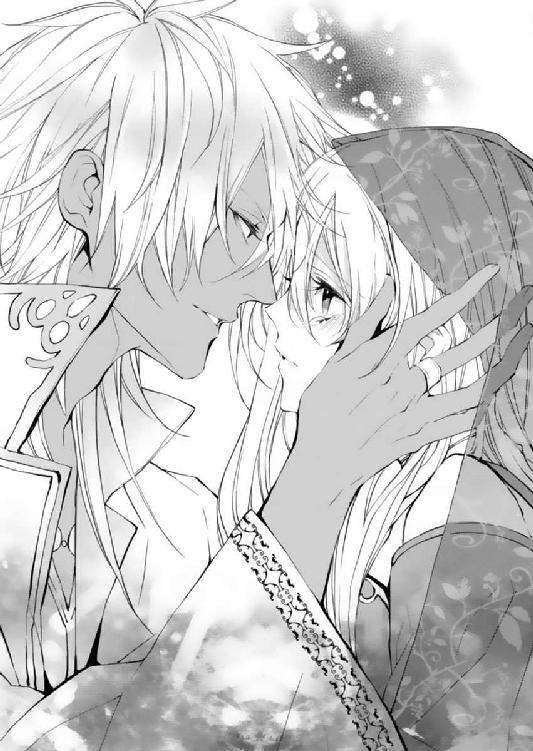
人は変わる──。いいようにも、悪いようにも──。
父はそう言った。目の前のサディーンの瞳はいきいきと輝いて、王宮へ向かう前の彼とは別人のようだ。
（サディーンは、良い方向へ向かっているんだ。今回の事件を通して、彼は変わったんだ......）
あたしも、変わりたい。
彼が自分と一緒にいるために動き出してくれたというのなら、自分も彼に応えたい。
魔法と王族は共にあるべきではないと思い、その考えに従って彼との別離を考えていた。
けれど、父はまったく違った答えを自分にくれた。
かつて魔人と人は相容れずに、別れの道を取った。
けれど人が変われば、運命も変わったかもしれないと。
（人間と魔人が不幸な結末を迎えたのは、昔のことだ。あたしもサディーンも、その過去を知っている。だから魔法と人が共にいられる未来を、作れるかもしれない）
「あたしもここでまだできることがある。サディーンが迎えにくるのを待っているだけは、嫌だ」
「シェヘラ......」
「あたしも国王さまに認めてもらえるようにがんばる。大変な思いをしている人もここにいる。クルファさんとも、まだ話せていない。ひとりだけ安全な場所で待ってるだけだなんて、できないよ」
そ、それにとシェヘラは続けた。
「ふたりで一緒に支え合うのが、恋人同士だと思う」
サディーンは穏やかに笑って、シェヘラの髪にくちづけをした。
アフガットの天幕を訪ねたふたりは、まず現在の状況を確認した。
暴動はほぼ終息し、残された問題はひとつ。
「山間部の除染が必要だ」
アフガットはそう言いながら、山の地図をにらみつけていた。
クルファは山の源泉にジャクラマールを流した。彼女の狙いは、アフガットの軍が駐屯する村の井戸水を毒で汚すことである。
思惑どおりに彼の部隊は井戸水を飲み、半数以上の兵が使い物にならなくなった。
「クルファに解毒させるのは......もう、無理だよな」
サディーンの言葉に、シェヘラはうつむいた。
クルファの手には酷い火傷ができていた。もう以前のように腕を動かすことができるかは分からない。これでは薬も作れないだろう。
（あたしが、ちゃんと止められれば......）
「俺がラティーヤを押さえられなかったことが原因だ」
サディーンはシェヘラの手をぎゅっと握った。暗に、責任を感じる必要はないと言っているのだ。
「あたしに何かできることはありますか。林檎は......使うことはできないけれど、他のことで、お手伝いとか」
「いや、林檎を使ってもらいたい」
アフガットの言葉に、シェヘラは目を瞬かせた。
「どういうことですか？」
「除染の方法が記されたものがあればと思い地下を調べたが、それらしきものは見つからなかった。ラティーヤが燃やしたものの中に、あの女の『大事なもの』が入っていたそうだな」
棚に入っていた紙束は、薬に関するものだったのかもしれない。クルファが必死で棚に取りすがっていたのは、おそらくそれが失われるのを恐れたからであった。
「ただ、まだ可能性はある。薬の調合式を、すべて崩す」
「調合式？」
サディーンがたずねると、アフガットがおもむろに筆記具と紙片を取り出して、さらさらと何かを書き連ね始めた。
「おい、俺古代絵文字は読めないんだが」
「さ、サディーン。あれ古代絵文字じゃない......」
アフガットが難しい単語を連ねた紙を見せる。
「この薬は簡単に除染薬を作れないよう、非常に複雑な調合式のもとで精製されている。そこを逆手に取る」
「逆手に......？」
「以前私がジャクラマールの亜種で試作品を作ったとき、いくつかの成分を加えると式が歪んで一部が意味を成さなくなることがあった。ただこの一部がどこに作用するかが見極めきれず、私は除染薬を作ることができなかった」
アフガットは難しい顔をするふたりに向かって、続けた。
「それは、本物の毒がほんのわずかしか手元になかったからだ。だが今はある。いくらでも試せる」
「汚染された井戸水を使うんだな」
アフガットはうなずいた。
「水源から違う成分の薬を流すことで、劇薬を中和する。毒として成り立たなくさせる」
毒の成分を変化させるために、異物を流す......？
「ただこれにはひとつ問題がある。この毒は濃度が高いほど......つまりは山脈付近へ近づけば近づくほど、作用が強まり人体に強い影響を及ぼす。ジャクラマールを仕込んだ水源一帯は毒まみれのはずだ。たどり着くまで持たないかもしれない」
井戸にたどり着いている毒で体調を崩す者がいるということは、源泉のあたりにはさらに強い毒が撒かれているはずである。
ジャクラマールの甘ったるい香りは、シェヘラもかいだことがある。たとえ口にしなくても、意識を持っていかれそうになったのだ。
「これは途方もない賭けだ。魔法はできるだけ使いたくなかったが、そうも言っていられない。林檎の力で一時的に毒をしのぎ、山に入る」
「ま、待ってください!! アフガットさまが行かれるんですか？」
「調合するのは私だ。私が行かなければ、不測の事態に対応できる者がいないだろう」
そんなことをすれば、いつかはアフガット王子に病が返ってきてしまう。
命の林檎は病を治すものではない。一時的に怪我や病気を取り払うだけのものである。
サディーンは、難しそうな声を上げた。
「もうすぐ物資と援軍が来るんだろ。急場はこれでしのいで、他にもっと安全な方法は採れないのか？ あんたがここまでする理由は何なんだ」
「北の土地のためだ」
アフガットは立ち上がり、荷物箱から一枚の紙を取り出した。アラハバート国の地図である。
「地下通路を調べるうちに分かったことだが、アフラ砂漠の中央から北では、生活物資はたまにやってくる隊商頼み、若者たちに仕事もない。荒廃しきった場所だ」
サディーンは目を細めた。それは旅暮らしをしている彼も、気になっていた現実なのだろう。
「必然的に、この地帯に住まう者は弱者となる。ドゥルタヤの女が焚きつけなくとも、遅かれ早かれこの問題は表面化しただろう。速やかに手を打つべきだ。それに」
「それに？」
サディーンはアフガットをちらりと見やる。彼は咳払いをして、答えた。
「あの父上が、地方の土地には手が回らなかった。それを私が補佐してみたくなった。それだけだ」
シェヘラは、そっとアフガットの白皙の肌を見る。
白い肌は、紅潮するとひと目で分かってしまうというのは、アフガットとシェヘラの共通点でもある。
「なら、俺が行く。あんたは薬だけ作ってろ」
サディーンがそう言うと、アフガットは苛立ったように声を上げた。
「聞いていなかったのか。薬の作り方が分かっている人間が行かないと、意味がない」
「分かっている人間に何かあったら、万が一のときに手詰まりになる。俺が水源に薬を流し、戻ってきて状態を報告する。それからあんたはまたその具合を見て薬を作れるし──」
「時間がかかりすぎる。今こうしている時間にも汚染は進んでいるのだ。何より、お前も私も命を落とした場合、王位を継承できる者は誰もいなくなる。最悪、ラティーヤの子に。父上は子が育つまで生きてはいまい」
「え、縁起でもないことを言わないで！ 全員が無事で、毒も消せる方法を考えましょう」
シェヘラがとりなすと、ふたりはふうっと息をついて、難しい顔をした。
「山の毒をどうにかするには、毒の調合式を崩す......。薬を作るのは、この中でアフガットさましかできないと思います。あたしは、もう一度クルファさんに除染の方法を当たってみます。記録は燃えてしまったけれど、彼女なら覚えているかもしれないし」
「そうだな。調合したのはあいつだし、記憶している可能性はある。クルファの取り調べはしたのか？」
「煙を吸っていたのか、ほどなくして気を失ってしまった。見張りを数人つけて休ませている。あの女は罪人だが、腹の子は王家の子だからな」
「クルファさんが目を覚ましたら......他の人でなく、あたしとお話をさせてもらえませんか」
シェヘラは、ゆっくり言葉を切った。
「地下で話したとき、あたし言ったんです。自分の子どもに、一族のことを教えてあげられるんですかって。そのとき、彼女は少し揺らいだように見えました。きっとクルファさんの中でも、迷いがあるんです。誰でもないあたしと話をさせてください。不思議な力を受け継ぐ者として、彼女と対等に話をしたいんです」
アフガットはしばし腕を組んでいたが、
「いいだろう。ただし、護衛をつけたうえでだ。シャフリヤールも同行しろ。護衛には以前、魔法の道具を探させていた──魔法について知る者をつけるので、内容は気にせず好きなことを話せ」
「ありがとうございます」
シェヘラがほっと胸を撫で下ろすと、サディーンが身を乗り出した。
「それで、クルファからうまく情報を聞き出せた場合について考るぞ。その場合、薬を作るまでにどのくらいの時間を短縮できる？」
「手当たり次第試す時間そのものがなくなる。原料さえ揃えばすぐにでも取りかかれるはずだ」
「では逆に、聞き出せなかった場合は？」
「一日から......最悪、どのくらいかかるか見当がつかない」
何の手がかりもなしに複雑に作られた劇薬に対処しなければならないのだから、時間の当たりもつかないのだろう。
「聞き出せなかった場合は、王都から医者を引っ張ってこられないか？ 村人への治療もそうだが、あんたの助手にすればいい。このへんの村医者じゃ限界があるだろ」
「要請はしている。だが医師は、軍隊のように動けない。強行軍は無理だ」
訓練された軍人ならばここまで数日でたどり着けるところだが、民間人となるとそれなりに時間を要する。
サディーンはそうだな、と言葉を切った。
「とりあえず、いろんな手段を考えておくとして、明日のことを決めよう。俺とシェヘラでクルファから何か聞き出せないか当たってみる。それから、物資はいつ届く？」
「明日には到着するだろう。援軍が輸送してくることになる」
「では俺は、それを村人に配る。近隣の村も全部やられてるんだろ。薬を作るのに、何か必要なものがあれば、探してきてやるよ」
「あたしも、お手伝いします。村の人のお世話に女手が必要なところがあれば、そちらを優先的にお手伝いします」
アフガットはしばし、手元の紙を見下ろしていたが、
「やはり山へは私が行く。シャフリヤールは物資を配給し医師を割り振れ。お互いそちらの方が向いているだろう」
「でもな......」
「対村人ではお前のような庶民臭い人間がいた方がいい。だいたいお前が北へ来たのは、もとより私の反王政派討伐の手足となって動くためだろう。命令に逆らうな。ぐだぐだ言わずに水を運べ。不愉快だ」
「さっきから庶民臭いだの不愉快だの、あんた、もう少し言い方ってものが──」
「あ、あの！ 喧嘩しないで」
シェヘラが叫ぶと、ふたりは再び深く息をついた。
「......とりあえず、すべては明日だ」
サディーンの言葉を合図に、三人は眠ることにしたのであった。
「死ぬーっ!!」
アリーは叫びながら、芋虫のようにテントの中を転がった。
「間違いなく死ぬ。俺は死ぬぞ。アフガット王子め正気か!? 俺は林檎の恩恵なんて受けられないってのに、山奥までついていかなきゃいけないのかよ」
ドゥルタヤ族の役目は、王位継承権を持つ者を観察することである。
つまりは、アフガット王子が毒まみれの山道を登ることになれば、そこをついていかなくてはいけないわけで......。
「アリー、しっかりしろ。死んでも死体から情報を盗まれないようにしなきゃならんから、今のうちに身元が割れそうなものはそこで焼いておけ」
「先輩、冷たいですよ！ 俺の命より俺の死体の心配しないでくださいよ！ 俺のクジ運最悪すぎる！」
アリーが嘆いていると、ぬっとふたりの休むテントに現れた男がいた。一瞬、ふたりはぱちくりと目を動かしたが、やがてぶっと噴き出す。
「ドライド、何だその前髪。気分転換か？」
「......焼けた......。地下の火災に、とばっちり......」
ちりちりになった前髪の下から薄青の瞳を覗かせて、ドライドは溜め息をついた。
シャフリヤール王子を観察するドゥルタヤ・ドライドは、第三王子が北へ行くつもりだと聞きつけると、彼が外出許可を取りつける前にすぐさま王都を出発した。
前髪が焼かれたということは、どうにか王子たちに追いついて、観察することができたということなのだろう。
「絨毯で、移動されると......地下を使わなければ間に合わないから......厄介」
「ご苦労だったな。クルファと王子たちのやりとりは聞いていたか？」
「だいたいは......。観察者については、クルファは口を割ることはなかった......。けど、もうばれてもおかしくはないと思う......。それよりも、クルファが妊娠したこと......」
「まずいな。完全にまずい。国王にとっての最初の孫がいきなり禁忌の子だなんて、王は衝撃のあまりすぐにでもおっ死んじまうかも」
「縁起でもないことを言うな」
シフラにたしなめられ、アリーはああー、と気が抜けるような声を上げた。
「ラティーヤ王子はさっさと王都に送還されちゃいましたけど、クルファはまだ駐屯地で監視つき捕虜ですよね。腕が焼けちまったから、もうあの女は一族の力を使うこともできないが」
「腹に子がいるのが厄介だな。ラティーヤ王子は継承権を失ってはいるが、子は国王の孫に当たる。たやすく処刑はできないだろうよ」
アフガット王子も、彼女の処分を決めあぐねて、とりあえず撤退まで軍に留め置くこととしたのであった。
「クルファの子のことは......産まれるまでは......どうにもできないのだし......しばらく、置いておくべき......」
ドライドの言葉に、ほかふたりはうなずいた。彼の言うとおり、子が出てくるまでにはまだ時間がある。
「それよりも......これで継承権一位のふたりが残った......どちらが王にふさわしいか......今がたぶん、大事なとき......」
「言われなくても分かってるっつの。じゃあ情報交換いくぞ」
ドゥルタヤたちは、己が見聞きした王子の情報を、詳細に語り始めた。
「アフガットさまに、林檎を使っていいのかな」
シェヘラはランプの中で揺らめく灯を見つめながら、つぶやいた。
駐屯地のテントの中である。
（アフガットさまは、林檎の能力で退けた病が後から返ってくるということを、納得していたけれど......）
アフガット王子に協力したいとは思うものの、後のことを考えれば、彼の命の保障はどこにもない。
サディーンは寝床の準備をしていた。
「正直なところ、五分五分だろうな。薬がうまく作れればあいつ自身もそれを自分で服用できるが......まずはクルファを当たるしかない。朝になったら一緒に行こう」
それにお前は休んだ方がいい、とサディーンは続けた。
「目が真っ赤だし、いつも以上に顔が青白いぞ」
強い口調で言われ、シェヘラはきょとんとした目で彼を見上げた。
「目は、もともと赤いんだよ」
「緑のところまで赤くなってるぞ」
そうなのだろうか。ここには鏡がないので、確かめることができない。
確かに、いろいろあって──疲れていることには、間違いがない。魔法も何度か使ったうえに、地下に入ってからは緊張の連続であった。
（また魔力がなくなって倒れたら、いざというときアフガットさまに協力できなくなってしまう）
アフガットは、シェヘラの林檎の力を借りて山へ登ろうとしている。シェヘラが倒れれば、アフガットの計画は意味を成さなくなってしまうのだ。
「分かった。ちょっとだけ、休む」
「いい子だ」
「で、でもね......。サディーンはどこで寝るの？」
「ここ」
シェヘラはきょろきょろと天幕を見渡して、
「あたしは？」
「そこ」
サディーンが指を差したのは、彼が準備した寝床のすぐ隣にくっつくようにして置かれた、柔らかそうな毛布であった。
「俺は枕だけでいいから、毛布使っていいぞ」
「い、一緒に寝るの？」
「当たり前だろうが。隊が忙しくしてるのに、別の天幕を張ってもらうわけにいかないだろ。病人用にひとつでも天幕の空きがあった方がいいんだからさ」
シェヘラは言葉に詰まった。確かに彼の言うとおりである。突然やってきたシェヘラたちにひとつ天幕を貸してもらえただけでも、感謝しなければならないのだ。......サディーンが、アフガット王子や他の兵士と同じ天幕を使うという方法もなくはないのだが......。
毛布も天幕も節約した結果、ふたりでひとつのものを使うことになってしまった。
「わ、分かった......。じゃああたし、あっちの隅で......」
「もう一緒に寝たことがあるんだから気にすることなんてないだろ」
舞姫誘拐事件の調査のおり、茶店でうっかり眠ってしまったときのことである。
「変な言い方しないでよ！ あれは不可抗力で......」
「そっちこそ隣で眠るってだけなのにそんなに慌てて、やらしいことでも考えてたんじゃないのか？」
「そんなんじゃない！」
シェヘラはむっとして、ずんずん毛布のところまで進み、くるまった。そこまで言われたらここで眠らないわけにはいかない。
結婚前の男女なのだから、別室で眠るのが当たり前だというのに。
（やらしいことなんて考えてない。常識でものを言っただけよ）
サディーンはくすくす笑って、シェヘラの隣に寝転び、彼女の背中に呼びかけた。
「シェヘラさーん、怒ってる？」
「怒ってない」
「じゃあこっち見て眠ってくんない？ 寝顔を見たいから」
「いや」
なぜわざわざ寝顔など見せなければならないのだろう。だいたい、見せたくないし。......よだれ垂れてるかもしれないし。
ぶしっ、と彼がくしゃみをしたので、シェヘラは思わず振り返った。
このあたりは、真夜中になると気温がぐっと下がる。日中と温度差が激しく、気候に慣れていない者はたちまち体調を崩してしまうのだ。
毛布なしで寝るには、今夜は厳しい寒さであった。
シェヘラはおずおずと、サディーンに自分の毛布をかけた。少し距離があるので、彼の腕しか隠せない。
「......」
むっと頰をふくらませて、シェヘラはそっと彼の方へ体を寄せた。毛布を半分、彼の体にかける。
「シェヘラ。あったかい。ありがとな」
「......うん」
こうしてひとつのものを一緒に使うというだけで、心があたたかくなるのはなぜなのだろうか。先ほどまですねていた気持ちが噓のように穏やかになっている。
（これが、人と生きるということなのかもしれないな......）
クルファやラティーヤ王子にはきっと、本当の意味で毛布を分け合うような人間が、いなかったのだ。
「シェヘラが泣いてくれたとき、実はうれしかった」
サディーンはぼそりとつぶやいた。
彼が王宮へ帰ると言ったときのことを思い出して、シェヘラはうつむいた。
「俺と別れるの、平気じゃないんだって思ったら、正直舞い上がったよ」
「平気じゃないよ。寂しいけど、辛いけど、我慢しなくちゃいけないと思ってたよ」
「イスプールへ一緒に行くのにしぶってたのも、本当は我慢してたから？」
「......うん」
もうここまできたら、正直に気持ちを言った方がいい。
胸がばくばくするとか、焦ってうまく舌が回らなくなるとか、そんなものは気にせずに。
「サディーンのことが好きだから、離れるのが嫌だったの」
「......」
サディーンはシェヘラのことを、ぎゅうっと抱きしめてきた。
「えっ、あ、あの」
「──今度は俺が顔赤くなってるだろうから、見ないで」
「サディーンはいつも、あたしの顔を見るのに」
「俺は見てもいいの」
「ずるいよ、自分ばっかり」
シェヘラは意地でも顔を見てやろうと、彼の腕の中でじたじたしていた。そのうちなんだかおかしくなってきて、ふたりして笑った。
声を出して笑ったこと自体、ひさびさに感じた。
「明日──がんばるね。また一緒に笑いたいから」
「俺も」
サディーンはシェヘラの背中をさすった。
彼はいつも、自分の限界を察知し、危ないときには支えてくれる。
（あたし......サディーンがいなかったら......倒れてしまっていたかもしれない......）
どんな困難の前に立っても、彼と一緒なら乗り越えられる気がする。こうしてお互いに大事なものを分け合って、前を向いてさえいれば。
彼に与え、与えられる存在でありたい。
シェヘラは力を抜いて、彼に身を任せた。
「......シェヘラ、細いのに意外と柔らかいなあ」
「へ、へんなこと言わないで！ もう寝るからね」
意識して眠れないに違いないと思ったのだが、大きな疲労の前では意識など、ないに等しかったようである。
シェヘラはいつの間にか、安らかな寝息を立てていた。
太陽が昇ると、シェヘラは緊張した面持ちで、クルファと向かい合っていた。
クルファの薄青の瞳には、かげりが見えた。まるで、何か大事なものを丸ごと失ってしまったかのようだ。
クルファには監視がついていたが、清潔な寝床が与えられていた。自由は許されていないが、不自由すぎることもまた彼女には許されていないのであった。腹の子のために。
アフガットが手配した護衛は、天幕の外に待機してもらっている。かたわらにはサディーンが立っているが、シェヘラは自ら、「ここは自分に任せてほしい」と願ったので、彼は口出しせずに状況を見守るにとどまっている。
「クルファさん、具合はもう大丈夫ですか？」
「......ラティーヤさまは、生きておられるのでしょうか」
質問をまったく違った質問で返されたので、シェヘラは戸惑ったが、答えた。
「はい。ひと足先に王都へ......」
「そうですか」
再び、沈黙である。
「クルファさん、山に毒を流したのは、アフガットさまの部隊を全滅させて、反王政派の人間を目立つように動かすためですね」
クルファは目を合わせようともしない。シェヘラは続けた。
「そうして、アフガットさまに暴徒を抑える力がないと、知らしめるために......。でも、山を傷つければ北の民の生活もまた傷つきます。クルファさんの力で、人を傷つけてしまうのは......あたしも、望みません。同じ魔人の血を持つ者として」
クルファは、ぴくりと肩を動かした。
「あたしも昔、力の使い方を間違いました。大切なものを失いました。今思い出しても、ずっと後悔しています。だから、同じ思いをしてほしくないんです。クルファさんだって......一族のことが嫌になったのではなく、一族が受け入れられない環境が嫌だったんでしょう。でもこのままじゃ、ますます受け入れられなくなっていきます」
シェヘラはたどたどしく、続けた。
「父さんは、人は人と関わることで変われる、って言いました。あたし、あたしでいいなら......クルファさんと一緒に、いい方に変わりたい」
「綺麗事は、うんざりします。私はもう手を動かせない。除染薬も作れません。もう私に構う意味などないはずです。それとも、林檎の力で私の腕を一時的に動かせるようにしますか？」
クルファの言葉は、とてもとげとげしかった。
けれど、彼女から感情を引き出すことはできた。
「あたしはクルファさんに無理やり、林檎の滴を飲ませるつもりはありません」
悲しい魔法の使い方をしたくなかった。クルファが自ら、協力する気にならなければ意味がないのだ。たとえ腕を回復させたとしても、また動かなくなる絶望を抱えて、作業を強いることになる。
「あたし......クルファさんに、傲慢だと言われました。あれからずっと考えていました」
選ばれた者だけに魔法の恩恵を与えることは格差を生むと。アラハバートの玉座のそばで、多くの人間のために魔法を使ったほうがいいと。
「あたしは、その言葉で......魔法を傲慢に扱うことは、たやすいのだと知りました。舞姫を助けるためにあたしは魔法をたくさん使ったけれど、もっと考えなくてはいけないって。それはほかでもない、クルファさんがあたしに教えてくれたことなんです」
「あれはただ、あなたを追いつめるために言っただけです」
「それでも、あたしはもう一度考えることができた。自分の力について」
シェヘラは深く息を吸った。
「除染の方法を、教えてください。クルファさんがお母さんから受け継いだ力を、ここで使うべきときです」
「あなたは？ 国王からきっと、王子と関わるなと言われたでしょう。そこにいるシャフリヤール王子とも引き離される。それで満足できますか？ 自分の力がそうして差別され、大事な人間と離別することを、我慢できますか？」
「我慢、しません」
シェヘラの言葉に、クルファは目を見開いた。
「魔法の力が悪いのではなく、それをいいようにも悪いようにも使える......揺らぎやすい心がいけないのだと、知りました。でも人は、ひとりぼっちでは揺らぎます。どうしても」
だから、とシェヘラは続けた。
「あたしは人と......大事な人と関わっていきたい。もっと深く。魔法の力は使い手の心によっていくらでも変わるから。あたしはいにしえの魔法をたずさえて、今を生きる人間の手を取ります。国王さまにはそれを伝えます。理解していただけるかは分からないけれど、でもぶつかってみなければ始まらないから」
シェヘラは息継ぎをせずに、続けた。
「あたしは人間の中で生きます。人と向き合うことを、恐れません。だからあたしも、......あたしも、いろんな人と毛布を分け合えるような魔法使いになります！」
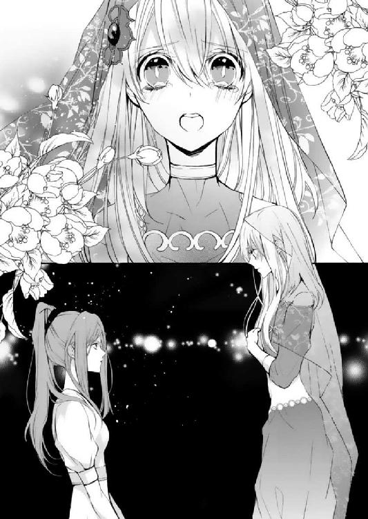
「意味不明ですね」
確かにそうだ。口下手すぎて支離滅裂だ。興奮しすぎて目に涙まで浮かんでくる。
うまく伝えられなくて、もどかしくなる。
クルファはしばしの沈黙ののちに、目を細めて、口を開いた。
「──北の谷間に、ジャクラマールと対をなす属性の花が咲いています。花びらを一度水に浸して成分を抽出すれば、ジャクラマールの核となる調合を崩せる」
シェヘラははっと顔を上げた。
「それは、何の花ですか」
「アラハバート・ルマーン。北にしか咲かない、古代の花の生き残りです。柘榴の一種ですよ」
砂の交じった風が吹きすさぶ。
シェヘラは渓谷に立って、じっと谷底を覗き込んでいた。
（思った以上に......断崖絶壁だわ）
ごくりと唾を吞みながら、シェヘラは崖の割れ目から伸びる、アラハバート・ルマーンの木に目をやった。こんなところに花が咲いているということ自体、奇跡のように感じる。
「サディーン、本当に絨毯を使わないでいいの？ 落ちたら、ただじゃすまないよ」
泣きそうな声でたずねても、サディーンは自らの腰に命綱を巻き付ける行為をやめようとはしない。
「言っただろう。魔法の力を頼らずに、俺はやるべきことをやると。地下ではお前に望遠鏡を使わせてしまった。今度は俺自身の手で花を取り、アフガットに届けなくては」
そんなことを言っても、ほかには誰も彼のことを見ていない。魔法に頼らずに物事を解決したとしても、国王が見ているわけではない。
（でも、サディーンはずるをしたくないんだ、きっと）
彼はとてもまっすぐな人なのだ。一度こうと決めたら、必ず貫き通す。
心配になって谷までついてきてしまったのだが、ここでシェヘラは何もするなと言われていた。クルファの説得のさい、サディーンに同じようなことを頼んだシェヘラは、今度は自分の番とばかりにきゅっと唇を引き結んだ。
彼は地面に太い杭を打ち、命綱を巻き付ける。
（よりによって、谷だなんて......あのときと同じ......）
シェヘラが友人を失ったのは、ここと同じような深い谷であった。
どうしても辛い思い出がよみがえってくる。あのときとは違う、と頭を振っても、不安は不吉に忍び寄る影のように背後からまとわりつき、気がつくとシェヘラ自身を搦め捕ろうとしてくる。
（あたしはあのときから......変わった。だから彼を信じて、見守れる。人間を信頼し、共に生きられる魔法使いになる）
必死になって自分に言い聞かせる。
「シェヘラ」
サディーンはせり出した岩に片足をかけて言った。
「見てろよな」
「......うん」
これは彼の闘いなのだ。シェヘラは両手を組んで、必死に祈った。サディーンの遠い祖先、アラハバート神が彼を守ってくれるようにと。
足場を探りながら、サディーンは徐々に谷底へと進んでゆく。一見順調そうに見えたが、もちろん彼は岩登りなどしたことはない。試行錯誤しながら、体を下ろしてゆくので時間がかかる。落ちれば間違いなく即死の高さを進むなど、信じられないくらいの恐怖心があるに違いない。
シェヘラがはらはらと見守っていると、彼女のかたわらに打たれた杭が、ぐんっと音を立てた。
「うわっ」
「サディーン！」
サディーンが足をかけていた岩が崩れたのだ。
ぱらぱらと、小石が下へ落ちてゆく音がする。
「サディーン、やっぱり戻って！ 危ないよ」
「もう少し......」
彼の指先が柘榴の花をかすめる。足場を失い体が揺れているので、なかなか摑むことができない。
サディーンは、ぎり、と奥歯を嚙んだ。
「あきらめるかよ、こんなところで」
彼は岩壁を勢いよく蹴った。ふりこの力で、柘榴の木の場所まで一気に近づく。むしり取るようにして花を手にすると、ほうっと息をついた。
きりきりと綱が音を立てている。
ぶちぶちという音が聞こえ始めたとき、シェヘラの背中から血の気がざっと引いた。
サディーンは岩壁にしがみつきながら、柘榴の木に手を伸ばす。片手で枝を摑むと同時に、綱がちぎれた。
「サディーン、命綱が」
彼は言葉もなく、柘榴の花を胸に挿し息を整えた。それから慎重に手掛かり足掛かりを探し、岩壁を伝い登ってくる。
「シェヘラ......先に花を」
シェヘラが泣きそうな顔で彼のことを覗き込むと、サディーンは花を掲げた。
精一杯腕を伸ばして、柘榴の花を受け取る。赤い花をそっと抱きかかえて震えていると、サディーンはひょっこりと崖から顔を出して、笑った。
「ほら見ろ。できただろう」
「うん」
王族衣装はちぎれ、顔は汚れて彼はすっかりぼろぼろだった。けれど今までいちばん、たくましく見えた。
崖の上にたどり着き、肩で息をするサディーンに、控えていた絨毯が我慢できずにまとわりついた。
「俺、しばらくは何でもできそうな気がする」
サディーンは焦げ痕のついた絨毯を撫でながら、空を見上げた。
サディーンが花を届けると同時に、アフガットはすぐさま調合を開始した。
クルファは林檎の滴を飲んで自ら除染薬を作ろうとはしなかったが、代わりにシェヘラに作業のこつを伝えていた。あれからアフガットが彼女をたずねてもだんまりだったというのは、ふたりが柘榴の花をたずさえて本隊に戻ってから知ったことであった。
クルファはシェヘラにだけは、心を許したのかもしれなかった。彼女は、魔人の父の言うとおり人と向き合うことに成功したのかもしれない。
サディーンはバスコーから到着した物資を運びながら、アフガットを待った。
明け方頃になってようやく薬は完成した。アフガットが登山の準備を始めると、サディーンはいま一度たずねた。
「本当に、あんたが行くのか。俺は今からでも山へ行けるぞ」
「しつこい。水はどうした」
サディーンの方には目もくれず、アフガットは薬品を瓶に流し込み、荷物の中へと詰め込んだ。
「配ったよ、全部。応援もそれぞれの村に派遣した。だから俺が行ったって──」
「頼みたいことがある」
ようやく器具の梱包を終えると、アフガットはサディーンの方をまっすぐに見た。
サディーンは、その視線と、彼の言葉に思わずたじろぐ。
アフガットに頼み事をされたことは、今の今までない。あったとしても交換条件つきの交渉だけである。
彼がこれから、重要なことを切り出そうとしていることは明らかであった。
「ラティーヤがどのようにお前と会話したのか、父上に伝えろ。私はあいつが火をつけておかしくなったところしか知らない。それ以前を見ていた兄弟は、お前だけだ」
「ラティーヤの......」
「あれではもう、まともに会話もできまい。できるだけ詳しく父上に伝えろ。あいつは罪人で、愚か者で、そして私たちの兄弟だ。分かるな」
ラティーヤの気持ちを代弁できる者はいない。すぐそばで見ていた人間以外は。
そして、自分たちには、血の繫がりがある。兄弟としての責任が。
「──分かったよ」
こんなときだけ兄らしいのは、反則である。
サディーンはしぶしぶ、うなずいた。
『白の宮殿』の一角。ドゥルタヤたちの会議室では、二人のドゥルタヤと、いくぶん顔色の優れない国王が向かい合っていた。
シャフリヤール王子と魔法使いの少女は王都に帰還し、クルファは医師の診察を受けている。腕は一生動かせないという診断が下されたが、腹の子は無事であった。
国王はまず、深くため息をついた。
「アリーはどうした」
「アフガット王子と共に、毒の山へ登っていきました。生きていれば戻ってくるはずです」
シフラが報告すると、王は眉を寄せた。
「大丈夫......です。アリーの兄さんも、アフガット王子も......しぶといから......」
国王はラティーヤがクルファとの間に子を生したこと、そしてラティーヤが彼女に利用されていたこと、第三王子が地下で見聞きしたすべての報告を受けていた。クルファが最終的に、魔法使いの説得により除染に協力したということも。
「現時点で、われわれドゥルタヤが判断した結果を、ご報告してもよろしいでしょうか」
「頼む」
シフラは咳払いをして、話し始めた。
「アフガット王子は最初、クルファの策にまんまとはめられました。クルファに操られた反王政派の襲撃に踊らされ、山に仕込まれた毒に気がつけなかった。その事実は減点対象です」
しかし、とシフラは続ける。
「遠回りをしたことで、思いがけず民の本音を聞くことができた。これにより反乱分子が何を思っているのかを、自分の耳で聞き理解することができた。何より成長したのは、イスプールで魔人のランプを目の前にしながら、それを手に取らなかったことです」
「ほう」
「ラティーヤ王子を捕らえてからは、帰還して成果を報告する役目をシャフリヤール王子に託し、除染のために駐屯地に残りました。今まで彼に決定的に足りなかったものは、国王としての器量ではなく、自分が誰の上に立つ者なのかを理解することでした。今回の遠征で、民の目線で物を見ることができるようになったかと思います」
「ずいぶんと評価が高いな」
「アフガット王子は、能力の使い方がどこかずれていました。生まれに惑わされ、囚われていた。だが、ようやく正しい道を見つけられたようです。目標さえ誤らなければ、もともと資質は高い王子です」
シフラの報告が終わると、次はドライドの番であった。
「シャフリヤール王子は......魔法使いと共に、クルファの説得に当たりました......。クルファが何を考えているのかを......見極めるために、機転を利かして大胆な行動を取りましたが......結果的には、ふたりを捕らえることができた......」
「魔法使いと共に、か」
国王の言葉に、ドライドはうなずいた。
「シャフリヤール王子は......もともと、人の中で輝ける人材......誰かを助け、手を差し伸べ......引っ張っていく力があります......。ひとりではなく、大事な人間がいてこそ......彼は強くなる。この点は、アフガット王子と大いに異なるところです......。機転の早さと、支える強さは......三人の王子の中で最も優れています......ですが」
個人的に、とドライドは付け加えた。
「国王というものは......孤独です。支えるのではなく......支えられる側の人間。そして支えられる人間に、裏切られることもある......。シャフリヤール王子は......その点から考えると、少しばかり優しすぎる......」
大勢の人間の中にいてこそ、第三王子は力を発揮できる。国王の周囲には確かに人は多いものの、本当に信用できる人間というのはほんの一握りだ。疑い、切り捨てる心も、必要である。
彼がたったひとりで柘榴の花の採取にあたったことは高い評価を得たが、もとより持ち合わせた資質を見れば、結果はおのずと決まってきた。
シフラは咳払いをして、まとめに入った。
「アフガット王子が無事に帰還することができれば、われわれは次代の国王にアフガット王子を推したいと思っております」
国王はドゥルタヤたちの報告書に目を通す。金の瞳をひときわ鋭く光らせ、告げた。
「アフガットは私の力が及ばぬ先を見極め、そして己の手で補佐しようとしている。足りないところはあるが、将来に期待しよう──次代は、アフガットに譲る」
しかし、アフガット王子は現在命がけで除染に当たっている最中である。
「つまりは、アリーが戻ってくるかどうかで、次代が決まるというわけだな」
国王が言うなり、会議室の扉が乱暴に開いた。
「やべー!! 毒がきっつい！ 下痢が止まらん!!」
アリーが蒼白な顔で、倒れ込んでくる。
「......決まったか」
国王は王冠を外し、黄金の表面を撫でた。
次代の冠はこうして、次の世代へと受け継がれることになったのである。
面会の許可を得たシェヘラとサディーンは、国王の私室を訪れた。
国王は、ほんの少しだけ頰がこけたという以外、変化は見受けられなかった。城を出る前と変わらない、鋭いまなざしをしていた。
ふたりは、国王に布張りの柔らかな椅子に座るように勧められ、腰を下ろした。人払いがされているのか、女官ひとり見当たらない。
「まずは、遠征ご苦労だったとねぎらっておこうか。魔法使いにも、息子たちはだいぶ助けられたようだな」
シェヘラはうつむいた。魔法の力をまったく使わずに、今回の事件を解決したわけではない。王子と関わるなと言われたばかりである。
「シェヘラは、俺や村人を助けようとして──」
「お前は少し、黙っていろ」
威圧的に制されて、サディーンは不満そうに口を閉ざした。
「私が話したことを、忘れたわけではあるまい。どうしてクルファについて行った？ 神殿でおとなしく、父の陰に隠れていれば良かったのでは？ 王族たちの争いに身を投じたりせずに」
「あ、あたしは」
シェヘラは緊張のあまり声を詰まらせたが、国王は急かそうとしなかった。心を落ち着かせて、ゆっくりと言葉を発してゆく。
「クルファさんが──いにしえの力を持つ彼女が、誤った力の使い方をしてしまうことが、気がかりでした。あたしも以前、あることがきっかけで自分の力が信じられなくなったときがあります」
そして、自分は助けられたのだ。今隣にいる、サディーンに。彼の家族たちに。
「人は、大切な人間のそばにいて強くなれる。だから変わることもできる。クルファさんには、それに気がついてほしかった。あたしは彼女にぶつかって、思いとどまらせたかったんです。魔法の力の源は、人を思いやる気持ちだって、父に教えてもらったから」
「しかし、その力は今のアラハバートでは必要のないものだ」
この土地に魔法はもう必要がないというのなら、自分は魔法を手放すべきなのかもしれない。
けれど、いにしえのことを覚えていたい。人と魔人が、確かに手を取り合っていたということを。
「そうです。人間は人間の力で生きていけます。でも、それは人が支え合っているからでしょう？ そういう意味では、魔法の力の源も、同じってことになります。大事な人を守るため、思いやりの気持ちで使うものだから」
シェヘラは、唾を吞み込んで続けた。
「確かに、この力はアフガット王子にも、ラティーヤ王子にも、欲しいと言われたことがあります。けれどアフガット王子は、もう魔法が万能でないことを知っています。彼は──林檎の滴で山へ行くことを、途方もない賭けだと言ったから」
それに、とシェヘラは続けた。
「ラティーヤ王子も、本当は魔法じゃなくて......人の愛が欲しかったんだとあたしは感じました。本当に恐ろしいのは、魔法ではなく、未知の力に甘えた人間が人の温もりを忘れてしまうことです」
シェヘラはおずおずと国王を見上げた。先を促すように、国王は首を縦に振った。
「魔法はすでに失われたものですが、魔人と人がなぜ分かり合えなかったかを、人は覚えていくべきだと思います。そういった意味ではまったく不必要なものでもない。魔法の力はいらなくても、教訓は必要です。教訓を正しく伝えることができるのは、魔法に親しんだ者だけです」
「なるほどな。その教訓を使い、クルファに除染の手段を白状させたのか」
「あたし......薬も作れないし、難しい政治のことも分かりません。人の世界に触れたばかりで、いつも転びそうになっています。でも、これからもっと成長したい。そして、サディーンや、周りの人を支えていける......このアラハバートを支えていける、ひとりの人間であり、魔法使いで、いたいのです。それには、ひとりじゃ無理なんです」
シェヘラはすうっと息を吸った。
「あたしはずっと一人前になりたいと思っていたけど、ようやく気がつきました。いろんな人と支え合って、人はひとり立ちできるんだってことに。あたしは、それをサディーンに教えてもらいました。だから、今度はあたしが彼を支えたい。どうか......息子さんを、あたしにください!!」
国王とサディーンは、お互い面食らったような顔をしていた。
思わず口走った言葉を反芻し、シェヘラは顔を紅潮させる。
これでは──まるで、求婚してしまったかのようだ。
（でも......サディーンと一緒に生きていきたい。彼を支える、家族になりたい。二人で支え合って、一人前になりたい）
だからどうしても、彼と離れたくはないのだ。
ちらとサディーンを見ると、彼は口をぱくぱくさせて、シェヘラに何かを言おうとしたようだが、結局言葉にならなかったようである。潤んだ目のふちが赤くなっていた。
そんな表情の彼を見たのは初めてだったので、シェヘラはぱちくりとまばたきをした。なんだか──すごく、いとおしいかもしれない。
国王は耳まで赤くなった息子に苦笑しながら、
「王位はアフガットに継がせることにした。シャフリヤールは、継承権第二位だ」
「......え？」
「王族は国王の許可がなくては自由に動けない。私はアフガットの回復しだい、退位して残り少ない余生を謳歌させてもらうことにする。次の国王に聞いてみることだ。外に出て、一緒になってもいいものかどうかと」
サディーンは、シェヘラと国王を見比べてから、たずねた。
「でも......俺の王籍はなくならないんだろ？ 継承権二位の人間が外に出てもいいのか？ いろいろ、補佐とかやることがあるんじゃ」
「お前がいなくても、今まで国は動いていた。城の外に出るなり何なり、好きにしろ」
王は一度言葉を切って、
「そのためのシャフリヤールだ。誰も王になることを期待しない」
思いがけず、国王は優しい顔をした。
「お前は母親そっくりだ。王宮は窮屈で、たいそう生き辛いだろう。正直私はほっとしている。この結果に」
シェヘラは、その言葉を聞いてすべてを悟った。国王が誰を自分と重ね、サディーンと別れるように言ったのか。そして、サディーンを何のために城から出したのかを。
（国王さまは......最初から、サディーンとお母さんを王宮から出してあげるつもりで......シャフリヤールと名付けたんだ......）
サディーンは、しばらく口を閉ざしていた。
シェヘラが様子をうかがおうとすると同時に、彼はかすれる声でたずねた。
「......このあと、少し時間をもらえませんか。話したいことが、たくさんあるのです」
シェヘラは微笑んで立ち上がった。
ようやく親子が失われた時間を取り戻すときがやってきたのだ。
国王が穏やかな笑顔になったのを見届けて、シェヘラは静かに部屋を去った。
夜中まで政務に追われていたアフガットは、ようやく最後の書類を書記官に託すと、深く息をついた。
彼が山に登ってから、半年が経っていた。
父は床に伏せることが多くなり、もう長くはないことを悟る。
王の仕事量は想像以上である。特に父の得意とする外交分野は、膨大な量を占めていた。
（これでは、とても地方に手を回すのは無理だな......）
しかし、一度やると決めたことを投げ出すのは、アフガットの精神に反する。
（ベルシア王家から妻をもらって解決できる話ではない。政略結婚はあくまで現状の決まり事を強める切り札のようなものだ。誰か外向きに強い人材が必要だな）
人好きがする性格で、なるべく交渉事の得意な人間がいい。そして必要以上に国内のしがらみがなく、かといって弱い立場でもない人間が。
「そんな都合のいい人間が......」
アフガットは頭を抱え、ふと気がつく。
いる。自分の身内に、ひとりだけ。
結婚の許しを出したばかりだが、どうせギルドはバクラーシへ向かうのだから、ついでに仕事をさせればいい。
書状をしたためようとしたそのとき、扉を叩く音がする。
「アフガットさま、よろしいですか」
アフガットは入室をうながす返事をした。
「何だ、お前たちか」
アフガットが特に信用してそばに置いている、偵察部隊のふたりは、彼の前で深く頭を垂れた。
「本日を境に、任を解いていただきたく参上しました」
「......何事だ」
「自分たちの役目は終わったのです。あなたが国王になることで、我々『ドゥルタヤ』も、次の世代へと受け継がれる」
ドゥルタヤ。それはクルファの言う日陰の一族。失われた民の──。
「長らく王子たちを観察し、そして相談してきました。次代の国王を決定するために」
「......そういうことだったのか」
過剰に守られたシャフリヤール王の墓。ラティーヤ王子のそばにいて、火災に巻き込まれたクルファの母親。そして試験制度。アフガットの中ですべてが繫がった。
千年前の盟約について、アリーが詳細に説明をした。
「あなたの子が産まれ次第、また次のドゥルタヤを一族で用意しますよ。それまではお別れで──」
「ドゥルタヤの試験制度は、廃止する」
アリーが言い終わらないうちに、アフガットは言い放った。
アリーとシフラは顔を見合わせ、言い辛そうに答える。
「こう言っちゃなんだけど、あんたは試験制度に助けられたようなもんだぞ。王子たちを公平に見る目というのは、あるべきなんだ」
「だが、お前たちが暗躍しなければいけないおかげで、貴重な人材を失うこととなった。──クルファも、クルファの母親も」
「──一族の力を持つ者は、今は少なくなっています。正直なところ、また我々が動かなければならなくなるかもしれないと、懸念するほどには。我々は、いずれ消えゆく者です」
だからこそ、クルファは焦っていた。力を持つ者が絶える前にどうしても表舞台に返り咲こうとしていたのだ。
「とにかく廃止するにせよ続行するにせよ、長老と相談しなけりゃ決められない。長い歴史に根付いた制度をそう簡単にやめられるわけでもないからな」
話し合いが必要だというのなら、いつでも臨む。
ドゥルタヤをこれからどうするか、取り組みは長期的なものになるだろう。
「......それと、クルファの子は、どうするつもりですか」
産まれた子は、女の子であった。
彼女は出産ののちに、王家の地下牢に囚われている。
王家の子でありながら、地下の一族の子でもあるこの赤子をどうするかは、アフガットがまず初めに決定を下さなければならない問題となっていた。
ラティーヤは薬で心神喪失状態にされたことを酌量され、死刑はまぬがれたものの、離れの塔に囚われ、残りの人生を過ごすことが決定づけられている。医師の診断結果をみるに、彼がそうそう長生きもできないだろうということは、アフガットには分かっていた。
ただ、父が何度か塔を訪ね、ラティーヤと時を過ごしたという話は聞いている。ラティーヤにとって少しでも安らかな時間であったのなら、それ以上のことはない。
「ラティーヤのもとへも、クルファのもとへも、赤子は渡すべきではないな」
どちらも罪人で、囚われの身である。
子を育てる環境にはふさわしくない。
「ドゥルタヤが引き取るなら、遊牧民族として育てることにしますか？」
その場合、その子は一族の中でどのような立場に立たされるのだろうか。両親はおらず、母親が禁忌を犯し王族の子を生んだということは、大人たちは知った上で接することになるだろう。
アフガットと同じく──異端の存在に。
「私の娘ということにする」
「は？」
アリーが間の抜けた声を上げた。
「年齢的にも、不自然なことはないはずだが」
「だって、アフガットさま、これから結婚控えてるでしょ。コブつきって心証悪いんじゃ......」
クルファは、ドゥルタヤが日陰の存在であることを嘆いていた。
弟は、愛を求めて離宮に火をつけた。
せめて収穫祭のときにラティーヤを捕まえることができたなら、彼は人間らしさを失うことはなかったかもしれない。この結果を招いたのは自分にも責任がある。
国王として、国を乱したふたりをかばい立てすることはできない。けれど──ふたりが生した子を、日なたで育てるくらいは、許されるはずである。
それがせめてもの、つぐないになるのなら。
「正妃を迎える前に子を作る王もいる。幸い子は女だし、跡継ぎ問題には関係ない。文句はないだろう」
「母親は誰ってことにするんですか。まさかクルファにするわけにいかない」
「そのへんの、適当な女官だ」
「アフガットさま、女官遊びなんてしてないでしょうに......女より本に夢中だって、権力者どもは嘆いてましたよ」
女は扱いが面倒なので、進んで関わり合いたいとは思わない──シャフリヤールのところの魔法使いのように『自立』を目標としている女なら、少しは興味を持てたかもしれないが。
「せめてベルシアの王女が、魔法使いのような娘だといいですねえ」
アリーに含みのある物言いをされたので、アフガットは眉をひそめた。
「......いや、せめてもう少し......ふくよかな方がいい」
「さりげなくどこ見てたんですか」
アリーは、あきれたような声を上げた。

「へぶしっ」
派手にくしゃみをして、シェヘラは身を震わせた。
「ちょっと、大丈夫？ 緊張して体調崩した？」
「ごめん、ニーダ。大丈夫よ」
シェヘラは鏡の向こうから心配そうにこちらを覗き込むニーダに、ほほえんでみせた。
このところ働きづめだったため、風邪をひいてしまったのかもしれない。
シェヘラはちらりと、積み上げていた絵物語の山に目を向けた。ニーダと共同の天幕には入りきらず、結局こうして控えのテントにまで持ち込むことになってしまった。
──ドライドは、ギルドから去った。「書くべき物語がなくなった」と言って。
シェヘラや仲間たちは何度も引き留めたが、彼の意志は堅かった。そして、シェヘラに大量の絵巻物と、商売道具を残していった。
シェヘラがこれから起こす商いに必要だろう、とすべて譲ってくれたのだった。
「ドライドのことは残念だったけれど、やりたいことが見つかって、良かったわね。またあいつとどこかで会ったらたくさん話をすればいいわ」
「そうだね。まだまだあたしの分は在庫が少ないから、しばらくはドライドの残したものを売ることになると思うし。お客さんの感想を預かって、どこかで伝えられたらいいな」
シェヘラは物語屋を引き継いだ。父から受け継いだ伝説を、正しく人に伝えるために。
魔人が去った教訓を伝えること。できれば、説教じみていない形で、面白く話を聞いてほしい。
日夜巻物に物語を起こし、もうすぐ十分な品が揃うのである。
「あら。きれいな金の冠。お姉さんたち、髪は下ろしてこれをつけてあげてください」
ニーダは宝石細工の花と蔦模様をあしらった大ぶりの冠を見て、笑みを浮かべた。
後ろでアフガットが派遣した女官たちが、せわしなく準備に取りかかっている。
「あの......。こんなにたくさん、人をよこしてもらって良かったのかな。ニーダに何もかもやってもらうわけにもいかないけど......」
「何言ってるの！ 私は好きでやっているのよ。それにシェヘラはもう国王の義妹になるんだから、遠慮しないでご厚意を受け取ったら？」
そう。今日はサディーンと婚礼を挙げる、記念すべき日である。
サディーンたっての希望で、式は王族が行うような格式ばったものではなく──海に面した美しい土地に天幕を張って、かがり火で花嫁の登場を祝う、バスコーで行われる一般的な形式の結婚式となった。
七日間にわたって行われるこの結婚式を挙げたら、ふたりは夫婦となるのである。
「めでたい！ 七日間も宴だなんて！ 私もお祝いに、お色気の匂いをサディーンに渡しておいたから。今晩は期待しておいてね」
「な、何てもの渡してるの！ やめてよ！」
「いろいろと試して最強の香りになったわ。この半年間の集大成、見せてあげるわよ。バクラーシへ行ったらこれで荒稼ぎしてやるわ」
ギルドはこの半年間、北の土地に水や物資を運び続けた。王家の依頼で仕事を請け負い、そして山脈や村人の様子を報告した。サディーンの、「アラハバートの情勢が落ち着いてからバクラーシへ行きたい」という願いを、みな快く受け入れた。
「サディーンも気合入れて七枚の婚礼衣装を揃えたしねぇ。楽しい七日間になりそう」
シェヘラが王宮で着たトーブを気に入ったと知るや否や、サディーンは同じ仕立屋にとりわけ立派な婚礼衣装を注文したのであった。
シェヘラが今身に着けているものは、金の刺繡でふちどられた群青色のトーブである。袖や襟元に精緻な飾り紋様があしらわれ、望遠鏡の玉石に似せた緑や青の宝石が夜空に輝く星のごとく胸元にちりばめられている。林檎の葉を模した刺繡のベールをかぶると、たちまち華やかな衣装となった。
「群青に金の刺繡、青や緑の宝石、そして林檎をかたどったベール。これ以上の婚礼衣装はないわね」
「全部、あたしの魔法の道具の特徴を取り入れてくれたんだわ......」
魔法をたずさえて、人間の王子と結婚することにしたシェヘラのために。
透けるベールの下には、少しうるんだ柘榴の瞳が覗いている。
絨毯もお揃いの林檎の飾り紐で体を縛っている。普段は縛られるのを嫌がるはずだが、心なしかうれしそうだ。サディーンが絨毯職人に依頼して、この日のためにぴかぴかの毛に生まれ変わったのである（繕われている間は、普通の絨毯のふりができたらしいので、これからはもっと厳しくしてもいいかもしれない......）。
女官たちはシェヘラの髪を整え終えると、礼をしてその場を辞した。シェヘラも慌てて、お礼の言葉を述べる。
アフガット王子からの婚礼祝いは、ごちそうや宴の手伝いの人員だけでなく、バクラーシへの船の手配にまで及んでいた。
サディーンは、仕入れのついでに外交をしてこいというアフガットのぞんざいな命令に「人使いが荒い」とこぼしていたが、なんだかんだと了承してしまうあたり、兄弟の距離も少しは縮まっているようである。
「先に行って、花を撒いてくるわね。シェヘラ。旦那さんもすごくおしゃれして待っていてくれるはずよ」
「う......うん」
緊張のあまり火照った頰を押さえながら、シェヘラはうなずいた。
ここから始まる。あたしの、新しい未来が。
鏡の向こうには、化粧を施され少しだけ大人びた顔をした自分が映っている。
シェヘラは婚礼衣装の裾を踏まないように、そっと立ち上がった。
天幕の外に出たシェヘラを迎えたのは、ギルドの仲間たちである。
穏やかな顔をしたカイルや、笑顔のニーダ、そして年少の子どもたちから柘榴の花を一輪ずつ手渡される。シェヘラがイスプールから呼んだ両親におじぎをすると、父は涙ぐみながらシェヘラを煙で撫で、母は彼女のベールを整えてくれた。アラハバート神の像のそばに置かれたかがり火の前で待つ、青年のもとまでゆっくりと進んでゆく。
潮風が花嫁のベールを揺らす。
サディーンは、花嫁衣装を身にまとったシェヘラにはっとしたような目を向けて、それからとろけるようにほほえんだ。
「見違えた。どんどんきれいになるな、俺の魔法使いさんは」
「......すてきな婚礼衣装、ありがとう」
「こんなにかわいい姿を七晩も連続で見られるなんて、最高の気分だ」
「お、おおげさなんだから」
このあとは、アラハバート神に夫婦の契りを交わすと宣べ、そして愛を誓い合うこととなっている。
彼と手を取り合い、像の前に向き合うと、サディーンはそっとささやいた。
「俺はかなり面倒な生まれをしている。何度も迷惑をかけたし、危険な目にも遭わせた。おまけに七日後には即ベルシアへ行くことになる。逃げるなら今のうちだぞ」
サディーンは笑い飛ばすように言ったが、瞳は真剣そのものであった。
シェヘラは、柘榴の花をきゅっと抱きしめた。
どこへ行こうと、何が待ち受けていようと、彼がいれば絶対に大丈夫なのだ。
「お互いさまだよ。一緒に生きる、って言った。サディーンなしじゃ、もう生きられないの」
「俺も、お前なしじゃ生きられない。ふたりで一人前だ」
サディーンはシェヘラのベールをめくり上げ、そっと額に唇を落とした。
あまりにも優しい仕草だったので、くすぐったくて笑ってしまう。
ふふ、と笑みをこぼしていたら、今度は彼が顔をかたむけて、唇を重ねてきた。笑い声はたちまちサディーンが吞み込んでしまった。
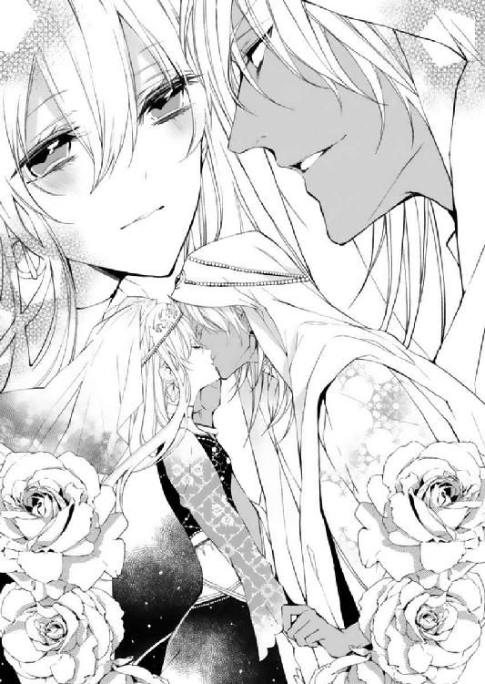
壊れそうなくらい心臓が早鐘を打ち始める。彼と結婚するというのに、触れ合うことに慣れていなくて、戸惑ってしまう。
けれど、焦らなくてもいいということは、もう分かっている。少しずつ前へ進んでいけばいい。
頰に置かれた指にそっと手を添えて、シェヘラは自分の番を主張した。
サディーンは一度離れて、シェヘラの髪をいとおしそうに撫でる。
「今度は、あたしがするの」
「どうぞ奥さん、好きなだけ」
シェヘラは少しだけ大胆に、背を伸ばして彼にくちづけを返す。
彼がシェヘラのために背をかがめてくれる。信じられないくらい近くに、彼の髪や瞳があって、再び心臓が高鳴った。
どきどきして、胸が張り裂けそう。
シェヘラが目を潤ませていると、すべて分かったというような顔をしたサディーンが、優しく抱きしめてきた。
「今夜の星と同じくらい、バクラーシで稼ぎまくって、お前を最高に幸せな花嫁にするよ」
シェヘラは彼の肩ごしに空を眺めた。幾千の星が夜空を彩っている。これが全部金貨だとしたら、相当な額だ。相変わらずの彼の言葉に思わず笑ってしまった。
仲間たちの歓声と楽器を搔き鳴らす音、そして酒樽を割る心地のよい音が聞こえてくる。
誓いの言葉をまだ言っていないというのに、ギルドの仲間はみんな気が早い。ふたりは顔を見合わせて笑い、そして大きな声で愛を誓った。
赤い花が風に乗って流れてゆく。
祝福された魔法使いの旅路は、まだ始まったばかりなのだ。

アラハバートの魔法使い、最終巻です。
今回も多くの方にお力添えをいただきました。
熱心なご指導をくださる担当さま。的確なアドバイスにいつも助けられています。
サマミヤアカザ先生。シェヘラがおめかしをするたびに、ラフがとても楽しみでした。シリーズを通して美しいイラストに何度も励まされてきました。
前担当さま、編集部のみなさまをはじめ、当作品に携わってくださったすべてのみなさまに、感謝申し上げます。
当作品はもともと投稿作として書き上げたものでしたが、身に余る賞をいただき、さらには思いがけず続編のお話もいただいて、第一巻でやり残したことを書ききることができました。
すべては読者のみなさまのお力によるものです。本当にありがとうございました。
シェヘラたちの最後の冒険は終わりましたが、みなさまになにかひとつでも楽しんでいただけたら嬉しいです。
仲村つばき
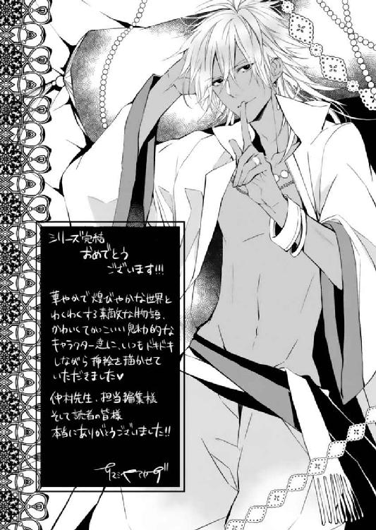
著者
Tsubaki Nakamura
６月27日生まれ。埼玉県在住。
最終巻です。投稿作のときから、この物語のテーマは『成長』でした。
見届けてくださったらうれしいです。
ありがとうございました。
電子版 ビーズログ文庫
アラハバートの魔法使い
～この愛は幾千ディナールのかがやき！～
著者／仲村つばき
イラスト／サマミヤアカザ
2013年12月13日電子版ver.1.0発行
発行人 青柳昌行
発行 株式会社KADOKAWA
〒102-8177 東京都千代田区富士見2-13-3
http://www.kadokawa.co.jp
企画・制作 エンターブレイン
デザイン 島田絵里子（Zapp!）
(c)2013 Tsubaki NAKAMURA
本電子書籍はビーズログ文庫『アラハバートの魔法使い～この愛は幾千ディナールのかがやき！～』（2013年10月25日発行 初刷）を元にして制作しております。
本書に関するお問い合わせ先
エンターブレイン カスタマーサポート
電話 0570-060-555
（受付時間 土日祝祭日を除く12：00～17：00）